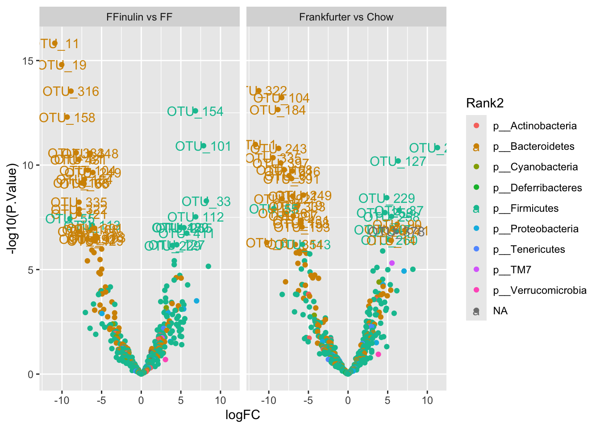

Differential Abundance for Repeated measures
In a fair part of practical research designs including repeated sampling of the same individual occur. This is statistically a powerfull way to do research, as the effect of some pertubation (diet, medication, etc) is contrasted in the same individual. Usually, a measure at baseline is available, and then one or several after an intervention. Sometimes cross over designs is used, such that each individual is undergoing all treatments in the experiment.
Modelling these data is in statistics refered to as mixed models. Mixed, due to the model having several terms modelling the random variation. For single univariate models, the nlme or lme4 package has the functionallity. For multivariate analysis such as for the microbiome, there are dedicated methods which, as for the metagenomeSeq and DESeq2 methods, has parameter shrinkage to robustify the results. Here we use the dream framework (from Bioconductor).
Example data
The sausage intervention data is an example of repeated measures with baseline and after intervention data.
library(tidyverse)
library(phyloseq)
library(variancePartition)
library(edgeR)
library(BiocParallel)
load('./data/Rats_inulin.RData')
phyX## phyloseq-class experiment-level object
## otu_table() OTU Table: [ 480 taxa and 59 samples ]
## sample_data() Sample Data: [ 59 samples by 15 sample variables ]
## tax_table() Taxonomy Table: [ 480 taxa by 7 taxonomic ranks ]
## phy_tree() Phylogenetic Tree: [ 480 tips and 477 internal nodes ]metadata <- phyX %>% sample_data()
table(metadata$time,metadata$ID)##
## F1 F10 F11 F12 F13 F14 F15 F16 F17 F18 F19 F2 F20 F21 F22 F23 F24 F25
## Slut 0 1 1 1 1 1 1 1 1 1 1 1 1 1 1 1 1 1
## Start 1 1 1 1 1 1 1 1 1 1 1 1 1 1 1 1 1 1
##
## F26 F27 F28 F29 F3 F30 F4 F5 F6 F7 F8 F9
## Slut 1 1 1 1 1 1 1 1 1 1 1 1
## Start 1 1 1 1 1 1 1 1 1 1 1 1table(paste(metadata$Description,metadata$ID),metadata$time)##
## Slut Start
## Chow F1 0 1
## Chow F13 1 1
## Chow F15 1 1
## Chow F20 1 1
## Chow F21 1 1
## Chow F22 1 1
## Frankfurter F10 1 1
## Frankfurter F11 1 1
## Frankfurter F12 1 1
## Frankfurter F17 1 1
## Frankfurter F2 1 1
## Frankfurter F24 1 1
## Frankfurter F25 1 1
## Frankfurter F29 1 1
## Frankfurter F3 1 1
## Frankfurter F4 1 1
## Frankfurter F6 1 1
## Frankfurter F8 1 1
## Frankfurter+inulin F14 1 1
## Frankfurter+inulin F16 1 1
## Frankfurter+inulin F18 1 1
## Frankfurter+inulin F19 1 1
## Frankfurter+inulin F23 1 1
## Frankfurter+inulin F26 1 1
## Frankfurter+inulin F27 1 1
## Frankfurter+inulin F28 1 1
## Frankfurter+inulin F30 1 1
## Frankfurter+inulin F5 1 1
## Frankfurter+inulin F7 1 1
## Frankfurter+inulin F9 1 1Here, the time==Start indicates pre-diet intervention, and hence here the rats should be similar regardless of diet.
The model for the responses (the abundance of the microbiome) is:
\[ y_i = a(time_i) + b(time_i,diet_i) +\kappa(ID_i) + e_i\] Here \(a\) and \(b\) describes the effect of time and time and diet in combination, while \(\kappa\) reflects the difference between individual Rats, and \(e\) reflects the residual uncertainty.
Setup the data
phyX <- phyX %>% subset_samples(ID!='F1') # remove the F1 rat with no slut data.
otutb <- as.data.frame(phyX@otu_table )
metadata <- phyX %>% sample_data() %>% data.frame() %>%
mutate(Diet = gsub('[[:punct:]]','',Description)) # we need to remove the + from the Description coloumn.
GM = DGEList(otutb)
GM = calcNormFactors( GM)
# Specify parallel processing parameters
# this is used implicitly by dream() to run in parallel
param = SnowParam(4, "SOCK", progressbar=TRUE)Specify the model
# The variable to be tested must be a fixed effect
# form <- ~ time + time:Diet + (1|ID)
form <- ~ 0 + time:Diet + (1|ID)Run the model
# estimate weights using linear mixed model of dream
vobjDream = voomWithDreamWeights( GM, form, metadata, BPPARAM=param )
# Fit the dream model on each gene
# By default, uses the Satterthwaite approximation for the hypothesis test
fitmm = dream( vobjDream, form, metadata )
fitmm = eBayes(fitmm)Look at the results
topTable( fitmm) %>% data.frame() %>% rownames_to_column('asv')## asv timeSlut.DietChow timeStart.DietChow timeSlut.DietFrankfurter
## 1 OTU_372 13.825272 14.44325 16.350681
## 2 OTU_3 14.277123 14.86154 16.717883
## 3 OTU_14 9.730454 10.65863 14.601279
## 4 OTU_51 10.745896 11.46514 10.236039
## 5 OTU_19 14.408681 13.52770 8.909757
## 6 OTU_4 13.206092 15.21415 13.989912
## 7 OTU_11 14.922619 14.65879 7.675523
## 8 OTU_431 13.114981 12.64798 7.995959
## 9 OTU_306 13.636541 12.95483 12.045826
## 10 OTU_13 12.522803 13.23759 12.711333
## timeStart.DietFrankfurter timeSlut.DietFrankfurterinulin
## 1 14.20794 15.115094
## 2 14.68724 15.501351
## 3 10.07538 13.750277
## 4 11.29011 10.225030
## 5 14.36788 5.167834
## 6 15.91445 13.369206
## 7 14.38631 4.287265
## 8 13.43585 5.947968
## 9 12.76416 12.901823
## 10 13.87313 12.428481
## timeStart.DietFrankfurterinulin AveExpr F P.Value adj.P.Val
## 1 14.39189 14.86067 1509.4112 9.918514e-65 4.760887e-62
## 2 14.82856 15.28019 1468.9729 2.270717e-64 5.449722e-62
## 3 10.26513 11.82757 1001.6910 2.625144e-59 4.200230e-57
## 4 11.27411 10.82088 931.5230 2.384366e-58 2.861240e-56
## 5 14.31967 11.27606 905.1637 5.700295e-58 5.472283e-56
## 6 15.48022 14.60381 852.4721 3.518427e-57 2.814742e-55
## 7 14.92897 11.09418 841.6390 5.185987e-57 3.556105e-55
## 8 13.37876 10.66977 834.6124 6.687445e-57 3.858178e-55
## 9 12.89817 12.73914 832.4529 7.234084e-57 3.858178e-55
## 10 14.07141 13.19170 807.0987 1.847908e-56 8.869959e-55
## F.std
## 1 52.26774
## 2 51.98809
## 3 48.04994
## 4 47.30412
## 5 47.00946
## 6 46.39404
## 7 46.26285
## 8 46.17686
## 9 46.15029
## 10 45.83312This is overall effects. Obviously, diet changes the microbiome. However, what we are interested in is the contrasts.
Contrasts
This is refered to as contrasts. I.e. compare the effect from Start to Slut for Frankfurter with the same for chow; A change versus a change or also known as Differences in Differences
This is specified using the coloumn names from the output above. Here the effect of Frankfurter is compare to the control diet (Chow).
In the specification of the model above, we include 0 to remove the intercept, and : to avoid main effects in the interactionmodel. That produce an output from the the 2 x 3 design as just the flat means for each of the 6 groups (more or less). Establishing a difference from start to end of trial is hence a contrast of two terms, while a difference of differences is made up by four terms.
L = makeContrastsDream( form, metadata,
contrasts = c("timeSlut.DietFrankfurter - timeStart.DietFrankfurter -
timeSlut.DietChow + timeStart.DietChow",
"timeSlut.DietFrankfurterinulin -
timeStart.DietFrankfurterinulin -
timeSlut.DietChow + timeStart.DietChow"))
dimnames(L)[2]$Contrasts <- c('C_FF','C_Inulin') # the labels are tooo long, so here shorter versions
plotContrasts(L)
0.1 Fit the model
fit = dream( vobjDream, form, metadata, L)
fit = eBayes(fit)0.2 Extract results and plot it
res_Frankfurter <- topTable( fit, coef="C_FF", number=1000) # we just export all
res_Inulin <- topTable( fit, coef="C_Inulin", number=1000) # we just export all
TXtab <- phyX %>% tax_table() %>% data.frame() %>% # export TAxtable to glue onto results
rownames_to_column('otu')
res <- bind_rows(res_Frankfurter %>% mutate(contrast = 'Frankfurter vs Chow') %>% rownames_to_column('otu'),
res_Inulin %>% mutate(contrast = 'FFinulin vs FF') %>% rownames_to_column('otu')) %>%
left_join(TXtab, by = 'otu') # add Taxinfo
ggplot(data = res, aes(logFC, -log10(P.Value), label = otu, color = Rank2)) +
geom_point() +
geom_text(data = res[res$P.Value<0.000001,]) +
facet_wrap(~contrast)
… Lets plot one example OTU_6
data.frame(metadata,otusel = as.numeric(otutb['OTU_6',])) %>%
ggplot(data =., aes(time,otusel + 1)) + geom_boxplot() +
geom_line(aes(group = ID)) +
scale_y_log10() +
facet_wrap(~Diet)1 Another Example
The study Wastyk, H. C., Fragiadakis, G. K., Perelman, D., Dahan, D., Merrill, B. D., Feiqiao, B. Y., … & Sonnenburg, J. L. (2021). Gut-microbiota-targeted diets modulate human immune status. Cell, 184(16), 4137-4153. has put all their data out on github
try downloading the phyloseq_obj_PilotStudy_log.rds from the data/16S folder and import it into R
phyX <- readRDS('../MicrobiomeDataAnalysis/_site/data/phyloseq_obj_PilotStudy_log.rds')
phyX## phyloseq-class experiment-level object
## otu_table() OTU Table: [ 2204 taxa and 311 samples ]
## sample_data() Sample Data: [ 311 samples by 15 sample variables ]
## tax_table() Taxonomy Table: [ 2204 taxa by 7 taxonomic ranks ]
## phy_tree() Phylogenetic Tree: [ 2204 tips and 2202 internal nodes ]… Take a look at the design
table(paste(phyX@sam_data$Participant,phyX@sam_data$Group), phyX@sam_data$Timepoint)##
## 1 2 3 4 5 6 7 8 9
## 8001 Fiber 1 1 1 1 1 1 1 1 1
## 8002 Fiber 1 1 1 1 1 1 1 1 1
## 8003 Fiber 1 1 1 1 1 1 1 0 1
## 8004 Fermented 1 1 1 1 1 1 1 1 1
## 8006 Fiber 1 1 1 1 1 1 1 1 1
## 8007 Fiber 1 1 1 1 1 1 1 1 1
## 8008 Fermented 1 1 1 1 1 1 1 1 1
## 8009 Fiber 1 1 1 1 1 1 1 1 1
## 8010 Fermented 1 1 1 1 1 1 1 0 0
## 8011 Fermented 1 1 1 1 1 1 1 0 1
## 8013 Fiber 1 1 1 1 1 1 1 1 1
## 8014 Fermented 1 1 1 1 1 1 1 1 1
## 8016 Fermented 1 1 1 1 1 1 1 1 0
## 8017 Fiber 1 1 1 1 1 1 1 1 1
## 8018 Fiber 1 1 1 1 1 1 1 1 0
## 8020 Fermented 1 1 1 1 1 1 1 1 1
## 8021 Fermented 1 1 1 1 1 1 1 1 1
## 8022 Fiber 1 1 0 1 1 1 1 1 1
## 8023 Fiber 1 1 1 1 1 1 1 1 1
## 8024 Fermented 1 1 1 1 1 1 0 1 1
## 8025 Fermented 1 1 1 1 1 1 1 1 1
## 8026 Fermented 1 1 1 1 0 1 1 1 1
## 8027 Fermented 1 1 1 1 1 1 1 1 1
## 8028 Fermented 1 1 1 1 1 1 1 1 1
## 8029 Fiber 1 1 1 1 1 1 1 1 1
## 8030 Fermented 1 1 1 1 1 1 0 1 1
## 8031 Fermented 1 1 1 1 1 1 1 1 1
## 8032 Fermented 1 1 1 0 0 1 1 1 1
## 8033 Fermented 1 1 1 1 1 1 1 1 1
## 8034 Fermented 1 1 1 1 1 1 1 1 1
## 8035 Fiber 1 1 1 1 1 1 0 1 1
## 8036 Fiber 1 1 1 1 1 1 1 1 1
## 8037 Fiber 1 1 1 1 1 1 1 1 1
## 8038 Fiber 1 1 1 1 1 1 1 1 1
## 8039 Fiber 1 1 1 1 1 1 1 1 1
## 8041 Fiber 1 1 1 1 1 1 1 1 1It is a two armed longitudinal study with up to 9 timepoints.
1.1 Mixed model on Alpha-div
Before doing bug-per-bug analysis, the microbiome is condensed into one vector and used as response in an univariate mixed model. For the sake of the example, we use Faith phylogenetic diversity index as alpha diversity measure.
library(picante)
FaithPD = picante::pd(samp = otu_table(phyX), tree = phy_tree(phyX), include.root = F)$PD
# combine with meta data
samdata <- data.frame(phyX@sam_data, FaithPD)
# plot it connecting the individuals with lines
ggplot(data = samdata, aes(Timepoint,FaithPD, group = Participant, color =Group)) + geom_point() + geom_line()
library(lme4)
library(lmerTest)
m <- lmer(data = samdata, FaithPD~factor(Timepoint)*Group + (1|Participant))
anova(m)## Type III Analysis of Variance Table with Satterthwaite's method
## Sum Sq Mean Sq NumDF DenDF F value Pr(>F)
## factor(Timepoint) 393.69 49.211 8 259.16 1.7071 0.09692 .
## Group 0.01 0.011 1 33.96 0.0004 0.98464
## factor(Timepoint):Group 340.87 42.608 8 259.16 1.4780 0.16533
## ---
## Signif. codes: 0 '***' 0.001 '**' 0.01 '*' 0.05 '.' 0.1 ' ' 1In line with the plot, there is not much of differences between groups and neither over time.
summary(m)## Linear mixed model fit by REML. t-tests use Satterthwaite's method [
## lmerModLmerTest]
## Formula: FaithPD ~ factor(Timepoint) * Group + (1 | Participant)
## Data: samdata
##
## REML criterion at convergence: 1960.4
##
## Scaled residuals:
## Min 1Q Median 3Q Max
## -3.4518 -0.5428 -0.0720 0.4869 3.2960
##
## Random effects:
## Groups Name Variance Std.Dev.
## Participant (Intercept) 48.04 6.931
## Residual 28.83 5.369
## Number of obs: 311, groups: Participant, 36
##
## Fixed effects:
## Estimate Std. Error df t value Pr(>|t|)
## (Intercept) 21.9456 2.0665 73.5945 10.620 <2e-16 ***
## factor(Timepoint)2 -1.1903 1.7897 258.9633 -0.665 0.5066
## factor(Timepoint)3 0.8624 1.7897 258.9633 0.482 0.6303
## factor(Timepoint)4 0.4622 1.8193 259.1284 0.254 0.7996
## factor(Timepoint)5 2.8129 1.8515 259.2646 1.519 0.1299
## factor(Timepoint)6 3.9653 1.7897 258.9633 2.216 0.0276 *
## factor(Timepoint)7 3.5815 1.8512 259.2301 1.935 0.0541 .
## factor(Timepoint)8 3.6992 1.8515 259.2640 1.998 0.0468 *
## factor(Timepoint)9 4.7000 1.8515 259.2640 2.538 0.0117 *
## GroupFiber 1.0736 2.9225 73.5945 0.367 0.7144
## factor(Timepoint)2:GroupFiber 3.6852 2.5311 258.9633 1.456 0.1466
## factor(Timepoint)3:GroupFiber -0.2041 2.5517 259.0286 -0.080 0.9363
## factor(Timepoint)4:GroupFiber -0.4851 2.5520 259.0472 -0.190 0.8494
## factor(Timepoint)5:GroupFiber -1.0513 2.5751 259.1191 -0.408 0.6834
## factor(Timepoint)6:GroupFiber -3.5729 2.5311 258.9633 -1.412 0.1593
## factor(Timepoint)7:GroupFiber -1.7441 2.5952 259.1621 -0.672 0.5022
## factor(Timepoint)8:GroupFiber -3.2237 2.5955 259.1795 -1.242 0.2153
## factor(Timepoint)9:GroupFiber -2.6493 2.5955 259.1795 -1.021 0.3083
## ---
## Signif. codes: 0 '***' 0.001 '**' 0.01 '*' 0.05 '.' 0.1 ' ' 1Looking at the random effect, we see that the variance related to individual is larger than the residual variation, meaning that there indeed is a lot of week to week variation conserved in the microbiome.
phyXsel <- phyX %>% filter_taxa(function(x) sum(x > 0)>20, TRUE)
otutb <- as.data.frame(phyXsel@otu_table)
metadata <- phyXsel %>% sample_data() %>% data.frame() %>%
mutate(time = Timepoint %>% factor())
GM = otutb %>% t() %>% DGEList()
GM = calcNormFactors(GM)
# Specify parallel processing parameters
# this is used implicitly by dream() to run in parallel
param = SnowParam(4, "SOCK", progressbar=TRUE)
form <- ~ 0 + time:Group + (1|Participant)
# estimate weights using linear mixed model of dream
vobjDream = voomWithDreamWeights( GM, form, metadata, BPPARAM=param )
# Fit the dream model on each gene
# By default, uses the Satterthwaite approximation for the hypothesis test
fitmm = dream( vobjDream, form, metadata )
fitmm = eBayes(fitmm)
# topTable( fitmm) %>% data.frame() %>% rownames_to_column('asv')
L = makeContrastsDream( form, metadata,
contrasts = c("time9.GroupFermented - time1.GroupFermented",
"time9.GroupFiber - time1.GroupFiber",
"time9.GroupFermented - time1.GroupFermented - time9.GroupFiber + time1.GroupFiber"))
dimnames(L)[2]$Contrasts <- c('Eff_ferm','Eff_fiber','DDferm_fiber') # the labels are tooo long, so here shorter versions
# plotContrasts(L)fit = dream( vobjDream, form, metadata, L)
fit = eBayes(fit)res_ferm <- topTable( fit, coef="Eff_ferm" ,number=1000) # we just export all
res_fiber <- topTable( fit, coef="Eff_fiber" ,number=1000)
res_dd <- topTable( fit, coef="DDferm_fiber" ,number=1000)
TXtab <- phyXsel %>% tax_table() %>% data.frame() %>% # export TAxtable to glue onto results
rownames_to_column('otu')
res <- bind_rows(res_ferm %>% mutate(contrast = 'Fermented') %>% rownames_to_column('otu'),
res_fiber %>% mutate(contrast = 'Fiber') %>% rownames_to_column('otu'),
res_dd %>% mutate(contrast = 'Ferm - Fiber') %>% rownames_to_column('otu')) %>%
left_join(TXtab, by = 'otu') # add Taxinfo
res %>%
mutate(Family2 = Family %>% factor() %>% fct_lump_n(5)) %>%
ggplot(data = ., aes(logFC, -log10(P.Value), label = otu, color = Family2)) +
geom_point() +
facet_wrap(~contrast)res %>% arrange(adj.P.Val) %>%
select(logFC,P.Value,adj.P.Val, B, contrast, Class:Species)## logFC P.Value adj.P.Val B contrast
## 1 1.2932478938 0.0001024946 0.03812800 0.3012888 Ferm - Fiber
## 2 1.2681158567 0.0001362225 0.04467881 0.8456856 Fermented
## 3 0.9087402461 0.0002402087 0.04467881 0.3662595 Fermented
## 4 1.0778592266 0.0022566222 0.27982115 -1.5366659 Fermented
## 5 0.4486805663 0.0013002741 0.31436161 -1.3313655 Fiber
## 6 0.6832015439 0.0019131848 0.31436161 -1.7094167 Fiber
## 7 1.1965431967 0.0025351743 0.31436161 -1.9659901 Fiber
## 8 1.0237319129 0.0039914324 0.36911569 -2.2891173 Fiber
## 9 -0.4963648983 0.0066550074 0.36911569 -2.4414255 Fiber
## 10 0.8612707714 0.0079569592 0.36911569 -2.7410798 Fiber
## 11 1.0884134082 0.0081161746 0.36911569 -2.8170473 Fiber
## 12 -0.4206273258 0.0092410165 0.36911569 -2.6742240 Fiber
## 13 -0.3606143187 0.0104749924 0.36911569 -2.7624981 Fiber
## 14 -0.4651968340 0.0108943718 0.36911569 -2.8045925 Fiber
## 15 0.8970420174 0.0109147114 0.36911569 -2.9180580 Fiber
## 16 -0.3031766353 0.0124736542 0.38668328 -2.8902912 Fiber
## 17 -0.6379318910 0.0047153095 0.43852378 -2.2007390 Fermented
## 18 -0.2907242821 0.0062138567 0.46231094 -2.5130125 Fermented
## 19 -0.2882051525 0.0176905907 0.50622306 -3.1369168 Fiber
## 20 0.4836381332 0.0109815142 0.54706618 -2.8852922 Fermented
## 21 -0.3586771716 0.0116685007 0.54706618 -2.9987999 Fermented
## 22 0.8549293457 0.0140685142 0.54706618 -3.0326780 Fermented
## 23 -0.2454047125 0.0143457857 0.54706618 -3.2295626 Fermented
## 24 -0.3207751704 0.0158791316 0.54706618 -3.3012112 Fermented
## 25 0.8247073530 0.0171049605 0.54706618 -3.1942376 Fermented
## 26 -0.2426344750 0.0176472960 0.54706618 -3.3870247 Fermented
## 27 -0.2306317963 0.0201850770 0.56581280 -3.5246417 Fermented
## 28 -0.4129462443 0.0215094003 0.56581280 -3.5066505 Fermented
## 29 0.7196129388 0.0254961970 0.56581280 -3.5146986 Fermented
## 30 0.7710492773 0.0283192317 0.56581280 -3.5933111 Fermented
## 31 0.5297374286 0.0290832499 0.56581280 -3.6413819 Fermented
## 32 -0.1838724175 0.0291468892 0.56581280 -3.7976488 Fermented
## 33 0.7383721349 0.0317766090 0.56581280 -3.6719915 Fermented
## 34 0.8566693332 0.0318265321 0.56581280 -3.6418148 Fermented
## 35 0.5975563034 0.0319410452 0.56581280 -3.7366799 Fermented
## 36 0.7574974957 0.0217490082 0.57790222 -3.3481487 Fiber
## 37 0.4687087338 0.0274406837 0.58766409 -3.4628077 Fiber
## 38 -0.4235234570 0.0275403333 0.58766409 -3.4515457 Fiber
## 39 0.5093927460 0.0275794810 0.58766409 -3.4562846 Fiber
## 40 0.7111882653 0.0284353592 0.58766409 -3.4848546 Fiber
## 41 -0.7022874542 0.0356210812 0.60232010 -3.7663260 Fermented
## 42 -0.1305866519 0.0426042628 0.64937990 -4.1545395 Fermented
## 43 -0.3038223800 0.0428994230 0.64937990 -4.1029771 Fermented
## 44 0.7856080591 0.0436411224 0.64937990 -3.9365263 Fermented
## 45 -0.2601315239 0.0345816896 0.67707308 -3.6191994 Fiber
## 46 0.6360779698 0.0368956116 0.68625838 -3.6653543 Fiber
## 47 -0.2473658484 0.0493001494 0.69283642 -4.2117355 Fermented
## 48 -0.1645627320 0.0517698824 0.69283642 -4.3091462 Fermented
## 49 -0.2031314172 0.0543379166 0.69283642 -4.3453692 Fermented
## 50 -0.3884680489 0.0550823562 0.69283642 -4.2885038 Fermented
## 51 -0.6751702330 0.0581550506 0.69283642 -4.1884357 Fermented
## 52 -0.2301042327 0.0597824730 0.69283642 -4.4130969 Fermented
## 53 -0.1373076854 0.0598495589 0.69283642 -4.4365928 Fermented
## 54 -0.1446385638 0.0628107284 0.69283642 -4.4447446 Fermented
## 55 0.6335488103 0.0642960304 0.69283642 -4.1716303 Fermented
## 56 0.4033914302 0.0653137282 0.69283642 -4.2649639 Fermented
## 57 0.6636436540 0.0693204014 0.69283642 -4.2723621 Fermented
## 58 -0.1527211929 0.0694922760 0.69283642 -4.5477645 Fermented
## 59 -0.2821878115 0.0707736131 0.69283642 -4.4968021 Fermented
## 60 0.6629388759 0.0393846931 0.69767171 -3.7005736 Fiber
## 61 0.7365845375 0.0418385535 0.70745190 -3.7391627 Fiber
## 62 -0.3128260221 0.0825953930 0.75916330 -4.5084750 Fermented
## 63 0.4161800687 0.0918340890 0.75916330 -4.5793974 Fermented
## 64 0.3765545226 0.0919162118 0.75916330 -4.5676173 Fermented
## 65 -0.1911310882 0.0923070146 0.75916330 -4.7320988 Fermented
## 66 0.3325224198 0.0929958912 0.75916330 -4.5601175 Fermented
## 67 -0.2667684018 0.0945294773 0.75916330 -4.7278465 Fermented
## 68 0.5090810332 0.0954961419 0.75916330 -4.5264997 Fermented
## 69 0.5050774016 0.0958746664 0.75916330 -4.5226009 Fermented
## 70 0.2988708396 0.0967372530 0.75916330 -4.6421115 Fermented
## 71 0.5469011505 0.0979565552 0.75916330 -4.5617639 Fermented
## 72 -0.2120973799 0.1080991072 0.78782875 -4.8408223 Fermented
## 73 0.2547949655 0.1081702201 0.78782875 -4.7006196 Fermented
## 74 0.6555146832 0.1101052412 0.78782875 -4.5601183 Fermented
## 75 -0.4549094112 0.1104472844 0.78782875 -4.7396567 Fermented
## 76 -0.1542044296 0.1139790456 0.78782875 -4.9073120 Fermented
## 77 0.2497940841 0.1152047936 0.78782875 -4.8210471 Fermented
## 78 -0.1462372248 0.1196321152 0.78782875 -4.9543081 Fermented
## 79 -0.1973764289 0.1205412961 0.78782875 -4.9480777 Fermented
## 80 -0.3557079245 0.1242895415 0.78782875 -4.8157867 Fermented
## 81 -0.2688972901 0.1256702009 0.78782875 -4.9116892 Fermented
## 82 0.4777558147 0.1269034591 0.78782875 -4.7460801 Fermented
## 83 -0.1354154253 0.1270691530 0.78782875 -5.0001972 Fermented
## 84 -0.1726897178 0.1328059968 0.79868190 -4.9185378 Fermented
## 85 -0.1373041802 0.1349304359 0.79868190 -5.0631550 Fermented
## 86 0.3153497979 0.1368336212 0.79868190 -4.8787932 Fermented
## 87 -0.2224621107 0.1374076386 0.79868190 -5.0582261 Fermented
## 88 -0.1191132818 0.1403926419 0.80347789 -5.0527301 Fermented
## 89 -0.1521384930 0.1591317422 0.82723609 -5.1409553 Fermented
## 90 0.3460313168 0.1605044545 0.82723609 -4.9615317 Fermented
## 91 -0.1370184285 0.1658332382 0.82723609 -5.2143497 Fermented
## 92 0.3547383636 0.1670624716 0.82723609 -4.9676038 Fermented
## 93 -0.2086011071 0.1683541112 0.82723609 -5.1367606 Fermented
## 94 0.2436741492 0.1739452277 0.82723609 -5.0699491 Fermented
## 95 -0.1802531774 0.1750650352 0.82723609 -5.1656803 Fermented
## 96 0.4549822331 0.1764756465 0.82723609 -4.9445596 Fermented
## 97 -0.1172368135 0.1804349452 0.82723609 -5.2557692 Fermented
## 98 0.4449638755 0.1814200327 0.82723609 -5.0294283 Fermented
## 99 0.3930706404 0.1835218626 0.82723609 -5.0426145 Fermented
## 100 -0.2231412811 0.1878996127 0.82723609 -5.1779524 Fermented
## 101 0.2184913426 0.1892866483 0.82723609 -5.1066132 Fermented
## 102 -0.2373604903 0.1896411914 0.82723609 -5.1270242 Fermented
## 103 0.2790085519 0.1919557521 0.82723609 -5.0764020 Fermented
## 104 -0.1423163816 0.1928197107 0.82723609 -5.2828755 Fermented
## 105 -0.1723276195 0.2041716761 0.82723609 -5.3383030 Fermented
## 106 0.2611389144 0.2043099118 0.82723609 -5.1540798 Fermented
## 107 -0.1370824942 0.2047774092 0.82723609 -5.3640562 Fermented
## 108 -0.4059299122 0.2057298255 0.82723609 -5.0526781 Fermented
## 109 -0.1826301924 0.2080543322 0.82723609 -5.2845502 Fermented
## 110 -0.1584408957 0.2080759410 0.82723609 -5.3090310 Fermented
## 111 -0.1304677777 0.2095324609 0.82723609 -5.3593390 Fermented
## 112 0.2473932708 0.2137877778 0.82723609 -5.2430626 Fermented
## 113 -0.1088540347 0.2154001852 0.82723609 -5.3869082 Fermented
## 114 0.1925103946 0.2199916246 0.82723609 -5.3384775 Fermented
## 115 -0.1356348835 0.2222119380 0.82723609 -5.3974331 Fermented
## 116 0.2502114253 0.2226085562 0.82723609 -5.2349706 Fermented
## 117 0.3515125689 0.2234380820 0.82723609 -5.1392302 Fermented
## 118 0.2568989021 0.2263504243 0.82723609 -5.1791791 Fermented
## 119 -0.1822081471 0.2267548757 0.82723609 -5.3646881 Fermented
## 120 -0.1286679540 0.2304485763 0.82723609 -5.4323763 Fermented
## 121 -0.2906886841 0.2308711834 0.82723609 -5.2422119 Fermented
## 122 0.1959515874 0.2338324629 0.82723609 -5.3535350 Fermented
## 123 -0.2097320947 0.2339186466 0.82723609 -5.3388593 Fermented
## 124 0.2269795948 0.2377728252 0.82723609 -5.2950865 Fermented
## 125 -0.1378246906 0.2391394046 0.82723609 -5.4560406 Fermented
## 126 -0.1776033296 0.2400851276 0.82723609 -5.4287441 Fermented
## 127 -0.1180430234 0.2416529044 0.82723609 -5.4676691 Fermented
## 128 0.3944129992 0.2434837970 0.82723609 -5.1476905 Fermented
## 129 -0.1246392639 0.2435837612 0.82723609 -5.4731671 Fermented
## 130 0.1812469231 0.2441215846 0.82723609 -5.3685008 Fermented
## 131 -0.1829897850 0.2469238533 0.82723609 -5.4068092 Fermented
## 132 -0.1523763350 0.2469653748 0.82723609 -5.4103876 Fermented
## 133 -0.1651279077 0.2473776765 0.82723609 -5.4000683 Fermented
## 134 -0.0923314818 0.2508465419 0.82723609 -5.4874282 Fermented
## 135 -0.1610578847 0.2516612203 0.82723609 -5.3980836 Fermented
## 136 -0.1930770109 0.2551337366 0.82723609 -5.4579067 Fermented
## 137 -0.1413079059 0.2552837079 0.82723609 -5.5188693 Fermented
## 138 -0.1422461472 0.2579811859 0.82723609 -5.4945232 Fermented
## 139 -0.1161695048 0.2605794420 0.82723609 -5.4868265 Fermented
## 140 0.2851951501 0.2614106429 0.82723609 -5.3342494 Fermented
## 141 0.3709522678 0.2629085636 0.82723609 -5.2123063 Fermented
## 142 -0.0910838593 0.2661260208 0.82723609 -5.5108316 Fermented
## 143 -0.1678637667 0.2668503521 0.82723609 -5.4809253 Fermented
## 144 -0.2484568194 0.0546134169 0.83654915 -3.9388877 Fiber
## 145 -0.2837513079 0.0580317767 0.83654915 -3.9528706 Fiber
## 146 -0.2734925552 0.0610777272 0.83654915 -4.0176262 Fiber
## 147 0.2010251714 0.0621095489 0.83654915 -4.0112776 Fiber
## 148 -0.4064453214 0.0641195373 0.83654915 -4.0008172 Fiber
## 149 -0.2565009509 0.0660933150 0.83654915 -4.0661823 Fiber
## 150 -0.1999154820 0.0669730114 0.83654915 -4.0630361 Fiber
## 151 0.4997090533 0.0674636411 0.83654915 -4.0285503 Fiber
## 152 0.2258525263 0.2741914910 0.83818443 -5.3149007 Fermented
## 153 -0.1793348672 0.2777960935 0.83818443 -5.4768708 Fermented
## 154 -0.3092040080 0.2797625036 0.83818443 -5.3058934 Fermented
## 155 -0.1445783183 0.2802089950 0.83818443 -5.5414581 Fermented
## 156 0.3105298789 0.2816479944 0.83818443 -5.3518259 Fermented
## 157 0.1702871447 0.2898828460 0.84679201 -5.4778983 Fermented
## 158 -0.1323135049 0.2922703798 0.84679201 -5.5665362 Fermented
## 159 0.1565122276 0.2934264670 0.84679201 -5.4992317 Fermented
## 160 0.1908362737 0.2966754367 0.84679201 -5.4994346 Fermented
## 161 -0.2288068616 0.2987111226 0.84679201 -5.4792165 Fermented
## 162 0.2346374720 0.3015747113 0.84679201 -5.4075896 Fermented
## 163 0.1597702395 0.3018575778 0.84679201 -5.5274975 Fermented
## 164 -0.1912056705 0.3027509069 0.84679201 -5.6000207 Fermented
## 165 -0.0971801341 0.3051985301 0.84726756 -5.5821638 Fermented
## 166 -0.1466258677 0.3077634011 0.84805915 -5.5449608 Fermented
## 167 -0.1385854619 0.3125380991 0.85488362 -5.6337053 Fermented
## 168 -0.2382894791 0.3166929766 0.85609328 -5.5201370 Fermented
## 169 -0.1545833704 0.3175829908 0.85609328 -5.5653647 Fermented
## 170 0.1926610316 0.3210750461 0.85927998 -5.5130249 Fermented
## 171 0.4643875656 0.0739605435 0.86804996 -4.0918982 Fiber
## 172 -0.2660225192 0.0788454455 0.86804996 -4.1954183 Fiber
## 173 -0.3845076478 0.0802178412 0.86804996 -4.1518987 Fiber
## 174 0.4470882045 0.0810977214 0.86804996 -4.1546836 Fiber
## 175 -0.3490615888 0.0816713667 0.86804996 -4.1725678 Fiber
## 176 -0.1043984566 0.3320650860 0.88234437 -5.6135504 Fermented
## 177 0.1613029431 0.3363286346 0.88600966 -5.5666160 Fermented
## 178 -0.1793482351 0.3422370233 0.88600966 -5.5573206 Fermented
## 179 -0.1547892784 0.3423233990 0.88600966 -5.6451211 Fermented
## 180 -0.1944318754 0.3429714821 0.88600966 -5.5670198 Fermented
## 181 0.4297824338 0.3494039416 0.89640184 -5.2645528 Fermented
## 182 -0.1170303968 0.3551297851 0.90485123 -5.7002130 Fermented
## 183 0.4952494687 0.0898233126 0.90751366 -4.1994243 Fiber
## 184 0.5003140103 0.0902634555 0.90751366 -4.1993809 Fiber
## 185 -0.1820548989 0.3643716523 0.91052615 -5.4578177 Fermented
## 186 -0.1230892594 0.3660425540 0.91052615 -5.7024569 Fermented
## 187 0.2688273224 0.3669654232 0.91052615 -5.4767465 Fermented
## 188 -0.1555377118 0.3715410953 0.91052615 -5.7372801 Fermented
## 189 -0.0858504837 0.3716412904 0.91052615 -5.6998624 Fermented
## 190 -0.1253005728 0.3720429423 0.91052615 -5.7268900 Fermented
## 191 -0.1196088118 0.3746569977 0.91093074 -5.7148334 Fermented
## 192 -0.1609013840 0.3772749658 0.91133953 -5.7230161 Fermented
## 193 -0.4058021950 0.0933771151 0.91411281 -4.2353592 Fiber
## 194 0.1887620249 0.3846190998 0.91723940 -5.6057877 Fermented
## 195 -0.1113678557 0.3846487819 0.91723940 -5.5679416 Fermented
## 196 0.2840275535 0.3883229657 0.92010282 -5.3937084 Fermented
## 197 -0.1108217489 0.3963783365 0.92039027 -5.6856543 Fermented
## 198 -0.0862315622 0.3974971656 0.92039027 -5.7453139 Fermented
## 199 -0.1285845131 0.4019503120 0.92039027 -5.7506366 Fermented
## 200 0.2617826772 0.4029687072 0.92039027 -5.4758337 Fermented
## 201 0.1563830508 0.4080576946 0.92039027 -5.6590551 Fermented
## 202 -0.1346611579 0.4090183053 0.92039027 -5.7277212 Fermented
## 203 -0.0806170036 0.4112843438 0.92039027 -5.7575373 Fermented
## 204 0.1172179225 0.4147997200 0.92039027 -5.6617930 Fermented
## 205 0.1256752022 0.4164718990 0.92039027 -5.6767007 Fermented
## 206 0.1421245855 0.4279984054 0.92039027 -5.6972719 Fermented
## 207 -0.1109225330 0.4324740101 0.92039027 -5.7875419 Fermented
## 208 -0.1563039559 0.4333500855 0.92039027 -5.7386063 Fermented
## 209 -0.1986551765 0.4340675076 0.92039027 -5.5547122 Fermented
## 210 -0.1010933671 0.4349115511 0.92039027 -5.7959407 Fermented
## 211 -0.1035832970 0.4351341439 0.92039027 -5.7881297 Fermented
## 212 0.1393334158 0.4372656156 0.92039027 -5.7063993 Fermented
## 213 -0.1439907629 0.4418784963 0.92039027 -5.7982126 Fermented
## 214 -0.1191706863 0.4420680908 0.92039027 -5.7991637 Fermented
## 215 0.1368556657 0.4422625970 0.92039027 -5.7240559 Fermented
## 216 -0.0936818681 0.4431742930 0.92039027 -5.8223172 Fermented
## 217 -0.1329737236 0.4438336237 0.92039027 -5.8399026 Fermented
## 218 -0.1799559815 0.4459197739 0.92039027 -5.5706540 Fermented
## 219 -0.1973819762 0.4492964657 0.92039027 -5.6749654 Fermented
## 220 0.1513019837 0.4497741217 0.92039027 -5.7003157 Fermented
## 221 -0.1372228831 0.4540514262 0.92039027 -5.7652461 Fermented
## 222 -0.0883929632 0.4577303425 0.92039027 -5.7954985 Fermented
## 223 0.2226009929 0.4583039111 0.92039027 -5.5908837 Fermented
## 224 0.1488196967 0.4601979764 0.92039027 -5.7162998 Fermented
## 225 -0.1080211475 0.4622281853 0.92039027 -5.7871437 Fermented
## 226 0.2401369434 0.4632810439 0.92039027 -5.5199510 Fermented
## 227 -0.0849407684 0.4657554935 0.92039027 -5.8447300 Fermented
## 228 0.1855251462 0.4676176360 0.92039027 -5.6504103 Fermented
## 229 0.1262456719 0.4745035550 0.92263559 -5.7921329 Fermented
## 230 -0.1285888314 0.4778655393 0.92263559 -5.7667255 Fermented
## 231 0.1346280729 0.4781588188 0.92263559 -5.7399667 Fermented
## 232 -0.1348641150 0.4803608851 0.92263559 -5.8610829 Fermented
## 233 0.1523423534 0.4811594225 0.92263559 -5.6943119 Fermented
## 234 -0.2490548090 0.1053731444 0.92286106 -4.3683409 Fiber
## 235 0.3896998994 0.1097636454 0.92286106 -4.3076041 Fiber
## 236 0.3084435963 0.1114773894 0.92286106 -4.3682205 Fiber
## 237 0.3471173246 0.1155703551 0.92286106 -4.3556282 Fiber
## 238 -0.5368466678 0.1162002265 0.92286106 -4.3343555 Fiber
## 239 0.4818858182 0.1164723035 0.92286106 -4.3463157 Fiber
## 240 -0.1916553714 0.1182430988 0.92286106 -4.4572602 Fiber
## 241 0.3141982408 0.1191801903 0.92286106 -4.3895353 Fiber
## 242 -0.2460049362 0.1196079487 0.92286106 -4.4506465 Fiber
## 243 -0.3241239366 0.1199752500 0.92286106 -4.4429071 Fiber
## 244 -0.1991890995 0.1228544508 0.92286106 -4.4746505 Fiber
## 245 -0.2554093225 0.1251889422 0.92286106 -4.4494550 Fiber
## 246 -0.1866002928 0.1287403624 0.92286106 -4.5111614 Fiber
## 247 0.4005302236 0.1293739404 0.92286106 -4.4201121 Fiber
## 248 -0.1639755443 0.1336956816 0.92286106 -4.5432639 Fiber
## 249 -0.2311906585 0.1339637023 0.92286106 -4.5367105 Fiber
## 250 0.0948336159 0.4859607283 0.92308021 -5.7298264 Fermented
## 251 0.1131015460 0.4878611064 0.92308021 -5.8034741 Fermented
## 252 -0.0850548298 0.4888354868 0.92308021 -5.8783346 Fermented
## 253 -0.0708882625 0.4931111453 0.92645124 -5.8712823 Fermented
## 254 0.3263493935 0.1396064308 0.92779506 -4.4674772 Fiber
## 255 -0.1807338358 0.1448606367 0.92779506 -4.5765894 Fiber
## 256 0.3761779205 0.1460060785 0.92779506 -4.4864426 Fiber
## 257 -0.2624550758 0.1467096978 0.92779506 -4.5574680 Fiber
## 258 -0.1993499714 0.1471502911 0.92779506 -4.6014014 Fiber
## 259 0.1950137418 0.5007366363 0.93086847 -5.6756522 Fermented
## 260 -0.1573562196 0.5009595205 0.93086847 -5.7995698 Fermented
## 261 -0.0883450939 0.5029692562 0.93086847 -5.8756833 Fermented
## 262 -0.2057273878 0.1507425952 0.93460409 -4.6012121 Fiber
## 263 -0.0667977765 0.5092797540 0.93788153 -5.8647477 Fermented
## 264 0.2655232017 0.5127437165 0.93960918 -5.5803157 Fermented
## 265 -0.1207584801 0.5181981220 0.94258552 -5.8282676 Fermented
## 266 0.1179209738 0.5194355692 0.94258552 -5.7046612 Fermented
## 267 -0.1347423510 0.5224935409 0.94353203 -5.7249414 Fermented
## 268 -0.0737670865 0.5317281550 0.94681345 -5.9116753 Fermented
## 269 0.0958695664 0.5325546424 0.94681345 -5.8780320 Fermented
## 270 0.2071589968 0.5374328959 0.94681345 -5.6197583 Fermented
## 271 0.0925157510 0.5392794845 0.94681345 -5.8142816 Fermented
## 272 -0.0704071770 0.5456679368 0.94681345 -5.8991143 Fermented
## 273 -0.0557936789 0.5457240953 0.94681345 -5.9140297 Fermented
## 274 0.1024758418 0.5471827679 0.94681345 -5.8034500 Fermented
## 275 0.0762836723 0.5502623530 0.94681345 -5.7041953 Fermented
## 276 0.1351198882 0.5526479705 0.94681345 -5.7573435 Fermented
## 277 0.1305704689 0.5528932413 0.94681345 -5.7272663 Fermented
## 278 -0.0849046945 0.5528975725 0.94681345 -5.8912074 Fermented
## 279 -0.2082198765 0.5552698070 0.94681345 -5.6068329 Fermented
## 280 -0.0953848045 0.5592710478 0.94681345 -5.8820962 Fermented
## 281 -0.0935077779 0.5615824822 0.94681345 -5.9119916 Fermented
## 282 -0.1036175671 0.5646740265 0.94681345 -5.9239322 Fermented
## 283 0.1522420880 0.5832359021 0.94681345 -5.6848376 Fermented
## 284 -0.0995862014 0.5833525391 0.94681345 -5.9503665 Fermented
## 285 0.1215981602 0.5854814576 0.94681345 -5.7604647 Fermented
## 286 0.1087360026 0.5875638868 0.94681345 -5.8263308 Fermented
## 287 0.0688371763 0.5887397246 0.94681345 -5.8878461 Fermented
## 288 0.1940425843 0.5910795660 0.94681345 -5.6143002 Fermented
## 289 -0.1429324662 0.5923620082 0.94681345 -5.7922797 Fermented
## 290 0.1252924252 0.5933201519 0.94681345 -5.8553624 Fermented
## 291 -0.0656370980 0.5948687032 0.94681345 -5.9479789 Fermented
## 292 0.0920671359 0.5956775830 0.94681345 -5.7933716 Fermented
## 293 0.1318754534 0.5960592637 0.94681345 -5.7954530 Fermented
## 294 0.0909729651 0.6050896277 0.94681345 -5.8509824 Fermented
## 295 -0.0867659185 0.6059637393 0.94681345 -5.8456404 Fermented
## 296 0.0789072562 0.6064763156 0.94681345 -5.9332316 Fermented
## 297 -0.1045187241 0.6085665363 0.94681345 -5.8250094 Fermented
## 298 -0.0793973367 0.6089916197 0.94681345 -5.8872065 Fermented
## 299 0.1566066315 0.6103461360 0.94681345 -5.7047125 Fermented
## 300 0.0748910326 0.6115076411 0.94681345 -5.8882835 Fermented
## 301 -0.0714169340 0.6126329601 0.94681345 -5.9294818 Fermented
## 302 -0.1136201678 0.6133925841 0.94681345 -5.8363987 Fermented
## 303 0.0577951972 0.6169536831 0.94837508 -5.9351469 Fermented
## 304 -0.0869934895 0.6223861294 0.95070048 -5.9405517 Fermented
## 305 0.0865227862 0.6246590746 0.95070048 -5.9071505 Fermented
## 306 0.0829702596 0.6261333837 0.95070048 -5.9033488 Fermented
## 307 -0.0628481903 0.6299179318 0.95255882 -5.9412158 Fermented
## 308 -0.1211050655 0.6335033727 0.95410225 -5.8324954 Fermented
## 309 0.0626329901 0.6445890416 0.96613970 -5.8535457 Fermented
## 310 -0.0644033974 0.6498815819 0.96613970 -5.9534057 Fermented
## 311 -0.1010369085 0.6524672158 0.96613970 -5.8537540 Fermented
## 312 0.0841673359 0.6568149306 0.96613970 -5.9547322 Fermented
## 313 -0.0561168108 0.6637445766 0.96613970 -6.0044241 Fermented
## 314 -0.0889298040 0.6704024361 0.96613970 -5.9928827 Fermented
## 315 -0.0606947913 0.6721234219 0.96613970 -5.9683947 Fermented
## 316 -0.0681145974 0.6723507330 0.96613970 -5.9560422 Fermented
## 317 0.0598830924 0.6752913498 0.96613970 -5.9530033 Fermented
## 318 0.0684511704 0.6753253160 0.96613970 -5.9411127 Fermented
## 319 -0.0551375739 0.6757539031 0.96613970 -6.0182712 Fermented
## 320 0.0539778495 0.6782361275 0.96613970 -5.9415570 Fermented
## 321 0.0833777330 0.6805239593 0.96613970 -5.8612508 Fermented
## 322 0.0638281883 0.6823179284 0.96613970 -5.9580588 Fermented
## 323 -0.0725075314 0.6823280473 0.96613970 -5.9706789 Fermented
## 324 0.1036664529 0.6849796381 0.96613970 -5.8587026 Fermented
## 325 -0.0523128567 0.6856475289 0.96613970 -6.0038215 Fermented
## 326 -0.0733805535 0.6897579487 0.96826399 -5.9475295 Fermented
## 327 0.0808217025 0.6944299323 0.96885616 -5.8805119 Fermented
## 328 0.0638182691 0.6989013549 0.96885616 -5.9867904 Fermented
## 329 0.0754791924 0.6999681763 0.96885616 -5.8895188 Fermented
## 330 0.0716123385 0.7005975997 0.96885616 -5.9787407 Fermented
## 331 -0.1056543010 0.7035080008 0.96927769 -5.7999362 Fermented
## 332 0.0495480747 0.7138553580 0.97487120 -5.9507403 Fermented
## 333 -0.0521101716 0.7146801557 0.97487120 -6.0018213 Fermented
## 334 -0.0741138974 0.7178555097 0.97487120 -5.9259890 Fermented
## 335 -0.0515251961 0.7183403973 0.97487120 -6.0260985 Fermented
## 336 -0.0559517498 0.7206709110 0.97487120 -6.0306143 Fermented
## 337 -0.1494702225 0.1599848105 0.97564507 -4.6607033 Fiber
## 338 0.4332086830 0.1626102313 0.97566139 -4.5438104 Fiber
## 339 -0.0443368546 0.7243443128 0.97629016 -5.9988191 Fermented
## 340 -0.0507253894 0.7272681472 0.97669224 -6.0005511 Fermented
## 341 0.2957721262 0.1693303221 0.97763250 -4.6043106 Fiber
## 342 -0.2826451790 0.1788340579 0.97763250 -4.6360318 Fiber
## 343 -0.1487738393 0.1867393584 0.97763250 -4.7431652 Fiber
## 344 0.2322579923 0.1873908036 0.97763250 -4.6629095 Fiber
## 345 -0.2516356845 0.1887328177 0.97763250 -4.6525303 Fiber
## 346 -0.2365722633 0.1917881441 0.97763250 -4.6817076 Fiber
## 347 0.1908141733 0.1920477916 0.97763250 -4.7211616 Fiber
## 348 -0.2078079145 0.1921758394 0.97763250 -4.7319329 Fiber
## 349 0.2240253252 0.1937294318 0.97763250 -4.7005363 Fiber
## 350 -0.3149697458 0.1967405634 0.97763250 -4.6598756 Fiber
## 351 -0.1658442411 0.1996470217 0.97763250 -4.7893290 Fiber
## 352 -0.1256418868 0.2006102696 0.97763250 -4.7922926 Fiber
## 353 -0.1969786345 0.2006594958 0.97763250 -4.7713064 Fiber
## 354 -0.1626000868 0.2047144934 0.97763250 -4.8316482 Fiber
## 355 0.3983965959 0.2080623307 0.97763250 -4.6451293 Fiber
## 356 0.2173191730 0.2092153760 0.97763250 -4.8153801 Fiber
## 357 0.2471128850 0.2106407917 0.97763250 -4.7428788 Fiber
## 358 -0.1467537949 0.2127457190 0.97763250 -4.8444326 Fiber
## 359 -0.3263922837 0.2167473455 0.97763250 -4.6760331 Fiber
## 360 -0.1526294305 0.2170614357 0.97763250 -4.8438322 Fiber
## 361 -0.1971143008 0.2208655585 0.97763250 -4.8284800 Fiber
## 362 -0.1738298333 0.2219213298 0.97763250 -4.8301292 Fiber
## 363 0.3287144018 0.2235253912 0.97763250 -4.7149068 Fiber
## 364 -0.1939052261 0.2261458204 0.97763250 -4.8329144 Fiber
## 365 -0.1439847565 0.2320541603 0.97763250 -4.9038621 Fiber
## 366 -0.1403143448 0.2348416816 0.97763250 -4.9080693 Fiber
## 367 -0.2202648453 0.2348925760 0.97763250 -4.8138171 Fiber
## 368 -0.1842647222 0.2365239916 0.97763250 -4.9035880 Fiber
## 369 -0.0508786226 0.7337137114 0.98009501 -6.0237416 Fermented
## 370 -0.0950570056 0.7350712569 0.98009501 -5.7759918 Fermented
## 371 0.1966227888 0.2403510115 0.98253381 -4.8037876 Fiber
## 372 -0.4114600068 0.2471385726 0.98358939 -4.7116215 Fiber
## 373 -0.1196026356 0.2475791199 0.98358939 -4.9399291 Fiber
## 374 -0.1730734176 0.2542346860 0.98358939 -4.9135083 Fiber
## 375 0.1515243610 0.2551626900 0.98358939 -4.9338348 Fiber
## 376 -0.2713597018 0.2561495321 0.98358939 -4.8463621 Fiber
## 377 -0.1297294315 0.2564735764 0.98358939 -4.9291171 Fiber
## 378 -0.0835086937 0.2673948483 0.98631439 -4.9673813 Fiber
## 379 -0.1492221745 0.2679274097 0.98631439 -4.9620851 Fiber
## 380 -0.1848249783 0.2769033900 0.98631439 -4.9084661 Fiber
## 381 0.1913888284 0.2800527774 0.98631439 -4.9879370 Fiber
## 382 0.1745406866 0.2868413320 0.98631439 -4.9564151 Fiber
## 383 0.2064181220 0.2899583960 0.98631439 -4.9537373 Fiber
## 384 0.2759190133 0.2900979436 0.98631439 -4.8996304 Fiber
## 385 0.3764731011 0.2935943136 0.98631439 -4.8693168 Fiber
## 386 -0.2603878995 0.2961503883 0.98631439 -4.9226112 Fiber
## 387 0.1645480328 0.3008340577 0.98631439 -4.9988582 Fiber
## 388 -0.2384086784 0.3026090809 0.98631439 -5.0049012 Fiber
## 389 -0.1367179385 0.3045976992 0.98631439 -5.0254235 Fiber
## 390 0.2788452058 0.3076786830 0.98631439 -4.8952582 Fiber
## 391 -0.2026624394 0.3133252937 0.98631439 -4.9043451 Fiber
## 392 0.2943129840 0.3136332053 0.98631439 -4.9031893 Fiber
## 393 -0.1338649440 0.3149594700 0.98631439 -5.0292375 Fiber
## 394 -0.1486899005 0.3166315408 0.98631439 -5.0777313 Fiber
## 395 0.3164989667 0.3185525092 0.98631439 -4.9143077 Fiber
## 396 0.1442982719 0.3225512132 0.98631439 -5.0634385 Fiber
## 397 -0.2004268994 0.3252749102 0.98631439 -5.0222437 Fiber
## 398 0.1310594180 0.3310932560 0.98631439 -5.0581401 Fiber
## 399 0.2040312961 0.3321895313 0.98631439 -4.9838730 Fiber
## 400 -0.1389213666 0.3370672789 0.98631439 -5.0825136 Fiber
## 401 -0.3437518620 0.3437926205 0.98631439 -4.9515436 Fiber
## 402 -0.1428147401 0.3440257220 0.98631439 -5.0824809 Fiber
## 403 0.1935769673 0.3520523040 0.98631439 -5.0593376 Fiber
## 404 -0.1345155587 0.3538585852 0.98631439 -5.0422745 Fiber
## 405 0.1289190245 0.3663493895 0.98631439 -5.0976108 Fiber
## 406 -0.1638043613 0.3722990764 0.98631439 -5.1108715 Fiber
## 407 -0.3808678610 0.3739108869 0.98631439 -4.8642283 Fiber
## 408 0.2064469137 0.3758543355 0.98631439 -5.0242433 Fiber
## 409 0.0728130151 0.3761534336 0.98631439 -5.1494916 Fiber
## 410 -0.0768616844 0.3816940662 0.98631439 -5.1761931 Fiber
## 411 -0.0730565015 0.3828628704 0.98631439 -5.1827237 Fiber
## 412 -0.1658144459 0.3866067932 0.98631439 -5.1347036 Fiber
## 413 0.1155722483 0.3882663623 0.98631439 -5.1413723 Fiber
## 414 0.1908201892 0.3884690017 0.98631439 -5.0971119 Fiber
## 415 0.1903680946 0.3890950722 0.98631439 -5.0293434 Fiber
## 416 -0.2078935469 0.3929941421 0.98631439 -5.0923592 Fiber
## 417 -0.1180772980 0.3962034205 0.98631439 -5.1844923 Fiber
## 418 -0.0677248155 0.3965074175 0.98631439 -5.1856371 Fiber
## 419 -0.2000547328 0.4008135018 0.98631439 -5.0126767 Fiber
## 420 -0.1082485287 0.4018900640 0.98631439 -5.1722184 Fiber
## 421 0.2896264211 0.4019173471 0.98631439 -4.9058274 Fiber
## 422 0.1981109506 0.4031910289 0.98631439 -5.0089362 Fiber
## 423 -0.1219274379 0.4036575673 0.98631439 -5.1875914 Fiber
## 424 0.1618570739 0.4118135840 0.98631439 -5.1638222 Fiber
## 425 0.0859089690 0.4137250741 0.98631439 -5.1811655 Fiber
## 426 -0.1342909971 0.4176722310 0.98631439 -5.1746067 Fiber
## 427 0.0961246158 0.4302603133 0.98631439 -5.2307166 Fiber
## 428 -0.0688221864 0.4344890242 0.98631439 -5.2655081 Fiber
## 429 -0.1329984810 0.4354495654 0.98631439 -5.1418423 Fiber
## 430 0.2379652663 0.4377812146 0.98631439 -5.0271449 Fiber
## 431 0.1247517497 0.4397155387 0.98631439 -5.1965921 Fiber
## 432 0.2456574994 0.4404002466 0.98631439 -5.0379781 Fiber
## 433 -0.1277871096 0.4412197975 0.98631439 -5.2213555 Fiber
## 434 -0.1042514801 0.4413499793 0.98631439 -5.2291584 Fiber
## 435 -0.1444281088 0.4446262624 0.98631439 -5.1524076 Fiber
## 436 -0.1223756627 0.4452064066 0.98631439 -5.2276106 Fiber
## 437 -0.0819777644 0.4455136494 0.98631439 -5.2415016 Fiber
## 438 0.1231245136 0.4482194907 0.98631439 -5.2187435 Fiber
## 439 -0.1392581972 0.4485348029 0.98631439 -5.1994532 Fiber
## 440 -0.0854009533 0.4594262548 0.98631439 -5.1558484 Fiber
## 441 -0.1231841824 0.4597744188 0.98631439 -5.2233995 Fiber
## 442 0.0754756453 0.4598091926 0.98631439 -5.2384131 Fiber
## 443 -0.2217801693 0.4603708347 0.98631439 -5.0658995 Fiber
## 444 0.1423954874 0.4685840828 0.98631439 -5.1692190 Fiber
## 445 0.1464019569 0.4696853609 0.98631439 -5.1942994 Fiber
## 446 -0.2587350837 0.4764771195 0.98631439 -4.9872971 Fiber
## 447 0.1317781758 0.4774691522 0.98631439 -5.1829304 Fiber
## 448 -0.0990169000 0.4781957629 0.98631439 -5.2662856 Fiber
## 449 0.1195747995 0.4819545341 0.98631439 -5.2481384 Fiber
## 450 -0.0838838345 0.4929721465 0.98631439 -5.2692125 Fiber
## 451 -0.0870478171 0.4934706232 0.98631439 -5.2863337 Fiber
## 452 -0.0786027173 0.4939370292 0.98631439 -5.3049366 Fiber
## 453 -0.0805774860 0.4945217033 0.98631439 -5.2528444 Fiber
## 454 -0.1502255893 0.4947828387 0.98631439 -5.1718732 Fiber
## 455 0.1929839993 0.5010678183 0.98631439 -5.0678088 Fiber
## 456 -0.0710991284 0.5016286878 0.98631439 -5.3147875 Fiber
## 457 -0.1586584687 0.5045980960 0.98631439 -5.1899633 Fiber
## 458 0.1321993483 0.5077202470 0.98631439 -5.1787526 Fiber
## 459 0.1086569908 0.5083020466 0.98631439 -5.2215032 Fiber
## 460 0.1146029193 0.5095571703 0.98631439 -5.2418083 Fiber
## 461 -0.0770957628 0.5096403439 0.98631439 -5.3230356 Fiber
## 462 -0.0840874609 0.5114394937 0.98631439 -5.2958959 Fiber
## 463 -0.0570015242 0.5127850346 0.98631439 -5.3139412 Fiber
## 464 -0.0958416613 0.5133094005 0.98631439 -5.3007529 Fiber
## 465 -0.2413952473 0.5199737575 0.98631439 -5.0133283 Fiber
## 466 -0.1715634599 0.5285079425 0.98631439 -5.1895869 Fiber
## 467 0.1258735921 0.5352662834 0.98631439 -5.1995542 Fiber
## 468 0.0933832084 0.5396681655 0.98631439 -5.2635138 Fiber
## 469 -0.0851311084 0.5421694223 0.98631439 -5.2999387 Fiber
## 470 -0.0573545478 0.5422129917 0.98631439 -5.3572012 Fiber
## 471 -0.0579693154 0.5428487191 0.98631439 -5.3487781 Fiber
## 472 -0.0832542468 0.5436619535 0.98631439 -5.3477589 Fiber
## 473 -0.0786402490 0.5486922570 0.98631439 -5.2567723 Fiber
## 474 0.0914833766 0.5525631154 0.98631439 -5.2640644 Fiber
## 475 -0.0463107806 0.5617465095 0.98631439 -5.3379311 Fiber
## 476 0.1415634798 0.5619783100 0.98631439 -5.2202474 Fiber
## 477 -0.0676337480 0.5631905551 0.98631439 -5.3810756 Fiber
## 478 -0.1021277901 0.5632028968 0.98631439 -5.3551706 Fiber
## 479 -0.0555720260 0.5666525846 0.98631439 -5.3589239 Fiber
## 480 0.1519975838 0.5692424708 0.98631439 -5.2002072 Fiber
## 481 0.1028738031 0.5771364752 0.98631439 -5.2978813 Fiber
## 482 -0.0505327449 0.5772245016 0.98631439 -5.3531714 Fiber
## 483 -0.1238033861 0.5778675421 0.98631439 -5.2223081 Fiber
## 484 0.1859420218 0.5778919497 0.98631439 -5.1272441 Fiber
## 485 -0.0972957519 0.5857221756 0.98631439 -5.3514564 Fiber
## 486 -0.0341926781 0.5858991862 0.98631439 -5.3916184 Fiber
## 487 -0.0503710892 0.5867951504 0.98631439 -5.3752457 Fiber
## 488 -0.0788239328 0.5887281863 0.98631439 -5.3357722 Fiber
## 489 -0.0785886455 0.5949926746 0.98631439 -5.3790560 Fiber
## 490 -0.0728199386 0.5956380786 0.98631439 -5.3842876 Fiber
## 491 0.1020318118 0.5973658630 0.98631439 -5.2346441 Fiber
## 492 0.0925273868 0.5975336092 0.98631439 -5.2646977 Fiber
## 493 -0.0623763304 0.5977127961 0.98631439 -5.3655371 Fiber
## 494 -0.1831200141 0.5991861425 0.98631439 -5.1380363 Fiber
## 495 -0.0893388991 0.5992814340 0.98631439 -5.3466723 Fiber
## 496 0.1441546818 0.6042223447 0.98631439 -5.2086850 Fiber
## 497 -0.1582579107 0.6057774074 0.98631439 -5.1142180 Fiber
## 498 -0.0832642599 0.6139717961 0.98631439 -5.3795817 Fiber
## 499 0.0874556033 0.6164475590 0.98631439 -5.3382021 Fiber
## 500 -0.0592478432 0.6250598538 0.98631439 -5.3889935 Fiber
## 501 -0.0785006890 0.6250883619 0.98631439 -5.3646334 Fiber
## 502 -0.1191985791 0.6253080599 0.98631439 -5.2771821 Fiber
## 503 -0.0745786770 0.6273874453 0.98631439 -5.3602520 Fiber
## 504 0.0560920907 0.6280194863 0.98631439 -5.2661820 Fiber
## 505 -0.1414085228 0.6284953056 0.98631439 -5.1812198 Fiber
## 506 0.1436903554 0.6349258522 0.98631439 -5.1960387 Fiber
## 507 0.0506945822 0.6398704641 0.98631439 -5.3956290 Fiber
## 508 -0.0774740323 0.6426085986 0.98631439 -5.3936651 Fiber
## 509 0.0505102551 0.6470493645 0.98631439 -5.4156426 Fiber
## 510 -0.0816247948 0.6482874158 0.98631439 -5.3932937 Fiber
## 511 -0.0692883472 0.6519553140 0.98631439 -5.3832163 Fiber
## 512 -0.0710148753 0.6547888422 0.98631439 -5.3700518 Fiber
## 513 -0.0614418253 0.6572045472 0.98631439 -5.4131902 Fiber
## 514 0.0535693848 0.6600875163 0.98631439 -5.2881560 Fiber
## 515 -0.0698477701 0.6638167859 0.98631439 -5.3945739 Fiber
## 516 -0.0690454752 0.6674460991 0.98631439 -5.4154179 Fiber
## 517 -0.0501211799 0.6681368935 0.98631439 -5.4281164 Fiber
## 518 0.1078888064 0.6688936762 0.98631439 -5.2350919 Fiber
## 519 0.0819996642 0.6690912948 0.98631439 -5.3234536 Fiber
## 520 -0.0563098277 0.6746640179 0.98631439 -5.4220153 Fiber
## 521 0.1000744763 0.6750053294 0.98631439 -5.3277826 Fiber
## 522 -0.0685344867 0.6777724917 0.98631439 -5.3815832 Fiber
## 523 0.0667363159 0.6800893949 0.98631439 -5.3927289 Fiber
## 524 -0.0305612868 0.6802324703 0.98631439 -5.4417732 Fiber
## 525 -0.0629257679 0.6804379936 0.98631439 -5.3887392 Fiber
## 526 0.0588415336 0.6817063873 0.98631439 -5.3967826 Fiber
## 527 0.0343502878 0.6843360272 0.98631439 -5.4167351 Fiber
## 528 -0.0719190603 0.6890125499 0.98631439 -5.3713848 Fiber
## 529 -0.0646010973 0.6893878238 0.98631439 -5.3966898 Fiber
## 530 -0.0376942380 0.6899631863 0.98631439 -5.4241095 Fiber
## 531 0.0613271050 0.6935120649 0.98631439 -5.3906897 Fiber
## 532 0.0308196826 0.6942484013 0.98631439 -5.4492262 Fiber
## 533 0.0627414911 0.6965278733 0.98631439 -5.3708843 Fiber
## 534 0.0685776358 0.6970944114 0.98631439 -5.3195902 Fiber
## 535 0.0965620872 0.6982579293 0.98631439 -5.2227973 Fiber
## 536 0.1119842369 0.6998060748 0.98631439 -5.2802954 Fiber
## 537 -0.0468976277 0.7018918840 0.98631439 -5.4288602 Fiber
## 538 -0.0479256490 0.7023429516 0.98631439 -5.3618818 Fiber
## 539 -0.0641174656 0.7029855550 0.98631439 -5.3521892 Fiber
## 540 0.0572889131 0.7038509937 0.98631439 -5.4123810 Fiber
## 541 -0.0794969110 0.7039979983 0.98631439 -5.2188132 Fiber
## 542 -0.0520985367 0.7052525640 0.98631439 -5.4112176 Fiber
## 543 0.0556078274 0.7074640231 0.98631439 -5.4386178 Fiber
## 544 -0.0497001966 0.7104570374 0.98631439 -5.4411387 Fiber
## 545 0.1023480484 0.7116214719 0.98631439 -5.2789270 Fiber
## 546 0.1041776610 0.7119352221 0.98631439 -5.3075581 Fiber
## 547 -0.0508136824 0.7178183868 0.98631439 -5.4231172 Fiber
## 548 0.1063563229 0.7194397782 0.98631439 -5.2449389 Fiber
## 549 -0.1103940784 0.7214557598 0.98631439 -5.1924103 Fiber
## 550 0.0643531482 0.7218072477 0.98631439 -5.2674280 Fiber
## 551 -0.0425713539 0.7220889239 0.98631439 -5.4297551 Fiber
## 552 0.0558264099 0.7238006118 0.98631439 -5.4110100 Fiber
## 553 0.0768205266 0.7239196007 0.98631439 -5.3285561 Fiber
## 554 0.0581388967 0.7279886233 0.98631439 -5.3724385 Fiber
## 555 -0.0331408887 0.7291302620 0.98631439 -5.4429175 Fiber
## 556 -0.0594815711 0.7359383561 0.98830479 -5.3412485 Fiber
## 557 0.0564775665 0.7364378997 0.98830479 -5.3241664 Fiber
## 558 0.0744542467 0.7456368375 0.98830479 -5.3316640 Fiber
## 559 0.0503117587 0.7543563955 0.98830479 -5.3042095 Fiber
## 560 -0.0937124039 0.7597168874 0.98830479 -5.2116492 Fiber
## 561 0.0751735324 0.7616422891 0.98830479 -5.3091942 Fiber
## 562 -0.0501341154 0.7665397642 0.98830479 -5.4228582 Fiber
## 563 -0.0281677204 0.7669130089 0.98830479 -5.4331040 Fiber
## 564 -0.0643482625 0.7678674973 0.98830479 -5.3446476 Fiber
## 565 -0.0826882780 0.7722804067 0.98830479 -5.2240668 Fiber
## 566 0.0529803338 0.7744145022 0.98830479 -5.4062739 Fiber
## 567 0.0508678412 0.7779315555 0.98830479 -5.3924491 Fiber
## 568 0.0667347754 0.7797937147 0.98830479 -5.2995713 Fiber
## 569 0.0390649320 0.7801833764 0.98830479 -5.4367842 Fiber
## 570 -0.0403325729 0.7837128239 0.98830479 -5.4301665 Fiber
## 571 0.0550686410 0.7846994150 0.98830479 -5.3675351 Fiber
## 572 0.0261366158 0.7848312094 0.98830479 -5.4413089 Fiber
## 573 0.0422799948 0.7856896114 0.98830479 -5.4279345 Fiber
## 574 -0.0497258838 0.7857649505 0.98830479 -5.4028491 Fiber
## 575 -0.0467497500 0.7957219351 0.98830479 -5.3849806 Fiber
## 576 -0.0296807270 0.7983395154 0.98830479 -5.4617037 Fiber
## 577 0.0780424573 0.7989974363 0.98830479 -5.2470583 Fiber
## 578 -0.0587432150 0.8009162770 0.98830479 -5.4429914 Fiber
## 579 0.0377387542 0.8038586894 0.98830479 -5.4363198 Fiber
## 580 0.0344620847 0.8045868024 0.98830479 -5.4799612 Fiber
## 581 -0.0854798526 0.8084225675 0.98830479 -5.1504016 Fiber
## 582 0.0488565996 0.8095276410 0.98830479 -5.3411936 Fiber
## 583 0.0341624682 0.8120896243 0.98830479 -5.4442466 Fiber
## 584 -0.0308042231 0.8199063127 0.98830479 -5.4529675 Fiber
## 585 -0.0192255294 0.8201855529 0.98830479 -5.4717377 Fiber
## 586 0.0294087751 0.8212958662 0.98830479 -5.4407202 Fiber
## 587 0.0285012753 0.8221121985 0.98830479 -5.4548380 Fiber
## 588 0.0476603666 0.8233321614 0.98830479 -5.3520212 Fiber
## 589 -0.0463272969 0.8268816713 0.98830479 -5.4288051 Fiber
## 590 -0.0317203525 0.8269169675 0.98830479 -5.4530697 Fiber
## 591 0.0754930721 0.8269582842 0.98830479 -5.1860852 Fiber
## 592 -0.0324582649 0.8289007943 0.98830479 -5.4244684 Fiber
## 593 0.6872011720 0.0080517995 0.98911909 -2.5971154 Ferm - Fiber
## 594 -1.2319517894 0.0140949774 0.98911909 -3.1095714 Ferm - Fiber
## 595 1.0224583574 0.0259301133 0.98911909 -3.4488075 Ferm - Fiber
## 596 0.7605405586 0.0314361409 0.98911909 -3.5533454 Ferm - Fiber
## 597 -0.3084648439 0.0391140550 0.98911909 -3.6947998 Ferm - Fiber
## 598 0.3969237068 0.0442189436 0.98911909 -3.7728417 Ferm - Fiber
## 599 0.9971072186 0.0465767649 0.98911909 -3.8192934 Ferm - Fiber
## 600 -0.3860475761 0.0470675534 0.98911909 -3.8046181 Ferm - Fiber
## 601 0.5100462432 0.0510597940 0.98911909 -3.8597675 Ferm - Fiber
## 602 -0.5503251228 0.0519004668 0.98911909 -3.8800193 Ferm - Fiber
## 603 0.7129709485 0.0671168905 0.98911909 -4.0214565 Ferm - Fiber
## 604 -0.6570652730 0.0680302866 0.98911909 -4.0366498 Ferm - Fiber
## 605 0.7558142141 0.0683715355 0.98911909 -4.0302581 Ferm - Fiber
## 606 -0.8086437771 0.0703349971 0.98911909 -4.0469407 Ferm - Fiber
## 607 -0.2493123449 0.0741994375 0.98911909 -4.1349244 Ferm - Fiber
## 608 1.0363825441 0.0809862613 0.98911909 -4.1279635 Ferm - Fiber
## 609 0.3902850638 0.0814623989 0.98911909 -4.1755120 Ferm - Fiber
## 610 0.4284991275 0.0832134933 0.98911909 -4.1668140 Ferm - Fiber
## 611 -0.4242862430 0.0890808007 0.98911909 -4.2261455 Ferm - Fiber
## 612 0.7507516847 0.0936031278 0.98911909 -4.2171806 Ferm - Fiber
## 613 0.8467636681 0.0937989843 0.98911909 -4.2091774 Ferm - Fiber
## 614 -0.4019085231 0.0956854532 0.98911909 -4.2618276 Ferm - Fiber
## 615 -0.5041425162 0.1016369463 0.98911909 -4.2918615 Ferm - Fiber
## 616 -0.6432464765 0.1064450572 0.98911909 -4.2960792 Ferm - Fiber
## 617 0.6995359840 0.1072352220 0.98911909 -4.2904688 Ferm - Fiber
## 618 0.4796320577 0.1074546919 0.98911909 -4.3162015 Ferm - Fiber
## 619 0.7613602599 0.1076675720 0.98911909 -4.2921584 Ferm - Fiber
## 620 0.4035372951 0.1120846264 0.98911909 -4.3489464 Ferm - Fiber
## 621 0.3591064822 0.1141447340 0.98911909 -4.3937094 Ferm - Fiber
## 622 -0.3265064191 0.1200124534 0.98911909 -4.4372979 Ferm - Fiber
## 623 -0.3835002094 0.1209257826 0.98911909 -4.4213445 Ferm - Fiber
## 624 -0.4877063017 0.1211756495 0.98911909 -4.3927054 Ferm - Fiber
## 625 -0.2229273975 0.1227883934 0.98911909 -4.4659183 Ferm - Fiber
## 626 0.2244359465 0.1432554012 0.98911909 -4.5380118 Ferm - Fiber
## 627 0.6172648905 0.1458677048 0.98911909 -4.4691159 Ferm - Fiber
## 628 -0.3818241498 0.1531198015 0.98911909 -4.5529172 Ferm - Fiber
## 629 -0.2716293546 0.1537723599 0.98911909 -4.5806848 Ferm - Fiber
## 630 -0.2766301330 0.1545348290 0.98911909 -4.5790976 Ferm - Fiber
## 631 -0.1638968745 0.1584061034 0.98911909 -4.6238719 Ferm - Fiber
## 632 0.3289500683 0.1655661421 0.98911909 -4.6033718 Ferm - Fiber
## 633 -0.2755448922 0.1741267640 0.98911909 -4.6509035 Ferm - Fiber
## 634 0.3102837563 0.1836085077 0.98911909 -4.6627405 Ferm - Fiber
## 635 -0.1846651597 0.1857777330 0.98911909 -4.7207490 Ferm - Fiber
## 636 -0.6722451055 0.1858907945 0.98911909 -4.5932291 Ferm - Fiber
## 637 -0.4041929921 0.1861539313 0.98911909 -4.6019736 Ferm - Fiber
## 638 0.4346922048 0.1868632770 0.98911909 -4.6155776 Ferm - Fiber
## 639 -0.2780699381 0.1871088134 0.98911909 -4.7368552 Ferm - Fiber
## 640 0.2347116854 0.1917845382 0.98911909 -4.7103564 Ferm - Fiber
## 641 0.3346059442 0.1918784855 0.98911909 -4.6649621 Ferm - Fiber
## 642 -0.2415061550 0.1928702256 0.98911909 -4.7305097 Ferm - Fiber
## 643 -0.5731468896 0.1950162338 0.98911909 -4.5861974 Ferm - Fiber
## 644 -0.5814441320 0.1964423898 0.98911909 -4.6091421 Ferm - Fiber
## 645 -0.5240417384 0.1966285810 0.98911909 -4.6359592 Ferm - Fiber
## 646 -0.2674426407 0.2000619495 0.98911909 -4.7437939 Ferm - Fiber
## 647 -0.2916467758 0.2010610417 0.98911909 -4.7260892 Ferm - Fiber
## 648 -0.7667607628 0.2050840197 0.98911909 -4.6002749 Ferm - Fiber
## 649 -0.1750597702 0.2066392544 0.98911909 -4.7932194 Ferm - Fiber
## 650 -0.4724045654 0.2090261239 0.98911909 -4.6776693 Ferm - Fiber
## 651 -0.1994423321 0.2099937433 0.98911909 -4.7900600 Ferm - Fiber
## 652 -0.3209994463 0.2125077927 0.98911909 -4.6950241 Ferm - Fiber
## 653 -0.3410777323 0.2140830439 0.98911909 -4.7256259 Ferm - Fiber
## 654 -0.2346427149 0.2152676079 0.98911909 -4.7922456 Ferm - Fiber
## 655 0.3090974466 0.2170166846 0.98911909 -4.7327606 Ferm - Fiber
## 656 0.2598381098 0.2178503944 0.98911909 -4.8040363 Ferm - Fiber
## 657 -0.1634407960 0.2181279315 0.98911909 -4.8260939 Ferm - Fiber
## 658 0.2540668617 0.2210041751 0.98911909 -4.8042189 Ferm - Fiber
## 659 -0.1453372027 0.2242266156 0.98911909 -4.8458186 Ferm - Fiber
## 660 0.3724964734 0.2255043626 0.98911909 -4.7790006 Ferm - Fiber
## 661 -0.3556191981 0.2256034181 0.98911909 -4.7410717 Ferm - Fiber
## 662 0.2032643841 0.2263724752 0.98911909 -4.8273940 Ferm - Fiber
## 663 0.2245448190 0.2274067889 0.98911909 -4.8163530 Ferm - Fiber
## 664 -0.1764282582 0.2345978777 0.98911909 -4.8398449 Ferm - Fiber
## 665 0.2960250701 0.2376785584 0.98911909 -4.8217524 Ferm - Fiber
## 666 0.2554361625 0.2437628434 0.98911909 -4.8606784 Ferm - Fiber
## 667 -0.1753338460 0.2495635596 0.98911909 -4.9071464 Ferm - Fiber
## 668 0.3334811193 0.2516199215 0.98911909 -4.8136570 Ferm - Fiber
## 669 0.1988234401 0.2575709673 0.98911909 -4.9002599 Ferm - Fiber
## 670 -0.1617072075 0.2626213765 0.98911909 -4.9155621 Ferm - Fiber
## 671 0.6092750638 0.2633592078 0.98911909 -4.7664943 Ferm - Fiber
## 672 -0.2066619349 0.2702809672 0.98911909 -4.9392262 Ferm - Fiber
## 673 0.2971191546 0.2718388711 0.98911909 -4.8850278 Ferm - Fiber
## 674 0.3355467876 0.2722219286 0.98911909 -4.8637150 Ferm - Fiber
## 675 -0.1231511644 0.2730270079 0.98911909 -4.9668996 Ferm - Fiber
## 676 0.2480829913 0.2743040854 0.98911909 -4.9393630 Ferm - Fiber
## 677 0.5349019205 0.2779419614 0.98911909 -4.7637216 Ferm - Fiber
## 678 -0.2249984472 0.2816837465 0.98911909 -4.9396462 Ferm - Fiber
## 679 -0.0963939737 0.2832733405 0.98911909 -4.9904081 Ferm - Fiber
## 680 -0.1849895180 0.2834489461 0.98911909 -4.9511561 Ferm - Fiber
## 681 0.2398915886 0.2835880074 0.98911909 -4.9406437 Ferm - Fiber
## 682 0.2905601809 0.2852104474 0.98911909 -4.9107040 Ferm - Fiber
## 683 0.2600398481 0.2866251368 0.98911909 -4.9297214 Ferm - Fiber
## 684 0.3135200583 0.2868836883 0.98911909 -4.8652395 Ferm - Fiber
## 685 -0.3027059129 0.2871911446 0.98911909 -4.9238591 Ferm - Fiber
## 686 0.2091052669 0.2872646899 0.98911909 -4.9508010 Ferm - Fiber
## 687 -0.1140772769 0.2879639402 0.98911909 -4.9892981 Ferm - Fiber
## 688 0.2128220552 0.2886192850 0.98911909 -4.9564800 Ferm - Fiber
## 689 0.1923400087 0.2920222078 0.98911909 -4.9808643 Ferm - Fiber
## 690 -0.3574234594 0.2937936403 0.98911909 -4.8725471 Ferm - Fiber
## 691 -0.1811794456 0.2954079124 0.98911909 -4.9980884 Ferm - Fiber
## 692 0.2328659984 0.2976488464 0.98911909 -4.9716285 Ferm - Fiber
## 693 0.2263365283 0.2976997502 0.98911909 -4.8862717 Ferm - Fiber
## 694 0.3053494373 0.2992000790 0.98911909 -4.8494582 Ferm - Fiber
## 695 -0.3169876243 0.3003552547 0.98911909 -4.8708776 Ferm - Fiber
## 696 -0.1863019139 0.3037916594 0.98911909 -4.9997776 Ferm - Fiber
## 697 -0.3676386854 0.3039409249 0.98911909 -4.8673570 Ferm - Fiber
## 698 -0.3159597517 0.3046046670 0.98911909 -4.8949424 Ferm - Fiber
## 699 0.1675417518 0.3071639176 0.98911909 -4.9903319 Ferm - Fiber
## 700 0.2281070646 0.3093300443 0.98911909 -4.9760943 Ferm - Fiber
## 701 0.2554647393 0.3127380915 0.98911909 -4.9505251 Ferm - Fiber
## 702 0.2545231645 0.3146654327 0.98911909 -4.9748074 Ferm - Fiber
## 703 -0.2153420837 0.3152184252 0.98911909 -5.0147544 Ferm - Fiber
## 704 -0.1161476021 0.3163688044 0.98911909 -5.0172304 Ferm - Fiber
## 705 0.3692730939 0.3193770768 0.98911909 -4.9518337 Ferm - Fiber
## 706 -0.2694222315 0.3203125577 0.98911909 -4.9596331 Ferm - Fiber
## 707 -0.1708563895 0.3205853600 0.98911909 -5.0417782 Ferm - Fiber
## 708 0.4349169136 0.3226107350 0.98911909 -4.8921457 Ferm - Fiber
## 709 0.2145080222 0.3265229277 0.98911909 -5.0348886 Ferm - Fiber
## 710 0.3316264780 0.3274761326 0.98911909 -4.8811201 Ferm - Fiber
## 711 0.1563072083 0.3283721730 0.98911909 -5.0346122 Ferm - Fiber
## 712 -0.2946138759 0.3357612480 0.98911909 -4.9795447 Ferm - Fiber
## 713 0.1664496558 0.3364384397 0.98911909 -5.0613273 Ferm - Fiber
## 714 -0.1707474225 0.3390630729 0.98911909 -5.0657730 Ferm - Fiber
## 715 0.2396473107 0.3397981110 0.98911909 -5.0241892 Ferm - Fiber
## 716 0.1717090824 0.3411113918 0.98911909 -5.0470861 Ferm - Fiber
## 717 -0.1649372405 0.3509603766 0.98911909 -4.9757708 Ferm - Fiber
## 718 -0.1324421465 0.3548392491 0.98911909 -5.0950911 Ferm - Fiber
## 719 0.3665772017 0.3565650248 0.98911909 -4.9645159 Ferm - Fiber
## 720 -0.2486368170 0.3602618795 0.98911909 -5.0459400 Ferm - Fiber
## 721 0.2509076096 0.3697264302 0.98911909 -5.0375471 Ferm - Fiber
## 722 0.1922285044 0.3728212191 0.98911909 -5.0749724 Ferm - Fiber
## 723 -0.2606159432 0.3732682905 0.98911909 -4.9980811 Ferm - Fiber
## 724 -0.1210635408 0.3754654069 0.98911909 -5.1238004 Ferm - Fiber
## 725 -0.1295685041 0.3758186289 0.98911909 -5.1298767 Ferm - Fiber
## 726 0.2239669720 0.3796306406 0.98911909 -5.0691325 Ferm - Fiber
## 727 0.1857556262 0.3847013802 0.98911909 -5.1057048 Ferm - Fiber
## 728 0.2091811859 0.3852107656 0.98911909 -5.0862844 Ferm - Fiber
## 729 -0.2495005163 0.3856365928 0.98911909 -5.0581050 Ferm - Fiber
## 730 0.1909929610 0.3871908973 0.98911909 -5.0929452 Ferm - Fiber
## 731 0.1507366840 0.3891951043 0.98911909 -5.1149586 Ferm - Fiber
## 732 0.1867430340 0.3902195896 0.98911909 -5.1002018 Ferm - Fiber
## 733 0.1753753988 0.3913926204 0.98911909 -5.1020334 Ferm - Fiber
## 734 -0.1389032183 0.3922132128 0.98911909 -5.1331593 Ferm - Fiber
## 735 -0.2236322832 0.3946439931 0.98911909 -5.0924632 Ferm - Fiber
## 736 -0.2654084104 0.3981207146 0.98911909 -5.0518370 Ferm - Fiber
## 737 0.2905339221 0.3986915528 0.98911909 -5.0385385 Ferm - Fiber
## 738 0.1470919757 0.4012021340 0.98911909 -5.1359881 Ferm - Fiber
## 739 -0.1226042817 0.4019552780 0.98911909 -5.1505339 Ferm - Fiber
## 740 -0.1549309293 0.4022377662 0.98911909 -5.1386881 Ferm - Fiber
## 741 0.3021803803 0.4038435292 0.98911909 -5.0232452 Ferm - Fiber
## 742 -0.3644268553 0.4094680948 0.98911909 -4.9610725 Ferm - Fiber
## 743 0.1747489175 0.4100266090 0.98911909 -5.1455951 Ferm - Fiber
## 744 0.2831605327 0.4108997985 0.98911909 -5.0433335 Ferm - Fiber
## 745 0.1641424962 0.4143162769 0.98911909 -5.1214158 Ferm - Fiber
## 746 0.2263100768 0.4165740355 0.98911909 -5.0853183 Ferm - Fiber
## 747 0.1696724398 0.4176409790 0.98911909 -5.1418050 Ferm - Fiber
## 748 -0.1523629911 0.4234079166 0.98911909 -5.1711077 Ferm - Fiber
## 749 -0.3521897383 0.4274068978 0.98911909 -4.9550773 Ferm - Fiber
## 750 0.2006499266 0.4366797954 0.98911909 -5.1116043 Ferm - Fiber
## 751 -0.1355594350 0.4369624636 0.98911909 -5.2016574 Ferm - Fiber
## 752 -0.2400302041 0.4376860386 0.98911909 -5.1139221 Ferm - Fiber
## 753 0.4091349580 0.4386048002 0.98911909 -5.0037338 Ferm - Fiber
## 754 0.1427592649 0.4406084451 0.98911909 -5.1168528 Ferm - Fiber
## 755 -0.1817088292 0.4437469877 0.98911909 -5.1107876 Ferm - Fiber
## 756 -0.2258467345 0.4460752224 0.98911909 -5.1208428 Ferm - Fiber
## 757 -0.1499874650 0.4508985467 0.98911909 -5.1948866 Ferm - Fiber
## 758 -0.0950457954 0.4509003014 0.98911909 -5.2115549 Ferm - Fiber
## 759 -0.3252791867 0.4536196858 0.98911909 -5.0134764 Ferm - Fiber
## 760 0.2063167564 0.4613923799 0.98911909 -5.0615403 Ferm - Fiber
## 761 -0.1614506812 0.4622464883 0.98911909 -5.2014322 Ferm - Fiber
## 762 0.1681795838 0.4672321849 0.98911909 -5.0932435 Ferm - Fiber
## 763 -0.0958661357 0.4672622941 0.98911909 -5.2369556 Ferm - Fiber
## 764 0.2494692296 0.4763704857 0.98911909 -5.0624182 Ferm - Fiber
## 765 0.1564108757 0.4763900395 0.98911909 -5.1624320 Ferm - Fiber
## 766 -0.1999780002 0.4804663166 0.98911909 -5.1627327 Ferm - Fiber
## 767 -0.1593449788 0.4813283834 0.98911909 -5.1648957 Ferm - Fiber
## 768 -0.1026835585 0.4868219901 0.98911909 -5.2325566 Ferm - Fiber
## 769 0.1209631948 0.4869408906 0.98911909 -5.2298361 Ferm - Fiber
## 770 0.0959748707 0.4874488853 0.98911909 -5.2395746 Ferm - Fiber
## 771 0.3163705419 0.4880556773 0.98911909 -5.0304408 Ferm - Fiber
## 772 0.1337846842 0.4889865163 0.98911909 -5.1826140 Ferm - Fiber
## 773 0.1368164906 0.4898662156 0.98911909 -5.2221664 Ferm - Fiber
## 774 0.2253598795 0.4960404218 0.98911909 -5.1365002 Ferm - Fiber
## 775 -0.1430085727 0.4961309297 0.98911909 -5.2111352 Ferm - Fiber
## 776 -0.1538529339 0.5009113763 0.98911909 -5.2068536 Ferm - Fiber
## 777 -0.0796646914 0.5014598611 0.98911909 -5.2755414 Ferm - Fiber
## 778 -0.1865183883 0.5055808094 0.98911909 -5.1623717 Ferm - Fiber
## 779 -0.2955358338 0.5072507703 0.98911909 -5.0384033 Ferm - Fiber
## 780 -0.1797377203 0.5087557515 0.98911909 -5.0926486 Ferm - Fiber
## 781 -0.1577277556 0.5110399381 0.98911909 -5.1299917 Ferm - Fiber
## 782 0.1171818228 0.5121519458 0.98911909 -5.2450865 Ferm - Fiber
## 783 0.1546829096 0.5153026028 0.98911909 -5.2243020 Ferm - Fiber
## 784 -0.2482881356 0.5165593092 0.98911909 -5.0778095 Ferm - Fiber
## 785 0.1736833111 0.5195361789 0.98911909 -5.1724863 Ferm - Fiber
## 786 -0.2365810654 0.5205330718 0.98911909 -5.1414703 Ferm - Fiber
## 787 -0.0728025012 0.5211487664 0.98911909 -5.2664573 Ferm - Fiber
## 788 0.1657921307 0.5247204410 0.99084266 -5.2529704 Ferm - Fiber
## 789 0.0224785822 0.8356836341 0.99221502 -5.4727386 Fiber
## 790 -0.0337307832 0.8375148302 0.99221502 -5.4661676 Fiber
## 791 -0.1595954544 0.5287703763 0.99344737 -5.2165641 Ferm - Fiber
## 792 0.0476437325 0.7488430117 0.99370485 -6.0214524 Fermented
## 793 0.0505491631 0.7506211361 0.99370485 -5.9835307 Fermented
## 794 -0.0589252553 0.8466773603 0.99465056 -5.2037347 Fiber
## 795 0.0284584372 0.8482197264 0.99465056 -5.3444029 Fiber
## 796 0.0219633241 0.8513311374 0.99465056 -5.4672962 Fiber
## 797 0.0235966156 0.8545908631 0.99465056 -5.4803607 Fiber
## 798 0.0390766162 0.8571080857 0.99465056 -5.3208890 Fiber
## 799 0.0212153992 0.8619136537 0.99465056 -5.4783297 Fiber
## 800 0.0177405618 0.8659733242 0.99465056 -5.4548329 Fiber
## 801 0.0162726417 0.8695664120 0.99465056 -5.4920982 Fiber
## 802 -0.0160315245 0.8747045039 0.99465056 -5.4776095 Fiber
## 803 -0.0138082392 0.8786462010 0.99465056 -5.4623340 Fiber
## 804 0.0346410640 0.8808397016 0.99465056 -5.3004946 Fiber
## 805 0.0227341195 0.8819591154 0.99465056 -5.4681984 Fiber
## 806 -0.0300306093 0.8846606609 0.99465056 -5.3047308 Fiber
## 807 -0.0205777851 0.8861651301 0.99465056 -5.4564325 Fiber
## 808 0.0212778007 0.8880355924 0.99465056 -5.4389635 Fiber
## 809 0.0261589545 0.8888533899 0.99465056 -5.4263869 Fiber
## 810 -0.0179358758 0.8891071982 0.99465056 -5.4701212 Fiber
## 811 0.0173866532 0.8942336490 0.99465056 -5.4792448 Fiber
## 812 -0.0194249738 0.8956428071 0.99465056 -5.4611800 Fiber
## 813 -0.0165667617 0.8980417513 0.99465056 -5.4486847 Fiber
## 814 0.0325262137 0.8980502004 0.99465056 -5.2526530 Fiber
## 815 -0.0183496200 0.9041842935 0.99465056 -5.4631039 Fiber
## 816 -0.0197588952 0.9062875356 0.99465056 -5.4146657 Fiber
## 817 -0.0168197775 0.9066994620 0.99465056 -5.4853902 Fiber
## 818 -0.0164558893 0.9103077384 0.99465056 -5.4708449 Fiber
## 819 0.0205722942 0.9147212311 0.99465056 -5.3359246 Fiber
## 820 -0.0220700767 0.9149273878 0.99465056 -5.3549205 Fiber
## 821 -0.0173999391 0.9181460258 0.99465056 -5.4704246 Fiber
## 822 0.0145807275 0.9283393901 0.99465056 -5.4644405 Fiber
## 823 -0.0131350705 0.9297251693 0.99465056 -5.4680105 Fiber
## 824 -0.0134009461 0.9307669762 0.99465056 -5.3635564 Fiber
## 825 -0.0149055902 0.9310653233 0.99465056 -5.4314865 Fiber
## 826 -0.0110745150 0.9316400959 0.99465056 -5.4603429 Fiber
## 827 0.0162852980 0.9319679292 0.99465056 -5.4273816 Fiber
## 828 -0.0172554757 0.9351831349 0.99465056 -5.4238113 Fiber
## 829 0.0107119465 0.9358271355 0.99465056 -5.4657371 Fiber
## 830 -0.0296670160 0.7606029798 0.99572063 -6.0568664 Fermented
## 831 0.0443391264 0.7606349754 0.99572063 -5.9605309 Fermented
## 832 0.0625057156 0.7653444138 0.99572063 -5.8867019 Fermented
## 833 0.0423835917 0.7764603605 0.99572063 -6.0140162 Fermented
## 834 -0.0589614967 0.7792866695 0.99572063 -5.9811898 Fermented
## 835 -0.0837401747 0.7821969533 0.99572063 -5.7979702 Fermented
## 836 -0.0370133427 0.7884486551 0.99572063 -6.0527869 Fermented
## 837 0.0450064722 0.7904788948 0.99572063 -6.0063729 Fermented
## 838 0.0363093881 0.7923451362 0.99572063 -6.0222303 Fermented
## 839 0.0814947438 0.7958891251 0.99572063 -5.7778873 Fermented
## 840 -0.0664667730 0.7960556600 0.99572063 -5.9000133 Fermented
## 841 0.0508359403 0.8002309327 0.99572063 -5.9478347 Fermented
## 842 -0.0513190631 0.8025421477 0.99572063 -5.9878178 Fermented
## 843 -0.0573388407 0.8037646494 0.99572063 -5.9494806 Fermented
## 844 0.0456024977 0.8072315218 0.99572063 -5.9770726 Fermented
## 845 0.0245969133 0.8097571385 0.99572063 -6.0641853 Fermented
## 846 -0.0405559088 0.8133190225 0.99572063 -5.9938679 Fermented
## 847 0.0405271796 0.8171015137 0.99572063 -5.9885573 Fermented
## 848 -0.0392328270 0.8175453670 0.99572063 -5.9834999 Fermented
## 849 0.0245204645 0.8197576342 0.99572063 -6.0335766 Fermented
## 850 0.0388950332 0.8210896200 0.99572063 -5.8891773 Fermented
## 851 -0.0422186950 0.8233806556 0.99572063 -6.0201648 Fermented
## 852 0.0429148279 0.8237953793 0.99572063 -6.0005913 Fermented
## 853 0.0483725368 0.8302969865 0.99572063 -5.9438727 Fermented
## 854 -0.0464732495 0.8320874266 0.99572063 -5.8318769 Fermented
## 855 0.0441580450 0.8362892003 0.99572063 -5.9801456 Fermented
## 856 -0.0333955447 0.8387413636 0.99572063 -6.0141591 Fermented
## 857 0.0307510731 0.8388474612 0.99572063 -6.0224643 Fermented
## 858 -0.0331565208 0.8404134449 0.99572063 -6.0077696 Fermented
## 859 0.0599361233 0.8433258328 0.99572063 -5.7853548 Fermented
## 860 0.0629310801 0.8444403494 0.99572063 -5.7052287 Fermented
## 861 -0.0303422620 0.8450954119 0.99572063 -6.0388711 Fermented
## 862 0.0253557195 0.8497670971 0.99572063 -6.0234215 Fermented
## 863 -0.0559704848 0.8525999111 0.99572063 -5.8069108 Fermented
## 864 -0.0273022578 0.8559704950 0.99572063 -6.0760954 Fermented
## 865 -0.0211785013 0.8649733894 0.99572063 -6.0538709 Fermented
## 866 0.0389165137 0.8700846141 0.99572063 -5.9645620 Fermented
## 867 -0.0278172786 0.8719220706 0.99572063 -6.0465876 Fermented
## 868 0.0393379478 0.8797314918 0.99572063 -5.9219937 Fermented
## 869 0.0202963454 0.8823672528 0.99572063 -6.0543852 Fermented
## 870 0.0231825352 0.8831724444 0.99572063 -6.0563773 Fermented
## 871 0.0190796519 0.8844445381 0.99572063 -6.0330637 Fermented
## 872 -0.0268794915 0.8852259848 0.99572063 -5.9848862 Fermented
## 873 -0.0317183663 0.8865319185 0.99572063 -5.9522427 Fermented
## 874 -0.0203308278 0.8908403778 0.99572063 -6.0476539 Fermented
## 875 0.0275991122 0.8919923405 0.99572063 -5.9767361 Fermented
## 876 0.0225680859 0.9012012714 0.99572063 -5.9831475 Fermented
## 877 -0.0102968285 0.9035115026 0.99572063 -6.0970060 Fermented
## 878 -0.0179856075 0.9040711204 0.99572063 -6.0362671 Fermented
## 879 0.0203919125 0.9047836876 0.99572063 -6.0272752 Fermented
## 880 -0.0188998346 0.9061186814 0.99572063 -6.0041761 Fermented
## 881 -0.0202238382 0.9111286187 0.99572063 -5.9536945 Fermented
## 882 -0.0196149186 0.9129277264 0.99572063 -6.0024170 Fermented
## 883 -0.0166826363 0.9142751321 0.99572063 -6.0778908 Fermented
## 884 -0.0287922697 0.9186261737 0.99572063 -5.8763307 Fermented
## 885 0.0126113244 0.9268073165 0.99572063 -6.0347664 Fermented
## 886 -0.0201876255 0.9268765049 0.99572063 -5.9112976 Fermented
## 887 0.0148792654 0.9281851622 0.99572063 -6.0427855 Fermented
## 888 -0.0136544454 0.9284978979 0.99572063 -6.0546649 Fermented
## 889 -0.0144572238 0.9290121049 0.99572063 -6.0210537 Fermented
## 890 -0.0147186578 0.9314788884 0.99572063 -5.9440091 Fermented
## 891 0.0116643395 0.9340890186 0.99572063 -6.1166526 Fermented
## 892 0.0136781396 0.9378556916 0.99572063 -6.0426851 Fermented
## 893 0.0188251831 0.9389475058 0.99572063 -5.9003145 Fermented
## 894 -0.0139708219 0.9398806822 0.99572063 -5.9453011 Fermented
## 895 0.0075333689 0.9470621726 0.99572063 -6.0757287 Fermented
## 896 -0.0073910630 0.9526016098 0.99572063 -6.0503703 Fermented
## 897 -0.0085286580 0.9539279177 0.99572063 -5.9881299 Fermented
## 898 0.0071680687 0.9545017335 0.99572063 -6.0656036 Fermented
## 899 0.0067776310 0.9582320457 0.99572063 -6.0380093 Fermented
## 900 0.0132597354 0.9586901058 0.99572063 -5.8753397 Fermented
## 901 0.0118008308 0.9620330271 0.99572063 -5.9159841 Fermented
## 902 -0.0079319113 0.9642851969 0.99572063 -6.0346056 Fermented
## 903 0.0093617692 0.9647547789 0.99572063 -5.9149247 Fermented
## 904 -0.0085018735 0.9649619531 0.99572063 -5.9945090 Fermented
## 905 -0.0059856735 0.9698589589 0.99572063 -6.0310258 Fermented
## 906 0.0060662180 0.9704971509 0.99572063 -6.0130317 Fermented
## 907 0.0085392351 0.9724072332 0.99572063 -5.9014029 Fermented
## 908 0.0039828891 0.9754650013 0.99572063 -6.0289585 Fermented
## 909 -0.0060264146 0.9755562546 0.99572063 -6.0026743 Fermented
## 910 0.0053039482 0.9762214155 0.99572063 -5.9876972 Fermented
## 911 0.0101811956 0.9763418757 0.99572063 -5.7495798 Fermented
## 912 -0.0080169998 0.9764652770 0.99572063 -5.8641308 Fermented
## 913 0.0052502298 0.9794144301 0.99572063 -6.0259203 Fermented
## 914 0.0025059364 0.9818094120 0.99572063 -6.0942491 Fermented
## 915 -0.0034985373 0.9827805281 0.99572063 -6.0796865 Fermented
## 916 0.0036543170 0.9850548768 0.99572063 -5.9007377 Fermented
## 917 0.0026148763 0.9876906278 0.99572063 -6.0655447 Fermented
## 918 0.0083112439 0.9405375333 0.99597995 -5.4750634 Fiber
## 919 -0.0092745820 0.9438960638 0.99597995 -5.4893804 Fiber
## 920 -0.0169852302 0.9474961355 0.99597995 -5.3135029 Fiber
## 921 0.0113399987 0.9477873738 0.99597995 -5.4186486 Fiber
## 922 0.0200808074 0.9534429754 0.99623595 -5.1643943 Fiber
## 923 0.0077846728 0.9541042343 0.99623595 -5.4660203 Fiber
## 924 0.0112233425 0.9587841456 0.99623595 -5.3913064 Fiber
## 925 0.0081734241 0.9645435356 0.99623595 -5.3022951 Fiber
## 926 0.0045612583 0.9656716037 0.99623595 -5.4560512 Fiber
## 927 0.0039076325 0.9679362556 0.99623595 -5.4901817 Fiber
## 928 0.0058127416 0.9739468660 0.99623595 -5.4745927 Fiber
## 929 0.0047616083 0.9770011737 0.99623595 -5.3720216 Fiber
## 930 0.0032459301 0.9785876811 0.99623595 -5.5053813 Fiber
## 931 -0.0045329599 0.9834468510 0.99623595 -5.3316974 Fiber
## 932 -0.0017148981 0.9864669371 0.99623595 -5.4951653 Fiber
## 933 0.0019301806 0.9886946890 0.99623595 -5.4850886 Fiber
## 934 -0.0029835419 0.9888757118 0.99623595 -5.3236832 Fiber
## 935 -0.0023171786 0.9899301021 0.99623595 -5.3235306 Fiber
## 936 0.0018297396 0.9928537988 0.99623595 -5.3444746 Fiber
## 937 -0.0008992736 0.9930291911 0.99623595 -5.4962719 Fiber
## 938 -0.0029251275 0.9935578944 0.99623595 -5.2479593 Fiber
## 939 -0.1565979009 0.5438686498 0.99673662 -5.2631632 Ferm - Fiber
## 940 -0.1432434850 0.5466398688 0.99673662 -5.1902620 Ferm - Fiber
## 941 -0.2502787527 0.5492410299 0.99673662 -5.0782881 Ferm - Fiber
## 942 -0.1429428955 0.5502779261 0.99673662 -5.2741162 Ferm - Fiber
## 943 -0.2916206620 0.5521913944 0.99673662 -5.0812467 Ferm - Fiber
## 944 -0.1054787073 0.5573145295 0.99673662 -5.2812162 Ferm - Fiber
## 945 0.1323997088 0.5604072845 0.99673662 -5.2182182 Ferm - Fiber
## 946 0.1411874588 0.5625394220 0.99673662 -5.2174004 Ferm - Fiber
## 947 -0.1294417023 0.5633366423 0.99673662 -5.2675126 Ferm - Fiber
## 948 0.1144452769 0.5638221385 0.99673662 -5.2845150 Ferm - Fiber
## 949 0.1221947950 0.5662235990 0.99673662 -5.2817259 Ferm - Fiber
## 950 0.1552967932 0.5662990407 0.99673662 -5.2198810 Ferm - Fiber
## 951 -0.2057287773 0.5742139180 0.99673662 -5.1783864 Ferm - Fiber
## 952 -0.1159231407 0.5764998783 0.99673662 -5.2431994 Ferm - Fiber
## 953 -0.1387864652 0.5767698401 0.99673662 -5.3180167 Ferm - Fiber
## 954 -0.1180785013 0.5873970183 0.99673662 -5.3097857 Ferm - Fiber
## 955 0.1548670903 0.5893259163 0.99673662 -5.1616923 Ferm - Fiber
## 956 -0.1317602139 0.5895477191 0.99673662 -5.2356101 Ferm - Fiber
## 957 -0.0872887645 0.5916018807 0.99673662 -5.2261914 Ferm - Fiber
## 958 0.1402105798 0.5935713945 0.99673662 -5.2889691 Ferm - Fiber
## 959 0.1275438581 0.5977429092 0.99673662 -5.2753459 Ferm - Fiber
## 960 -0.0537989917 0.6071616853 0.99673662 -5.3456368 Ferm - Fiber
## 961 0.1090046369 0.6104483362 0.99673662 -5.3142318 Ferm - Fiber
## 962 -0.1325984851 0.6117270135 0.99673662 -5.2551899 Ferm - Fiber
## 963 0.2272619124 0.6123735272 0.99673662 -5.1203667 Ferm - Fiber
## 964 0.2351522143 0.6132691168 0.99673662 -5.0610979 Ferm - Fiber
## 965 -0.1578859048 0.6147502862 0.99673662 -5.1748260 Ferm - Fiber
## 966 -0.1117781597 0.6152221355 0.99673662 -5.3246539 Ferm - Fiber
## 967 0.1059166970 0.6233293733 0.99673662 -5.2446127 Ferm - Fiber
## 968 -0.1178205655 0.6247432673 0.99673662 -5.2836649 Ferm - Fiber
## 969 -0.0602352893 0.6253813734 0.99673662 -5.3543589 Ferm - Fiber
## 970 0.2415004367 0.6267289521 0.99673662 -5.0848362 Ferm - Fiber
## 971 -0.0974990840 0.6280143841 0.99673662 -5.3049609 Ferm - Fiber
## 972 -0.1652276470 0.6289377311 0.99673662 -5.2121484 Ferm - Fiber
## 973 0.0736050648 0.6294906426 0.99673662 -5.3534781 Ferm - Fiber
## 974 0.0977062403 0.6335493884 0.99673662 -5.3102376 Ferm - Fiber
## 975 -0.0813451329 0.6355729988 0.99673662 -5.3439431 Ferm - Fiber
## 976 -0.0840635896 0.6378511555 0.99673662 -5.3333211 Ferm - Fiber
## 977 -0.0585537409 0.6387565588 0.99673662 -5.3636344 Ferm - Fiber
## 978 -0.1751787529 0.6395464901 0.99673662 -5.1936639 Ferm - Fiber
## 979 0.1411016583 0.6430058076 0.99673662 -5.2452006 Ferm - Fiber
## 980 0.2200561360 0.6430558831 0.99673662 -5.0774065 Ferm - Fiber
## 981 -0.0019447474 0.9956335828 0.99844479 -5.7454160 Fermented
## 982 0.0008578019 0.9957608035 0.99844479 -6.0074233 Fermented
## 983 -0.1702305381 0.6495565081 0.99904538 -5.1824959 Ferm - Fiber
## 984 0.1090616663 0.6504388478 0.99904538 -5.3068796 Ferm - Fiber
## 985 -0.1348086318 0.6532391945 0.99904538 -5.2749469 Ferm - Fiber
## 986 0.0841733314 0.6647748729 0.99904538 -5.3592459 Ferm - Fiber
## 987 -0.0576827633 0.6694332890 0.99904538 -5.3520354 Ferm - Fiber
## 988 0.0712116543 0.6740316019 0.99904538 -5.3563762 Ferm - Fiber
## 989 -0.1540674857 0.6792812646 0.99904538 -5.1953819 Ferm - Fiber
## 990 -0.1105671259 0.6837150104 0.99904538 -5.3037037 Ferm - Fiber
## 991 -0.2317440749 0.6843153426 0.99904538 -5.0601135 Ferm - Fiber
## 992 -0.0603386172 0.6935303371 0.99904538 -5.3752961 Ferm - Fiber
## 993 0.0868007904 0.6977331333 0.99904538 -5.3404093 Ferm - Fiber
## 994 -0.1431892556 0.6998288532 0.99904538 -5.1942139 Ferm - Fiber
## 995 0.0793640850 0.7025646898 0.99904538 -5.3640974 Ferm - Fiber
## 996 -0.0548567380 0.7052241988 0.99904538 -5.3830492 Ferm - Fiber
## 997 -0.0446471163 0.7094120960 0.99904538 -5.3872762 Ferm - Fiber
## 998 -0.0536611947 0.7196177226 0.99904538 -5.3971446 Ferm - Fiber
## 999 0.0928791315 0.7197957159 0.99904538 -5.3220742 Ferm - Fiber
## 1000 -0.0888014740 0.7253183236 0.99904538 -5.2836730 Ferm - Fiber
## 1001 0.0999630971 0.7264865066 0.99904538 -5.2821667 Ferm - Fiber
## 1002 -0.0607005690 0.7291079964 0.99904538 -5.3695816 Ferm - Fiber
## 1003 -0.0591844416 0.7361976981 0.99904538 -5.3607329 Ferm - Fiber
## 1004 0.1163145693 0.7409539623 0.99904538 -5.1972395 Ferm - Fiber
## 1005 -0.0638587475 0.7459286589 0.99904538 -5.4077007 Ferm - Fiber
## 1006 -0.0621423520 0.7475080315 0.99904538 -5.3813945 Ferm - Fiber
## 1007 -0.0737488827 0.7512166799 0.99904538 -5.3578957 Ferm - Fiber
## 1008 -0.0429227656 0.7526152619 0.99904538 -5.3952847 Ferm - Fiber
## 1009 0.0559356720 0.7594027016 0.99904538 -5.3856400 Ferm - Fiber
## 1010 -0.0705436923 0.7632479487 0.99904538 -5.3488884 Ferm - Fiber
## 1011 0.0748455144 0.7634397946 0.99904538 -5.2802244 Ferm - Fiber
## 1012 0.0653207130 0.7681746415 0.99904538 -5.3739582 Ferm - Fiber
## 1013 0.1176279954 0.7786802593 0.99904538 -5.2014802 Ferm - Fiber
## 1014 -0.0540403522 0.7840190243 0.99904538 -5.3964316 Ferm - Fiber
## 1015 0.1316659246 0.7845980043 0.99904538 -5.1535231 Ferm - Fiber
## 1016 0.0468738521 0.7864614290 0.99904538 -5.3782199 Ferm - Fiber
## 1017 0.0601214532 0.7878974137 0.99904538 -5.3670709 Ferm - Fiber
## 1018 -0.0824331359 0.7879035727 0.99904538 -5.2656463 Ferm - Fiber
## 1019 0.0611025600 0.7895218043 0.99904538 -5.3937252 Ferm - Fiber
## 1020 -0.0440863594 0.7899840936 0.99904538 -5.4143819 Ferm - Fiber
## 1021 0.0745958803 0.7925860990 0.99904538 -5.3099996 Ferm - Fiber
## 1022 0.0483728447 0.7962115172 0.99904538 -5.3991685 Ferm - Fiber
## 1023 -0.0561296642 0.8025210793 0.99904538 -5.3839179 Ferm - Fiber
## 1024 -0.0955756356 0.8041002839 0.99904538 -5.2277105 Ferm - Fiber
## 1025 0.0482915106 0.8106520791 0.99904538 -5.3961818 Ferm - Fiber
## 1026 0.0724843230 0.8107079346 0.99904538 -5.3138250 Ferm - Fiber
## 1027 -0.0695809375 0.8163914768 0.99904538 -5.2980543 Ferm - Fiber
## 1028 0.0353075903 0.8174142145 0.99904538 -5.4274541 Ferm - Fiber
## 1029 -0.0512226952 0.8181204601 0.99904538 -5.3765278 Ferm - Fiber
## 1030 -0.0920614605 0.8197607458 0.99904538 -5.2202187 Ferm - Fiber
## 1031 0.0395469799 0.8216067718 0.99904538 -5.3931725 Ferm - Fiber
## 1032 0.0353166150 0.8235723359 0.99904538 -5.4042726 Ferm - Fiber
## 1033 0.0574346193 0.8242131626 0.99904538 -5.3540383 Ferm - Fiber
## 1034 -0.0283579478 0.8263697750 0.99904538 -5.4336799 Ferm - Fiber
## 1035 -0.0325358574 0.8275512940 0.99904538 -5.4253273 Ferm - Fiber
## 1036 -0.0653173036 0.8298364975 0.99904538 -5.2088922 Ferm - Fiber
## 1037 0.0535678256 0.8350084934 0.99904538 -5.2592704 Ferm - Fiber
## 1038 0.0854380380 0.8386817673 0.99904538 -5.2074956 Ferm - Fiber
## 1039 -0.0362684209 0.8395387686 0.99904538 -5.4073098 Ferm - Fiber
## 1040 0.0474089227 0.8437212489 0.99904538 -5.4016534 Ferm - Fiber
## 1041 -0.0544518534 0.8439181279 0.99904538 -5.3138069 Ferm - Fiber
## 1042 0.0956610482 0.8458673908 0.99904538 -5.1345240 Ferm - Fiber
## 1043 -0.0642445800 0.8490012582 0.99904538 -5.2558262 Ferm - Fiber
## 1044 -0.0432596312 0.8539073078 0.99904538 -5.3747659 Ferm - Fiber
## 1045 -0.0611945112 0.8587314742 0.99904538 -5.2802871 Ferm - Fiber
## 1046 0.0455107492 0.8587755439 0.99904538 -5.3174597 Ferm - Fiber
## 1047 -0.0395589559 0.8606236744 0.99904538 -5.3899361 Ferm - Fiber
## 1048 -0.0335991743 0.8639145995 0.99904538 -5.4039030 Ferm - Fiber
## 1049 0.0336271799 0.8645868035 0.99904538 -5.3800747 Ferm - Fiber
## 1050 -0.0321252736 0.8697299425 0.99904538 -5.3850742 Ferm - Fiber
## 1051 0.0305472002 0.8710152381 0.99904538 -5.4011603 Ferm - Fiber
## 1052 0.0379447802 0.8718007740 0.99904538 -5.3863446 Ferm - Fiber
## 1053 0.0328280749 0.8727936060 0.99904538 -5.4031236 Ferm - Fiber
## 1054 -0.0359964584 0.8747428234 0.99904538 -5.3462729 Ferm - Fiber
## 1055 -0.0492719053 0.8749810699 0.99904538 -5.3202772 Ferm - Fiber
## 1056 -0.0331330026 0.8795187400 0.99904538 -5.3911749 Ferm - Fiber
## 1057 -0.0723346644 0.8828766186 0.99904538 -5.1699949 Ferm - Fiber
## 1058 -0.0426025071 0.8861372700 0.99904538 -5.4070315 Ferm - Fiber
## 1059 -0.0324136157 0.8871764861 0.99904538 -5.4157036 Ferm - Fiber
## 1060 -0.0337787846 0.8874647549 0.99904538 -5.3593611 Ferm - Fiber
## 1061 0.0598610120 0.9000025760 0.99904538 -5.2043306 Ferm - Fiber
## 1062 0.0213928526 0.9014314526 0.99904538 -5.4205568 Ferm - Fiber
## 1063 -0.0380257412 0.9020769603 0.99904538 -5.2799540 Ferm - Fiber
## 1064 0.0328922523 0.9023293846 0.99904538 -5.3514614 Ferm - Fiber
## 1065 -0.0336594848 0.9045171436 0.99904538 -5.3272567 Ferm - Fiber
## 1066 -0.0321853691 0.9056392137 0.99904538 -5.3702201 Ferm - Fiber
## 1067 0.0410267022 0.9062555763 0.99904538 -5.3458568 Ferm - Fiber
## 1068 -0.0250490267 0.9065570991 0.99904538 -5.4066372 Ferm - Fiber
## 1069 0.0201915816 0.9067206893 0.99904538 -5.2776234 Ferm - Fiber
## 1070 -0.0227977452 0.9084368970 0.99904538 -5.4554454 Ferm - Fiber
## 1071 0.0360806588 0.9115211450 0.99904538 -5.3217706 Ferm - Fiber
## 1072 -0.0326624816 0.9146836493 0.99904538 -5.3431159 Ferm - Fiber
## 1073 -0.0205081639 0.9163650034 0.99904538 -5.4473579 Ferm - Fiber
## 1074 -0.0188377793 0.9218054760 0.99904538 -5.4306908 Ferm - Fiber
## 1075 -0.0434494043 0.9239034786 0.99904538 -5.2049091 Ferm - Fiber
## 1076 -0.0170059062 0.9255621415 0.99904538 -5.4283004 Ferm - Fiber
## 1077 -0.0217298437 0.9260948224 0.99904538 -5.4019386 Ferm - Fiber
## 1078 0.0202827757 0.9262375239 0.99904538 -5.3896371 Ferm - Fiber
## 1079 0.0168345472 0.9269394458 0.99904538 -5.4219011 Ferm - Fiber
## 1080 -0.0293156408 0.9333688143 0.99904538 -5.2331401 Ferm - Fiber
## 1081 0.0218236829 0.9350170136 0.99904538 -5.4100069 Ferm - Fiber
## 1082 0.0177794336 0.9384974180 0.99904538 -5.3920971 Ferm - Fiber
## 1083 0.0175204665 0.9422121874 0.99904538 -5.4005686 Ferm - Fiber
## 1084 -0.0094432287 0.9455038342 0.99904538 -5.4415597 Ferm - Fiber
## 1085 0.0220984204 0.9488192868 0.99904538 -5.3289198 Ferm - Fiber
## 1086 0.0101703089 0.9510682749 0.99904538 -5.4092880 Ferm - Fiber
## 1087 -0.0254856616 0.9512550048 0.99904538 -5.2410647 Ferm - Fiber
## 1088 -0.0164426401 0.9565060172 0.99904538 -5.2541156 Ferm - Fiber
## 1089 -0.0162710546 0.9616598159 0.99904538 -5.3293476 Ferm - Fiber
## 1090 0.0217735501 0.9619967119 0.99904538 -5.2026064 Ferm - Fiber
## 1091 -0.0073530627 0.9626751380 0.99904538 -5.4444556 Ferm - Fiber
## 1092 -0.0085962546 0.9655113391 0.99904538 -5.4142354 Ferm - Fiber
## 1093 0.0162215050 0.9663389026 0.99904538 -5.2558997 Ferm - Fiber
## 1094 -0.0052609341 0.9675605776 0.99904538 -5.4354085 Ferm - Fiber
## 1095 0.0113138142 0.9676248487 0.99904538 -5.3654733 Ferm - Fiber
## 1096 -0.0131453767 0.9682028352 0.99904538 -5.2290715 Ferm - Fiber
## 1097 0.0082211234 0.9683486495 0.99904538 -5.4124169 Ferm - Fiber
## 1098 -0.0153642734 0.9714227588 0.99904538 -5.2205660 Ferm - Fiber
## 1099 -0.0067923473 0.9716030489 0.99904538 -5.4041950 Ferm - Fiber
## 1100 0.0066708724 0.9782772641 0.99904538 -5.3976418 Ferm - Fiber
## 1101 0.0099722292 0.9815327122 0.99904538 -5.2155033 Ferm - Fiber
## 1102 0.0049665009 0.9837191746 0.99904538 -5.4193587 Ferm - Fiber
## 1103 -0.0052653435 0.9838256019 0.99904538 -5.3721178 Ferm - Fiber
## 1104 0.0038569101 0.9851367245 0.99904538 -5.4095621 Ferm - Fiber
## 1105 0.0081005625 0.9868609031 0.99904538 -5.1777441 Ferm - Fiber
## 1106 0.0029096922 0.9877502502 0.99904538 -5.4273396 Ferm - Fiber
## 1107 -0.0025278208 0.9894740275 0.99904538 -5.4242920 Ferm - Fiber
## 1108 -0.0055988677 0.9906340271 0.99904538 -5.1243456 Ferm - Fiber
## 1109 0.0025415888 0.9919927223 0.99904538 -5.4445250 Ferm - Fiber
## 1110 -0.0020800571 0.9922850772 0.99904538 -5.4045067 Ferm - Fiber
## 1111 0.0019957917 0.9939792600 0.99904538 -5.3243311 Ferm - Fiber
## 1112 -0.0019064863 0.9956808966 0.99904538 -5.3189243 Ferm - Fiber
## 1113 -0.0008017218 0.9973948931 0.99904538 -5.3915203 Ferm - Fiber
## 1114 0.0002469573 0.9990453820 0.99904538 -5.4136206 Ferm - Fiber
## 1115 0.0001051895 0.9997419844 0.99974198 -5.8319962 Fermented
## 1116 -0.0000554832 0.9998086409 0.99980864 -5.3239947 Fiber
## Class Order Family
## 1 c__Clostridia o__Clostridiales f__Ruminococcaceae
## 2 c__Clostridia o__Clostridiales f__Ruminococcaceae
## 3 c__Clostridia o__Clostridiales f__Ruminococcaceae
## 4 c__Clostridia o__Clostridiales f__Lachnospiraceae
## 5 c__Clostridia o__Clostridiales f__Ruminococcaceae
## 6 c__Clostridia o__Clostridiales <NA>
## 7 c__Clostridia o__Clostridiales f__Lachnospiraceae
## 8 c__Gammaproteobacteria o__Pasteurellales f__Pasteurellaceae
## 9 c__RF3 o__ML615J-28 f__
## 10 c__Clostridia o__Clostridiales f__[Mogibacteriaceae]
## 11 c__Bacilli o__Lactobacillales f__Streptococcaceae
## 12 c__Clostridia o__Clostridiales f__Christensenellaceae
## 13 c__Clostridia o__Clostridiales f__Christensenellaceae
## 14 c__Erysipelotrichi o__Erysipelotrichales f__Erysipelotrichaceae
## 15 c__Clostridia o__Clostridiales f__Lachnospiraceae
## 16 c__Bacteroidia o__Bacteroidales f__Bacteroidaceae
## 17 c__Clostridia o__Clostridiales f__Ruminococcaceae
## 18 c__Mollicutes o__RF39 f__
## 19 c__Bacteroidia o__Bacteroidales f__Porphyromonadaceae
## 20 c__Clostridia o__SHA-98 f__
## 21 c__Clostridia o__Clostridiales f__Ruminococcaceae
## 22 c__Clostridia o__Clostridiales f__Clostridiaceae
## 23 c__Mollicutes o__RF39 f__
## 24 c__Clostridia o__Clostridiales <NA>
## 25 c__Clostridia o__Clostridiales f__Lachnospiraceae
## 26 c__Erysipelotrichi o__Erysipelotrichales f__Erysipelotrichaceae
## 27 c__Erysipelotrichi o__Erysipelotrichales f__Erysipelotrichaceae
## 28 c__Verrucomicrobiae o__Verrucomicrobiales f__Verrucomicrobiaceae
## 29 c__Clostridia o__Clostridiales f__Lachnospiraceae
## 30 c__Clostridia o__Clostridiales f__Lachnospiraceae
## 31 c__Clostridia o__Clostridiales f__Lachnospiraceae
## 32 c__Bacteroidia o__Bacteroidales f__[Barnesiellaceae]
## 33 c__Clostridia o__Clostridiales f__Lachnospiraceae
## 34 c__Bacilli o__Lactobacillales f__Streptococcaceae
## 35 c__Clostridia o__Clostridiales f__Ruminococcaceae
## 36 c__Clostridia o__Clostridiales f__Ruminococcaceae
## 37 c__Coriobacteriia o__Coriobacteriales f__Coriobacteriaceae
## 38 c__[Lentisphaeria] o__Victivallales f__Victivallaceae
## 39 c__Clostridia o__Clostridiales f__Lachnospiraceae
## 40 c__Clostridia o__Clostridiales f__Lachnospiraceae
## 41 c__Clostridia o__Clostridiales f__Lachnospiraceae
## 42 c__Bacteroidia o__Bacteroidales f__Rikenellaceae
## 43 c__Clostridia o__Clostridiales f__Lachnospiraceae
## 44 c__Clostridia o__Clostridiales f__Lachnospiraceae
## 45 <NA> <NA> <NA>
## 46 c__Clostridia o__Clostridiales f__Ruminococcaceae
## 47 c__Clostridia o__Clostridiales f__
## 48 c__Alphaproteobacteria o__RF32 f__
## 49 c__Bacteroidia o__Bacteroidales f__Bacteroidaceae
## 50 c__Clostridia o__Clostridiales f__Lachnospiraceae
## 51 c__Clostridia o__Clostridiales f__Lachnospiraceae
## 52 c__Clostridia o__Clostridiales f__Lachnospiraceae
## 53 <NA> <NA> <NA>
## 54 c__Erysipelotrichi o__Erysipelotrichales f__Erysipelotrichaceae
## 55 c__Clostridia o__Clostridiales f__Lachnospiraceae
## 56 c__Coriobacteriia o__Coriobacteriales f__Coriobacteriaceae
## 57 c__Clostridia o__Clostridiales f__Lachnospiraceae
## 58 c__Clostridia o__Clostridiales f__Ruminococcaceae
## 59 c__Betaproteobacteria o__Burkholderiales f__Alcaligenaceae
## 60 c__Clostridia o__Clostridiales f__Lachnospiraceae
## 61 c__Clostridia o__Clostridiales f__Lachnospiraceae
## 62 c__Clostridia o__Clostridiales f__Lachnospiraceae
## 63 c__Clostridia o__Clostridiales f__Lachnospiraceae
## 64 c__Deltaproteobacteria o__Desulfovibrionales f__Desulfovibrionaceae
## 65 c__Clostridia o__Clostridiales f__[Mogibacteriaceae]
## 66 <NA> <NA> <NA>
## 67 c__Clostridia o__Clostridiales f__Ruminococcaceae
## 68 c__Clostridia o__Clostridiales f__[Mogibacteriaceae]
## 69 c__Clostridia o__Clostridiales f__Lachnospiraceae
## 70 c__Bacteroidia o__Bacteroidales f__Rikenellaceae
## 71 c__Clostridia o__Clostridiales f__Lachnospiraceae
## 72 c__Alphaproteobacteria o__RF32 f__
## 73 c__Clostridia o__Clostridiales f__Ruminococcaceae
## 74 c__Clostridia o__Clostridiales f__Lachnospiraceae
## 75 c__Clostridia o__Clostridiales f__Lachnospiraceae
## 76 c__Mollicutes o__RF39 f__
## 77 c__Bacteroidia o__Bacteroidales f__Bacteroidaceae
## 78 c__Bacteroidia o__Bacteroidales f__[Barnesiellaceae]
## 79 c__Coriobacteriia o__Coriobacteriales f__Coriobacteriaceae
## 80 c__Erysipelotrichi o__Erysipelotrichales f__Erysipelotrichaceae
## 81 c__Clostridia o__Clostridiales f__Lachnospiraceae
## 82 c__Clostridia o__Clostridiales f__Clostridiaceae
## 83 c__Erysipelotrichi o__Erysipelotrichales f__Erysipelotrichaceae
## 84 c__Bacteroidia o__Bacteroidales f__Rikenellaceae
## 85 c__Bacteroidia o__Bacteroidales f__[Paraprevotellaceae]
## 86 c__Clostridia o__Clostridiales f__Ruminococcaceae
## 87 c__Clostridia o__Clostridiales f__Ruminococcaceae
## 88 c__Clostridia o__Clostridiales f__Ruminococcaceae
## 89 c__Clostridia o__Clostridiales f__Lachnospiraceae
## 90 c__Clostridia o__Clostridiales f__Lachnospiraceae
## 91 c__Clostridia o__Clostridiales f__Christensenellaceae
## 92 c__Coriobacteriia o__Coriobacteriales f__Coriobacteriaceae
## 93 c__Clostridia o__Clostridiales f__Ruminococcaceae
## 94 c__Bacteroidia o__Bacteroidales f__Bacteroidaceae
## 95 c__Clostridia o__Clostridiales f__Ruminococcaceae
## 96 c__Clostridia o__Clostridiales f__Lachnospiraceae
## 97 c__Bacteroidia o__Bacteroidales f__Porphyromonadaceae
## 98 c__Clostridia o__Clostridiales f__Lachnospiraceae
## 99 c__Clostridia o__Clostridiales f__Ruminococcaceae
## 100 c__Clostridia o__Clostridiales f__Lachnospiraceae
## 101 c__Clostridia o__Clostridiales f__Ruminococcaceae
## 102 c__Clostridia o__Clostridiales f__Veillonellaceae
## 103 c__Clostridia o__Clostridiales <NA>
## 104 c__Clostridia o__Clostridiales f__
## 105 c__Clostridia o__Clostridiales f__Lachnospiraceae
## 106 c__Gammaproteobacteria o__Enterobacteriales f__Enterobacteriaceae
## 107 c__Mollicutes o__RF39 f__
## 108 c__Clostridia o__Clostridiales f__Clostridiaceae
## 109 c__Clostridia o__Clostridiales f__Lachnospiraceae
## 110 c__Clostridia o__Clostridiales f__
## 111 c__Clostridia o__Clostridiales f__Ruminococcaceae
## 112 c__Clostridia o__Clostridiales f__Lachnospiraceae
## 113 c__Clostridia o__Clostridiales f__Peptococcaceae
## 114 c__Erysipelotrichi o__Erysipelotrichales f__Erysipelotrichaceae
## 115 c__Bacteroidia o__Bacteroidales f__Bacteroidaceae
## 116 c__Bacilli o__Lactobacillales f__Lactobacillaceae
## 117 c__Clostridia o__Clostridiales f__Lachnospiraceae
## 118 c__Clostridia o__Clostridiales f__Lachnospiraceae
## 119 c__Clostridia o__Clostridiales f__Ruminococcaceae
## 120 c__Bacteroidia o__Bacteroidales f__Prevotellaceae
## 121 c__Clostridia o__Clostridiales f__Lachnospiraceae
## 122 c__Clostridia o__Clostridiales f__[Mogibacteriaceae]
## 123 c__Erysipelotrichi o__Erysipelotrichales f__Erysipelotrichaceae
## 124 c__Clostridia o__Clostridiales f__Lachnospiraceae
## 125 c__Clostridia o__Clostridiales f__Ruminococcaceae
## 126 c__Clostridia o__Clostridiales f__Lachnospiraceae
## 127 c__Clostridia o__Clostridiales f__Ruminococcaceae
## 128 c__Clostridia o__Clostridiales f__Lachnospiraceae
## 129 c__Clostridia o__Clostridiales f__Ruminococcaceae
## 130 c__Clostridia o__Clostridiales f__Ruminococcaceae
## 131 c__Bacteroidia o__Bacteroidales f__Rikenellaceae
## 132 c__Clostridia o__Clostridiales f__Lachnospiraceae
## 133 c__Clostridia o__Clostridiales f__Lachnospiraceae
## 134 c__Deltaproteobacteria o__Desulfovibrionales f__Desulfovibrionaceae
## 135 c__Coriobacteriia o__Coriobacteriales f__Coriobacteriaceae
## 136 c__Clostridia o__Clostridiales f__Ruminococcaceae
## 137 c__Clostridia o__Clostridiales f__Lachnospiraceae
## 138 c__Mollicutes o__RF39 f__
## 139 c__Bacilli o__Lactobacillales f__Lactobacillaceae
## 140 c__Clostridia o__Clostridiales f__Lachnospiraceae
## 141 c__Clostridia o__Clostridiales f__Lachnospiraceae
## 142 c__Clostridia o__Clostridiales f__Veillonellaceae
## 143 c__Clostridia o__Clostridiales f__Christensenellaceae
## 144 c__Bacteroidia o__Bacteroidales f__Bacteroidaceae
## 145 c__Clostridia o__Clostridiales f__Peptococcaceae
## 146 c__Clostridia o__Clostridiales <NA>
## 147 c__Clostridia o__Clostridiales f__Ruminococcaceae
## 148 c__Clostridia o__Clostridiales f__Lachnospiraceae
## 149 c__Clostridia o__Clostridiales f__Lachnospiraceae
## 150 c__Bacteroidia o__Bacteroidales f__Bacteroidaceae
## 151 c__Clostridia o__Clostridiales f__Lachnospiraceae
## 152 c__Bacteroidia o__Bacteroidales f__[Odoribacteraceae]
## 153 c__Clostridia o__Clostridiales f__Ruminococcaceae
## 154 c__Clostridia o__Clostridiales f__Lachnospiraceae
## 155 c__Clostridia o__Clostridiales f__Ruminococcaceae
## 156 c__Clostridia o__Clostridiales f__Clostridiaceae
## 157 c__Clostridia o__Clostridiales f__Lachnospiraceae
## 158 c__Clostridia o__Clostridiales f__Ruminococcaceae
## 159 c__Clostridia o__Clostridiales f__Ruminococcaceae
## 160 c__RF3 o__ML615J-28 f__
## 161 c__Clostridia o__Clostridiales f__Lachnospiraceae
## 162 c__Bacteroidia o__Bacteroidales f__Bacteroidaceae
## 163 c__Coriobacteriia o__Coriobacteriales f__Coriobacteriaceae
## 164 c__Clostridia o__Clostridiales f__Ruminococcaceae
## 165 c__Clostridia o__Clostridiales f__Ruminococcaceae
## 166 c__Clostridia o__Clostridiales f__Ruminococcaceae
## 167 c__Bacteroidia o__Bacteroidales f__Prevotellaceae
## 168 c__Bacilli o__Turicibacterales f__Turicibacteraceae
## 169 c__Bacteroidia o__Bacteroidales f__[Barnesiellaceae]
## 170 c__Bacteroidia o__Bacteroidales f__Rikenellaceae
## 171 c__Bacteroidia o__Bacteroidales f__Bacteroidaceae
## 172 c__Clostridia o__Clostridiales f__Ruminococcaceae
## 173 c__Clostridia o__Clostridiales f__Ruminococcaceae
## 174 c__Clostridia o__Clostridiales f__Lachnospiraceae
## 175 c__Clostridia o__Clostridiales f__Ruminococcaceae
## 176 c__Betaproteobacteria o__Burkholderiales f__Oxalobacteraceae
## 177 c__Clostridia o__Clostridiales f__Lachnospiraceae
## 178 c__Clostridia o__Clostridiales f__
## 179 c__Clostridia o__Clostridiales f__Lachnospiraceae
## 180 c__Clostridia o__Clostridiales <NA>
## 181 c__Clostridia o__Clostridiales f__Lachnospiraceae
## 182 c__Clostridia o__Clostridiales f__
## 183 c__Clostridia o__Clostridiales f__Ruminococcaceae
## 184 c__Bacteroidia o__Bacteroidales f__Bacteroidaceae
## 185 c__Clostridia o__Clostridiales f__Lachnospiraceae
## 186 c__Clostridia o__Clostridiales f__Clostridiaceae
## 187 c__Actinobacteria o__Bifidobacteriales f__Bifidobacteriaceae
## 188 c__Clostridia o__Clostridiales f__Lachnospiraceae
## 189 c__Clostridia o__Clostridiales f__Ruminococcaceae
## 190 c__Bacteroidia o__Bacteroidales f__Prevotellaceae
## 191 c__Clostridia o__Clostridiales f__Peptococcaceae
## 192 c__Bacilli o__Lactobacillales f__Streptococcaceae
## 193 c__Coriobacteriia o__Coriobacteriales f__Coriobacteriaceae
## 194 c__Clostridia o__Clostridiales f__Lachnospiraceae
## 195 c__Clostridia o__Clostridiales f__Lachnospiraceae
## 196 c__Clostridia o__Clostridiales f__Clostridiaceae
## 197 c__Clostridia o__Clostridiales f__Ruminococcaceae
## 198 c__Bacteroidia o__Bacteroidales f__Rikenellaceae
## 199 c__Clostridia o__Clostridiales f__
## 200 c__Clostridia o__Clostridiales f__Lachnospiraceae
## 201 c__Clostridia o__Clostridiales f__Lachnospiraceae
## 202 c__Bacteroidia o__Bacteroidales f__Bacteroidaceae
## 203 c__Bacteroidia o__Bacteroidales f__[Paraprevotellaceae]
## 204 c__Bacteroidia o__Bacteroidales f__Bacteroidaceae
## 205 c__Clostridia o__Clostridiales f__Ruminococcaceae
## 206 c__4C0d-2 o__YS2 f__
## 207 c__Clostridia o__Clostridiales f__Ruminococcaceae
## 208 c__Clostridia o__Clostridiales f__Lachnospiraceae
## 209 c__Clostridia o__Clostridiales f__Lachnospiraceae
## 210 c__Clostridia o__Clostridiales f__Ruminococcaceae
## 211 c__Deltaproteobacteria o__Desulfovibrionales f__Desulfovibrionaceae
## 212 c__Clostridia o__Clostridiales f__
## 213 c__Clostridia o__Clostridiales f__Lachnospiraceae
## 214 c__Clostridia o__Clostridiales f__Ruminococcaceae
## 215 c__Clostridia o__Clostridiales f__Lachnospiraceae
## 216 <NA> <NA> <NA>
## 217 c__Clostridia o__Clostridiales f__Lachnospiraceae
## 218 c__Clostridia o__Clostridiales f__Ruminococcaceae
## 219 c__Clostridia o__Clostridiales f__Ruminococcaceae
## 220 c__Clostridia o__Clostridiales f__Clostridiaceae
## 221 c__Clostridia o__Clostridiales f__[Mogibacteriaceae]
## 222 c__Clostridia o__Clostridiales f__Lachnospiraceae
## 223 c__Clostridia o__Clostridiales f__Lachnospiraceae
## 224 c__Actinobacteria o__Bifidobacteriales f__Bifidobacteriaceae
## 225 c__Clostridia o__Clostridiales f__Christensenellaceae
## 226 c__Clostridia o__Clostridiales f__Lachnospiraceae
## 227 c__Bacteroidia o__Bacteroidales f__Porphyromonadaceae
## 228 c__Clostridia o__Clostridiales f__Ruminococcaceae
## 229 c__Clostridia o__Clostridiales f__Veillonellaceae
## 230 c__Clostridia o__Clostridiales f__
## 231 c__Clostridia o__Clostridiales f__Lachnospiraceae
## 232 c__Actinobacteria o__Bifidobacteriales f__Bifidobacteriaceae
## 233 c__Bacteroidia o__Bacteroidales f__Rikenellaceae
## 234 c__Betaproteobacteria o__Burkholderiales f__Alcaligenaceae
## 235 c__Deltaproteobacteria o__Desulfovibrionales f__Desulfovibrionaceae
## 236 c__Clostridia o__Clostridiales f__Ruminococcaceae
## 237 c__Bacteroidia o__Bacteroidales f__Rikenellaceae
## 238 c__Gammaproteobacteria o__Enterobacteriales f__Enterobacteriaceae
## 239 c__Clostridia o__Clostridiales f__Lachnospiraceae
## 240 c__Clostridia o__Clostridiales f__Christensenellaceae
## 241 c__Bacteroidia o__Bacteroidales f__Bacteroidaceae
## 242 c__Clostridia o__Clostridiales f__
## 243 c__Clostridia o__Clostridiales f__Clostridiaceae
## 244 c__[Lentisphaeria] o__Victivallales f__Victivallaceae
## 245 c__Clostridia o__Clostridiales f__Ruminococcaceae
## 246 c__Bacteroidia o__Bacteroidales f__[Barnesiellaceae]
## 247 c__Clostridia o__Clostridiales f__Lachnospiraceae
## 248 c__Bacteroidia o__Bacteroidales f__Prevotellaceae
## 249 c__Clostridia o__Clostridiales <NA>
## 250 c__Coriobacteriia o__Coriobacteriales f__Coriobacteriaceae
## 251 c__Clostridia o__Clostridiales f__
## 252 c__Betaproteobacteria o__Burkholderiales f__Alcaligenaceae
## 253 <NA> <NA> <NA>
## 254 c__Clostridia o__Clostridiales f__
## 255 c__Erysipelotrichi o__Erysipelotrichales f__Erysipelotrichaceae
## 256 c__Clostridia o__Clostridiales f__Ruminococcaceae
## 257 c__Bacteroidia o__Bacteroidales f__Porphyromonadaceae
## 258 c__Clostridia o__Clostridiales f__Ruminococcaceae
## 259 c__Clostridia o__Clostridiales f__Lachnospiraceae
## 260 c__Clostridia o__Clostridiales f__Lachnospiraceae
## 261 c__Alphaproteobacteria o__RF32 f__
## 262 c__Clostridia o__Clostridiales f__Christensenellaceae
## 263 c__Clostridia o__Clostridiales f__Veillonellaceae
## 264 c__Clostridia o__Clostridiales f__Lachnospiraceae
## 265 c__Clostridia o__Clostridiales f__Ruminococcaceae
## 266 c__Betaproteobacteria o__Burkholderiales f__Alcaligenaceae
## 267 c__Clostridia o__Clostridiales f__Ruminococcaceae
## 268 c__Mollicutes o__RF39 f__
## 269 c__Clostridia o__Clostridiales f__Ruminococcaceae
## 270 c__Clostridia o__Clostridiales f__Lachnospiraceae
## 271 c__Bacteroidia o__Bacteroidales f__Porphyromonadaceae
## 272 c__Methanobacteria o__Methanobacteriales f__Methanobacteriaceae
## 273 c__Erysipelotrichi o__Erysipelotrichales f__Erysipelotrichaceae
## 274 c__Clostridia o__Clostridiales f__Ruminococcaceae
## 275 c__Erysipelotrichi o__Erysipelotrichales f__Erysipelotrichaceae
## 276 c__Bacteroidia o__Bacteroidales f__Bacteroidaceae
## 277 c__Clostridia o__Clostridiales f__Ruminococcaceae
## 278 c__Clostridia o__Clostridiales f__Ruminococcaceae
## 279 c__Gammaproteobacteria o__Pasteurellales f__Pasteurellaceae
## 280 c__Bacteroidia o__Bacteroidales f__Rikenellaceae
## 281 c__Clostridia o__Clostridiales f__
## 282 c__Clostridia o__Clostridiales f__Lachnospiraceae
## 283 c__Clostridia o__Clostridiales f__Lachnospiraceae
## 284 c__Bacilli o__Lactobacillales f__Streptococcaceae
## 285 c__Clostridia o__Clostridiales f__Ruminococcaceae
## 286 c__Clostridia o__Clostridiales f__Ruminococcaceae
## 287 c__Clostridia o__Clostridiales f__Ruminococcaceae
## 288 c__Clostridia o__Clostridiales f__Lachnospiraceae
## 289 c__Bacteroidia o__Bacteroidales f__Bacteroidaceae
## 290 c__Clostridia o__Clostridiales f__Lachnospiraceae
## 291 c__Bacteroidia o__Bacteroidales f__[Barnesiellaceae]
## 292 c__Erysipelotrichi o__Erysipelotrichales f__Erysipelotrichaceae
## 293 c__Clostridia o__Clostridiales f__Ruminococcaceae
## 294 c__Clostridia o__Clostridiales f__Ruminococcaceae
## 295 c__Bacteroidia o__Bacteroidales f__Bacteroidaceae
## 296 c__Clostridia o__Clostridiales f__
## 297 c__Bacteroidia o__Bacteroidales f__Rikenellaceae
## 298 c__Clostridia o__Clostridiales f__Ruminococcaceae
## 299 c__Clostridia o__Clostridiales f__Lachnospiraceae
## 300 c__Betaproteobacteria o__Burkholderiales f__Alcaligenaceae
## 301 <NA> <NA> <NA>
## 302 c__Clostridia o__Clostridiales f__Ruminococcaceae
## 303 c__Bacteroidia o__Bacteroidales f__Bacteroidaceae
## 304 c__Clostridia o__Clostridiales f__[Mogibacteriaceae]
## 305 c__[Lentisphaeria] o__Victivallales f__Victivallaceae
## 306 c__Coriobacteriia o__Coriobacteriales f__Coriobacteriaceae
## 307 c__Bacteroidia o__Bacteroidales f__[Odoribacteraceae]
## 308 c__Clostridia o__Clostridiales f__Lachnospiraceae
## 309 c__Clostridia o__Clostridiales f__Ruminococcaceae
## 310 c__Clostridia o__Clostridiales f__Lachnospiraceae
## 311 c__Clostridia o__Clostridiales f__Ruminococcaceae
## 312 c__Clostridia o__Clostridiales f__Lachnospiraceae
## 313 c__Bacteroidia o__Bacteroidales f__Bacteroidaceae
## 314 c__Clostridia o__Clostridiales f__Ruminococcaceae
## 315 c__Clostridia o__Clostridiales f__Lachnospiraceae
## 316 c__Clostridia o__Clostridiales f__Clostridiaceae
## 317 c__Betaproteobacteria o__Burkholderiales f__Oxalobacteraceae
## 318 c__Clostridia o__Clostridiales f__Ruminococcaceae
## 319 c__Clostridia o__Clostridiales f__Christensenellaceae
## 320 c__Erysipelotrichi o__Erysipelotrichales f__Erysipelotrichaceae
## 321 c__Clostridia o__Clostridiales f__Ruminococcaceae
## 322 c__Bacteroidia o__Bacteroidales f__Bacteroidaceae
## 323 c__Clostridia o__Clostridiales f__Ruminococcaceae
## 324 c__Clostridia o__Clostridiales f__Lachnospiraceae
## 325 c__Erysipelotrichi o__Erysipelotrichales f__Erysipelotrichaceae
## 326 c__Clostridia o__Clostridiales f__Ruminococcaceae
## 327 c__Clostridia o__Clostridiales f__Ruminococcaceae
## 328 c__Bacteroidia o__Bacteroidales f__Bacteroidaceae
## 329 c__Clostridia o__Clostridiales f__Ruminococcaceae
## 330 c__Clostridia o__Clostridiales f__Ruminococcaceae
## 331 c__Clostridia o__Clostridiales f__Ruminococcaceae
## 332 c__Clostridia o__Clostridiales f__
## 333 c__Bacteroidia o__Bacteroidales f__Bacteroidaceae
## 334 c__Bacteroidia o__Bacteroidales f__Bacteroidaceae
## 335 c__Clostridia o__Clostridiales f__Lachnospiraceae
## 336 c__Clostridia o__Clostridiales f__Ruminococcaceae
## 337 c__Bacteroidia o__Bacteroidales f__Bacteroidaceae
## 338 c__Clostridia o__Clostridiales f__Lachnospiraceae
## 339 c__Clostridia o__Clostridiales f__
## 340 c__Clostridia o__Clostridiales f__Lachnospiraceae
## 341 c__Clostridia o__Clostridiales f__Christensenellaceae
## 342 c__Clostridia o__Clostridiales f__Ruminococcaceae
## 343 c__Clostridia o__Clostridiales f__Ruminococcaceae
## 344 c__Erysipelotrichi o__Erysipelotrichales f__Erysipelotrichaceae
## 345 c__Coriobacteriia o__Coriobacteriales f__Coriobacteriaceae
## 346 c__Bacteroidia o__Bacteroidales f__Rikenellaceae
## 347 c__Betaproteobacteria o__Burkholderiales f__Alcaligenaceae
## 348 c__Clostridia o__Clostridiales f__Ruminococcaceae
## 349 c__Bacteroidia o__Bacteroidales f__Rikenellaceae
## 350 c__Clostridia o__Clostridiales f__Lachnospiraceae
## 351 c__Clostridia o__Clostridiales <NA>
## 352 c__Bacteroidia o__Bacteroidales f__[Odoribacteraceae]
## 353 c__Clostridia o__Clostridiales f__Christensenellaceae
## 354 c__Clostridia o__Clostridiales f__Lachnospiraceae
## 355 c__Clostridia o__Clostridiales f__Lachnospiraceae
## 356 c__Bacilli o__Lactobacillales f__Lactobacillaceae
## 357 c__Bacteroidia o__Bacteroidales f__Rikenellaceae
## 358 c__Clostridia o__Clostridiales f__
## 359 c__Erysipelotrichi o__Erysipelotrichales f__Erysipelotrichaceae
## 360 c__Erysipelotrichi o__Erysipelotrichales f__Erysipelotrichaceae
## 361 c__Clostridia o__Clostridiales f__Ruminococcaceae
## 362 c__Clostridia o__Clostridiales <NA>
## 363 c__Clostridia o__Clostridiales f__Ruminococcaceae
## 364 c__Clostridia o__Clostridiales f__
## 365 c__Clostridia o__Clostridiales f__Ruminococcaceae
## 366 c__Bacteroidia o__Bacteroidales f__Bacteroidaceae
## 367 c__Clostridia o__Clostridiales f__
## 368 c__Bacteroidia o__Bacteroidales f__Bacteroidaceae
## 369 c__Clostridia o__Clostridiales f__Lachnospiraceae
## 370 c__Bacteroidia o__Bacteroidales f__Bacteroidaceae
## 371 c__Clostridia o__Clostridiales f__Lachnospiraceae
## 372 c__Clostridia o__Clostridiales f__Lachnospiraceae
## 373 c__Clostridia o__Clostridiales f__Lachnospiraceae
## 374 c__Clostridia o__Clostridiales f__Lachnospiraceae
## 375 c__Clostridia o__Clostridiales f__Christensenellaceae
## 376 c__Clostridia o__Clostridiales f__Lachnospiraceae
## 377 c__Mollicutes o__RF39 f__
## 378 <NA> <NA> <NA>
## 379 c__Betaproteobacteria o__Burkholderiales f__Oxalobacteraceae
## 380 c__Bacteroidia o__Bacteroidales f__Bacteroidaceae
## 381 c__Clostridia o__Clostridiales f__Ruminococcaceae
## 382 c__Clostridia o__SHA-98 f__
## 383 c__Clostridia o__Clostridiales f__Lachnospiraceae
## 384 c__Clostridia o__Clostridiales f__Lachnospiraceae
## 385 c__Clostridia o__Clostridiales f__Lachnospiraceae
## 386 c__Bacilli o__Turicibacterales f__Turicibacteraceae
## 387 c__Clostridia o__Clostridiales f__Veillonellaceae
## 388 c__Clostridia o__Clostridiales f__Ruminococcaceae
## 389 c__Alphaproteobacteria o__RF32 f__
## 390 c__Clostridia o__Clostridiales f__Lachnospiraceae
## 391 c__Clostridia o__Clostridiales f__Lachnospiraceae
## 392 c__Actinobacteria o__Bifidobacteriales f__Bifidobacteriaceae
## 393 c__Clostridia o__Clostridiales f__
## 394 c__Clostridia o__Clostridiales f__Ruminococcaceae
## 395 c__Clostridia o__Clostridiales f__Lachnospiraceae
## 396 c__Clostridia o__Clostridiales f__Ruminococcaceae
## 397 c__Bacteroidia o__Bacteroidales f__Bacteroidaceae
## 398 c__Deltaproteobacteria o__Desulfovibrionales f__Desulfovibrionaceae
## 399 c__Clostridia o__Clostridiales f__Ruminococcaceae
## 400 c__Bacteroidia o__Bacteroidales f__[Odoribacteraceae]
## 401 c__Clostridia o__Clostridiales f__Lachnospiraceae
## 402 c__Clostridia o__Clostridiales f__Christensenellaceae
## 403 c__Clostridia o__Clostridiales f__Ruminococcaceae
## 404 c__Clostridia o__Clostridiales f__Lachnospiraceae
## 405 c__Clostridia o__Clostridiales f__Ruminococcaceae
## 406 c__Clostridia o__Clostridiales f__Lachnospiraceae
## 407 c__Clostridia o__Clostridiales f__Lachnospiraceae
## 408 c__Clostridia o__Clostridiales f__Lachnospiraceae
## 409 c__Clostridia o__Clostridiales f__Veillonellaceae
## 410 c__Erysipelotrichi o__Erysipelotrichales f__Erysipelotrichaceae
## 411 c__Clostridia o__Clostridiales f__Ruminococcaceae
## 412 c__Clostridia o__Clostridiales f__Lachnospiraceae
## 413 c__Coriobacteriia o__Coriobacteriales f__Coriobacteriaceae
## 414 c__Clostridia o__Clostridiales f__Lachnospiraceae
## 415 c__Bacteroidia o__Bacteroidales f__Rikenellaceae
## 416 c__Clostridia o__Clostridiales f__Lachnospiraceae
## 417 c__Bacteroidia o__Bacteroidales f__Prevotellaceae
## 418 c__Bacteroidia o__Bacteroidales f__[Barnesiellaceae]
## 419 c__Bacteroidia o__Bacteroidales f__Bacteroidaceae
## 420 c__Erysipelotrichi o__Erysipelotrichales f__Erysipelotrichaceae
## 421 c__Clostridia o__Clostridiales f__Clostridiaceae
## 422 c__Clostridia o__Clostridiales f__Lachnospiraceae
## 423 c__Bacteroidia o__Bacteroidales f__Bacteroidaceae
## 424 c__Clostridia o__Clostridiales f__Lachnospiraceae
## 425 c__Clostridia o__Clostridiales f__Christensenellaceae
## 426 c__Clostridia o__Clostridiales f__
## 427 c__Betaproteobacteria o__Burkholderiales f__Alcaligenaceae
## 428 c__Clostridia o__Clostridiales f__Ruminococcaceae
## 429 c__Clostridia o__Clostridiales f__[Mogibacteriaceae]
## 430 c__Clostridia o__Clostridiales f__Lachnospiraceae
## 431 c__Clostridia o__Clostridiales f__Ruminococcaceae
## 432 c__Clostridia o__Clostridiales f__Ruminococcaceae
## 433 c__Clostridia o__Clostridiales f__
## 434 c__Clostridia o__Clostridiales f__Clostridiaceae
## 435 c__Clostridia o__Clostridiales f__[Mogibacteriaceae]
## 436 c__Clostridia o__Clostridiales f__Lachnospiraceae
## 437 c__Clostridia o__Clostridiales f__
## 438 c__Bacilli o__Turicibacterales f__Turicibacteraceae
## 439 c__Clostridia o__Clostridiales f__Clostridiaceae
## 440 c__Bacteroidia o__Bacteroidales f__Rikenellaceae
## 441 c__Clostridia o__Clostridiales f__Lachnospiraceae
## 442 c__Bacteroidia o__Bacteroidales f__Rikenellaceae
## 443 c__Clostridia o__Clostridiales f__Clostridiaceae
## 444 c__Clostridia o__Clostridiales f__Ruminococcaceae
## 445 c__Clostridia o__Clostridiales f__Lachnospiraceae
## 446 c__Clostridia o__Clostridiales f__Lachnospiraceae
## 447 c__Clostridia o__Clostridiales f__Ruminococcaceae
## 448 c__Clostridia o__Clostridiales f__Lachnospiraceae
## 449 c__Clostridia o__Clostridiales f__Veillonellaceae
## 450 c__Clostridia o__Clostridiales f__
## 451 c__Clostridia o__Clostridiales f__Ruminococcaceae
## 452 c__Clostridia o__Clostridiales f__Christensenellaceae
## 453 c__Methanobacteria o__Methanobacteriales f__Methanobacteriaceae
## 454 c__Clostridia o__Clostridiales f__Ruminococcaceae
## 455 c__Clostridia o__Clostridiales f__Ruminococcaceae
## 456 c__Betaproteobacteria o__Burkholderiales f__Alcaligenaceae
## 457 c__Clostridia o__Clostridiales f__Ruminococcaceae
## 458 c__Clostridia o__Clostridiales f__[Mogibacteriaceae]
## 459 c__Bacteroidia o__Bacteroidales f__Rikenellaceae
## 460 c__Clostridia o__Clostridiales f__Lachnospiraceae
## 461 c__Clostridia o__Clostridiales f__
## 462 c__Clostridia o__Clostridiales f__Ruminococcaceae
## 463 c__Bacteroidia o__Bacteroidales f__Porphyromonadaceae
## 464 c__Clostridia o__Clostridiales f__
## 465 c__Clostridia o__Clostridiales f__Lachnospiraceae
## 466 c__Clostridia o__Clostridiales f__Lachnospiraceae
## 467 c__Clostridia o__Clostridiales f__Ruminococcaceae
## 468 c__Bacteroidia o__Bacteroidales f__Bacteroidaceae
## 469 c__Clostridia o__Clostridiales f__Lachnospiraceae
## 470 c__Clostridia o__Clostridiales f__Veillonellaceae
## 471 c__Erysipelotrichi o__Erysipelotrichales f__Erysipelotrichaceae
## 472 c__Clostridia o__Clostridiales f__Ruminococcaceae
## 473 c__Clostridia o__Clostridiales f__Ruminococcaceae
## 474 c__Clostridia o__Clostridiales f__Lachnospiraceae
## 475 c__Clostridia o__Clostridiales f__Ruminococcaceae
## 476 c__Clostridia o__Clostridiales f__Lachnospiraceae
## 477 c__Clostridia o__Clostridiales f__
## 478 c__Bacilli o__Lactobacillales f__Streptococcaceae
## 479 c__Erysipelotrichi o__Erysipelotrichales f__Erysipelotrichaceae
## 480 c__Clostridia o__Clostridiales f__Lachnospiraceae
## 481 c__Clostridia o__Clostridiales f__Ruminococcaceae
## 482 c__Erysipelotrichi o__Erysipelotrichales f__Erysipelotrichaceae
## 483 c__Bacteroidia o__Bacteroidales f__[Odoribacteraceae]
## 484 c__Clostridia o__Clostridiales f__Lachnospiraceae
## 485 c__Clostridia o__Clostridiales f__Ruminococcaceae
## 486 c__Bacteroidia o__Bacteroidales f__Rikenellaceae
## 487 c__Bacteroidia o__Bacteroidales f__[Barnesiellaceae]
## 488 c__Clostridia o__Clostridiales f__Lachnospiraceae
## 489 c__Clostridia o__Clostridiales f__Lachnospiraceae
## 490 c__Clostridia o__Clostridiales f__Ruminococcaceae
## 491 c__Clostridia o__Clostridiales f__Lachnospiraceae
## 492 c__Bacteroidia o__Bacteroidales f__Rikenellaceae
## 493 c__Clostridia o__Clostridiales f__
## 494 c__Clostridia o__Clostridiales f__Lachnospiraceae
## 495 c__Clostridia o__Clostridiales f__Lachnospiraceae
## 496 c__Clostridia o__Clostridiales f__Lachnospiraceae
## 497 c__Clostridia o__Clostridiales f__Ruminococcaceae
## 498 c__Clostridia o__Clostridiales f__Lachnospiraceae
## 499 c__Gammaproteobacteria o__Enterobacteriales f__Enterobacteriaceae
## 500 c__Clostridia o__Clostridiales f__Lachnospiraceae
## 501 c__Verrucomicrobiae o__Verrucomicrobiales f__Verrucomicrobiaceae
## 502 c__Clostridia o__Clostridiales f__Lachnospiraceae
## 503 c__Clostridia o__Clostridiales f__Ruminococcaceae
## 504 c__Erysipelotrichi o__Erysipelotrichales f__Erysipelotrichaceae
## 505 c__Clostridia o__Clostridiales f__Ruminococcaceae
## 506 c__Clostridia o__Clostridiales f__Lachnospiraceae
## 507 c__Clostridia o__Clostridiales f__Ruminococcaceae
## 508 c__Clostridia o__Clostridiales f__Ruminococcaceae
## 509 c__Clostridia o__Clostridiales f__Lachnospiraceae
## 510 c__Clostridia o__Clostridiales f__Lachnospiraceae
## 511 c__Clostridia o__Clostridiales f__Lachnospiraceae
## 512 <NA> <NA> <NA>
## 513 c__Bacteroidia o__Bacteroidales f__Prevotellaceae
## 514 c__Clostridia o__Clostridiales f__Lachnospiraceae
## 515 c__Clostridia o__Clostridiales f__
## 516 c__Clostridia o__Clostridiales f__Lachnospiraceae
## 517 c__Clostridia o__Clostridiales f__Ruminococcaceae
## 518 c__Clostridia o__Clostridiales f__Ruminococcaceae
## 519 c__Bacteroidia o__Bacteroidales f__Rikenellaceae
## 520 c__Clostridia o__Clostridiales f__Ruminococcaceae
## 521 c__Clostridia o__Clostridiales f__Ruminococcaceae
## 522 c__Bacteroidia o__Bacteroidales f__Bacteroidaceae
## 523 c__Bacteroidia o__Bacteroidales f__Bacteroidaceae
## 524 c__Erysipelotrichi o__Erysipelotrichales f__Erysipelotrichaceae
## 525 c__Erysipelotrichi o__Erysipelotrichales f__Erysipelotrichaceae
## 526 c__Clostridia o__Clostridiales f__Ruminococcaceae
## 527 c__Clostridia o__Clostridiales f__Veillonellaceae
## 528 c__Clostridia o__Clostridiales f__Ruminococcaceae
## 529 c__Alphaproteobacteria o__RF32 f__
## 530 c__Bacteroidia o__Bacteroidales f__[Paraprevotellaceae]
## 531 c__Clostridia o__Clostridiales f__Clostridiaceae
## 532 c__Deltaproteobacteria o__Desulfovibrionales f__Desulfovibrionaceae
## 533 c__Alphaproteobacteria o__RF32 f__
## 534 c__Clostridia o__Clostridiales f__Ruminococcaceae
## 535 c__Clostridia o__Clostridiales f__Lachnospiraceae
## 536 c__Clostridia o__Clostridiales f__Lachnospiraceae
## 537 c__Clostridia o__Clostridiales f__Lachnospiraceae
## 538 c__Coriobacteriia o__Coriobacteriales f__Coriobacteriaceae
## 539 c__Bacteroidia o__Bacteroidales f__Bacteroidaceae
## 540 c__Clostridia o__Clostridiales f__Ruminococcaceae
## 541 c__Bacteroidia o__Bacteroidales f__[Odoribacteraceae]
## 542 c__Clostridia o__Clostridiales f__Lachnospiraceae
## 543 c__Clostridia o__Clostridiales f__Ruminococcaceae
## 544 c__Clostridia o__Clostridiales f__Ruminococcaceae
## 545 c__Clostridia o__Clostridiales f__Lachnospiraceae
## 546 c__Clostridia o__Clostridiales f__Clostridiaceae
## 547 c__Clostridia o__Clostridiales f__Ruminococcaceae
## 548 c__Clostridia o__Clostridiales f__Lachnospiraceae
## 549 c__Clostridia o__Clostridiales f__Clostridiaceae
## 550 c__Betaproteobacteria o__Burkholderiales f__Alcaligenaceae
## 551 c__Bacteroidia o__Bacteroidales f__[Barnesiellaceae]
## 552 c__Clostridia o__Clostridiales f__Ruminococcaceae
## 553 c__Bacteroidia o__Bacteroidales f__Bacteroidaceae
## 554 c__Clostridia o__Clostridiales f__Ruminococcaceae
## 555 c__Mollicutes o__RF39 f__
## 556 c__Clostridia o__Clostridiales f__Ruminococcaceae
## 557 c__Bacteroidia o__Bacteroidales f__Bacteroidaceae
## 558 c__Clostridia o__Clostridiales f__Ruminococcaceae
## 559 c__Clostridia o__Clostridiales f__Ruminococcaceae
## 560 c__Clostridia o__Clostridiales f__Ruminococcaceae
## 561 c__Bacteroidia o__Bacteroidales f__Bacteroidaceae
## 562 c__Clostridia o__Clostridiales f__Ruminococcaceae
## 563 c__Clostridia o__Clostridiales f__Ruminococcaceae
## 564 c__Clostridia o__Clostridiales f__Ruminococcaceae
## 565 c__Clostridia o__Clostridiales f__Lachnospiraceae
## 566 c__Clostridia o__Clostridiales f__Lachnospiraceae
## 567 c__Clostridia o__Clostridiales f__Lachnospiraceae
## 568 c__Clostridia o__Clostridiales f__Lachnospiraceae
## 569 c__Clostridia o__Clostridiales f__Ruminococcaceae
## 570 c__Erysipelotrichi o__Erysipelotrichales f__Erysipelotrichaceae
## 571 c__Clostridia o__Clostridiales <NA>
## 572 c__Bacteroidia o__Bacteroidales f__[Paraprevotellaceae]
## 573 c__Clostridia o__Clostridiales f__Ruminococcaceae
## 574 c__Clostridia o__Clostridiales f__Lachnospiraceae
## 575 c__Clostridia o__Clostridiales f__
## 576 c__Mollicutes o__RF39 f__
## 577 c__Clostridia o__Clostridiales f__Lachnospiraceae
## 578 c__Clostridia o__Clostridiales f__Clostridiaceae
## 579 c__Clostridia o__Clostridiales f__Lachnospiraceae
## 580 c__Actinobacteria o__Actinomycetales f__Actinomycetaceae
## 581 c__Clostridia o__Clostridiales f__Clostridiaceae
## 582 c__Actinobacteria o__Bifidobacteriales f__Bifidobacteriaceae
## 583 c__Clostridia o__Clostridiales f__Veillonellaceae
## 584 c__Clostridia o__Clostridiales f__Lachnospiraceae
## 585 c__Alphaproteobacteria o__RF32 f__
## 586 c__Alphaproteobacteria o__RF32 f__
## 587 c__Mollicutes o__RF39 f__
## 588 c__Clostridia o__Clostridiales f__Lachnospiraceae
## 589 c__Clostridia o__Clostridiales f__Ruminococcaceae
## 590 c__Clostridia o__Clostridiales f__
## 591 c__Clostridia o__Clostridiales f__Lachnospiraceae
## 592 c__Coriobacteriia o__Coriobacteriales f__Coriobacteriaceae
## 593 c__RF3 o__ML615J-28 f__
## 594 c__Gammaproteobacteria o__Pasteurellales f__Pasteurellaceae
## 595 c__Clostridia o__Clostridiales f__Ruminococcaceae
## 596 c__Coriobacteriia o__Coriobacteriales f__Coriobacteriaceae
## 597 c__Mollicutes o__RF39 f__
## 598 c__Clostridia o__Clostridiales f__Christensenellaceae
## 599 c__Clostridia o__Clostridiales f__Lachnospiraceae
## 600 c__Clostridia o__Clostridiales f__Ruminococcaceae
## 601 c__[Lentisphaeria] o__Victivallales f__Victivallaceae
## 602 c__Clostridia o__Clostridiales f__Lachnospiraceae
## 603 c__Clostridia o__Clostridiales f__Lachnospiraceae
## 604 c__Clostridia o__Clostridiales f__Lachnospiraceae
## 605 c__Clostridia o__Clostridiales f__Ruminococcaceae
## 606 c__Clostridia o__Clostridiales f__Lachnospiraceae
## 607 c__Mollicutes o__RF39 f__
## 608 c__Clostridia o__Clostridiales f__Lachnospiraceae
## 609 c__Clostridia o__Clostridiales f__Christensenellaceae
## 610 c__Bacteroidia o__Bacteroidales f__Bacteroidaceae
## 611 c__Verrucomicrobiae o__Verrucomicrobiales f__Verrucomicrobiaceae
## 612 c__Clostridia o__Clostridiales f__Clostridiaceae
## 613 c__Clostridia o__Clostridiales f__Lachnospiraceae
## 614 c__Clostridia o__Clostridiales f__Veillonellaceae
## 615 c__Clostridia o__Clostridiales f__Lachnospiraceae
## 616 c__Bacteroidia o__Bacteroidales f__Bacteroidaceae
## 617 c__Clostridia o__Clostridiales f__Clostridiaceae
## 618 c__Clostridia o__Clostridiales f__Ruminococcaceae
## 619 c__Clostridia o__Clostridiales f__Lachnospiraceae
## 620 <NA> <NA> <NA>
## 621 c__Clostridia o__Clostridiales f__
## 622 c__Clostridia o__Clostridiales f__Ruminococcaceae
## 623 c__Clostridia o__Clostridiales f__Lachnospiraceae
## 624 c__Clostridia o__Clostridiales f__Ruminococcaceae
## 625 c__Clostridia o__Clostridiales f__Christensenellaceae
## 626 c__Bacteroidia o__Bacteroidales f__Bacteroidaceae
## 627 c__Clostridia o__Clostridiales f__Lachnospiraceae
## 628 c__Clostridia o__Clostridiales f__Ruminococcaceae
## 629 c__Clostridia o__Clostridiales f__Ruminococcaceae
## 630 c__Coriobacteriia o__Coriobacteriales f__Coriobacteriaceae
## 631 c__Clostridia o__Clostridiales f__Veillonellaceae
## 632 c__Clostridia o__Clostridiales f__[Mogibacteriaceae]
## 633 c__Clostridia o__Clostridiales f__Ruminococcaceae
## 634 c__Clostridia o__Clostridiales f__Ruminococcaceae
## 635 c__Erysipelotrichi o__Erysipelotrichales f__Erysipelotrichaceae
## 636 c__Clostridia o__Clostridiales f__Lachnospiraceae
## 637 c__Clostridia o__Clostridiales <NA>
## 638 c__Bacteroidia o__Bacteroidales f__Bacteroidaceae
## 639 c__Clostridia o__Clostridiales f__Ruminococcaceae
## 640 c__Erysipelotrichi o__Erysipelotrichales f__Erysipelotrichaceae
## 641 c__Coriobacteriia o__Coriobacteriales f__Coriobacteriaceae
## 642 c__Alphaproteobacteria o__RF32 f__
## 643 c__Clostridia o__Clostridiales f__Ruminococcaceae
## 644 c__Clostridia o__Clostridiales f__Lachnospiraceae
## 645 c__Clostridia o__Clostridiales f__Ruminococcaceae
## 646 c__Clostridia o__Clostridiales f__Ruminococcaceae
## 647 c__Bacteroidia o__Bacteroidales f__Rikenellaceae
## 648 c__Clostridia o__Clostridiales f__Lachnospiraceae
## 649 c__Erysipelotrichi o__Erysipelotrichales f__Erysipelotrichaceae
## 650 c__Bacteroidia o__Bacteroidales f__Bacteroidaceae
## 651 c__Clostridia o__Clostridiales f__[Mogibacteriaceae]
## 652 c__Clostridia o__Clostridiales f__Lachnospiraceae
## 653 c__Bacteroidia o__Bacteroidales f__Bacteroidaceae
## 654 c__Deltaproteobacteria o__Desulfovibrionales f__Desulfovibrionaceae
## 655 c__Clostridia o__SHA-98 f__
## 656 c__Clostridia o__Clostridiales <NA>
## 657 c__Bacteroidia o__Bacteroidales f__[Paraprevotellaceae]
## 658 c__Clostridia o__Clostridiales f__Ruminococcaceae
## 659 c__Alphaproteobacteria o__RF32 f__
## 660 c__Clostridia o__Clostridiales f__Clostridiaceae
## 661 c__Bacteroidia o__Bacteroidales f__Rikenellaceae
## 662 c__Bacteroidia o__Bacteroidales f__Porphyromonadaceae
## 663 c__[Lentisphaeria] o__Victivallales f__Victivallaceae
## 664 c__Clostridia o__Clostridiales f__Ruminococcaceae
## 665 c__Clostridia o__Clostridiales f__Lachnospiraceae
## 666 c__Erysipelotrichi o__Erysipelotrichales f__Erysipelotrichaceae
## 667 c__Clostridia o__Clostridiales f__Ruminococcaceae
## 668 c__Clostridia o__Clostridiales f__Ruminococcaceae
## 669 c__Clostridia o__Clostridiales f__Christensenellaceae
## 670 c__Bacteroidia o__Bacteroidales f__Rikenellaceae
## 671 c__Clostridia o__Clostridiales f__Lachnospiraceae
## 672 c__Clostridia o__Clostridiales f__Christensenellaceae
## 673 c__Clostridia o__Clostridiales f__Lachnospiraceae
## 674 c__Bacteroidia o__Bacteroidales f__Bacteroidaceae
## 675 c__Deltaproteobacteria o__Desulfovibrionales f__Desulfovibrionaceae
## 676 c__Bacteroidia o__Bacteroidales f__Bacteroidaceae
## 677 c__Gammaproteobacteria o__Enterobacteriales f__Enterobacteriaceae
## 678 c__Clostridia o__Clostridiales f__Lachnospiraceae
## 679 c__Bacteroidia o__Bacteroidales f__Rikenellaceae
## 680 c__Clostridia o__Clostridiales f__
## 681 c__Clostridia o__Clostridiales f__Lachnospiraceae
## 682 c__Clostridia o__Clostridiales f__Clostridiaceae
## 683 c__Clostridia o__Clostridiales f__Lachnospiraceae
## 684 c__Clostridia o__Clostridiales f__Ruminococcaceae
## 685 c__Clostridia o__Clostridiales f__Lachnospiraceae
## 686 c__Betaproteobacteria o__Burkholderiales f__Oxalobacteraceae
## 687 c__Erysipelotrichi o__Erysipelotrichales f__Erysipelotrichaceae
## 688 c__Clostridia o__Clostridiales f__Ruminococcaceae
## 689 c__Bacteroidia o__Bacteroidales f__Bacteroidaceae
## 690 c__Clostridia o__Clostridiales f__Lachnospiraceae
## 691 c__Betaproteobacteria o__Burkholderiales f__Alcaligenaceae
## 692 c__Clostridia o__Clostridiales f__Ruminococcaceae
## 693 c__Clostridia o__Clostridiales f__Ruminococcaceae
## 694 c__Bacteroidia o__Bacteroidales f__[Odoribacteraceae]
## 695 c__Clostridia o__Clostridiales f__
## 696 c__Coriobacteriia o__Coriobacteriales f__Coriobacteriaceae
## 697 c__Clostridia o__Clostridiales f__Ruminococcaceae
## 698 c__Clostridia o__Clostridiales f__Christensenellaceae
## 699 c__Bacteroidia o__Bacteroidales f__Bacteroidaceae
## 700 c__Clostridia o__Clostridiales f__Ruminococcaceae
## 701 c__Erysipelotrichi o__Erysipelotrichales f__Erysipelotrichaceae
## 702 c__Bacteroidia o__Bacteroidales f__Porphyromonadaceae
## 703 c__Clostridia o__Clostridiales f__Lachnospiraceae
## 704 c__Bacteroidia o__Bacteroidales f__[Barnesiellaceae]
## 705 c__Clostridia o__Clostridiales f__Clostridiaceae
## 706 c__Clostridia o__Clostridiales f__[Mogibacteriaceae]
## 707 c__Clostridia o__Clostridiales f__Lachnospiraceae
## 708 c__Clostridia o__Clostridiales f__Lachnospiraceae
## 709 c__Clostridia o__Clostridiales <NA>
## 710 c__Clostridia o__Clostridiales f__Lachnospiraceae
## 711 c__Clostridia o__Clostridiales f__Ruminococcaceae
## 712 c__Clostridia o__Clostridiales f__Ruminococcaceae
## 713 <NA> <NA> <NA>
## 714 c__Mollicutes o__RF39 f__
## 715 c__Clostridia o__Clostridiales f__Lachnospiraceae
## 716 c__Erysipelotrichi o__Erysipelotrichales f__Erysipelotrichaceae
## 717 c__Clostridia o__Clostridiales f__Lachnospiraceae
## 718 c__Bacilli o__Lactobacillales f__Lactobacillaceae
## 719 c__Clostridia o__Clostridiales f__Lachnospiraceae
## 720 c__Clostridia o__Clostridiales f__Lachnospiraceae
## 721 c__Clostridia o__Clostridiales f__Lachnospiraceae
## 722 c__Coriobacteriia o__Coriobacteriales f__Coriobacteriaceae
## 723 c__Clostridia o__Clostridiales f__Ruminococcaceae
## 724 c__Mollicutes o__RF39 f__
## 725 c__Clostridia o__Clostridiales f__Ruminococcaceae
## 726 c__Clostridia o__Clostridiales f__Lachnospiraceae
## 727 c__Bacteroidia o__Bacteroidales f__Bacteroidaceae
## 728 c__Clostridia o__Clostridiales f__
## 729 c__Clostridia o__Clostridiales <NA>
## 730 c__Clostridia o__Clostridiales f__Christensenellaceae
## 731 c__Clostridia o__Clostridiales f__
## 732 c__Clostridia o__Clostridiales f__Lachnospiraceae
## 733 c__Clostridia o__Clostridiales f__Ruminococcaceae
## 734 c__Clostridia o__Clostridiales f__Lachnospiraceae
## 735 c__Clostridia o__Clostridiales f__Ruminococcaceae
## 736 c__Clostridia o__Clostridiales f__Lachnospiraceae
## 737 c__Clostridia o__Clostridiales f__Ruminococcaceae
## 738 c__Bacteroidia o__Bacteroidales f__Bacteroidaceae
## 739 c__Clostridia o__Clostridiales f__Ruminococcaceae
## 740 c__Clostridia o__Clostridiales <NA>
## 741 c__Clostridia o__Clostridiales f__Lachnospiraceae
## 742 c__Clostridia o__Clostridiales f__Ruminococcaceae
## 743 c__Clostridia o__Clostridiales f__
## 744 c__Clostridia o__Clostridiales f__Lachnospiraceae
## 745 c__Clostridia o__Clostridiales f__Peptococcaceae
## 746 c__Clostridia o__Clostridiales f__Lachnospiraceae
## 747 c__Bacteroidia o__Bacteroidales f__[Odoribacteraceae]
## 748 c__Clostridia o__Clostridiales f__Ruminococcaceae
## 749 c__Clostridia o__Clostridiales f__[Mogibacteriaceae]
## 750 c__Clostridia o__Clostridiales f__
## 751 c__Clostridia o__Clostridiales f__Ruminococcaceae
## 752 c__Clostridia o__Clostridiales f__Lachnospiraceae
## 753 c__Clostridia o__Clostridiales f__Lachnospiraceae
## 754 c__Coriobacteriia o__Coriobacteriales f__Coriobacteriaceae
## 755 c__Erysipelotrichi o__Erysipelotrichales f__Erysipelotrichaceae
## 756 c__Clostridia o__Clostridiales f__Ruminococcaceae
## 757 c__Clostridia o__Clostridiales f__Ruminococcaceae
## 758 c__Clostridia o__Clostridiales f__Peptococcaceae
## 759 c__Clostridia o__Clostridiales f__Lachnospiraceae
## 760 c__Clostridia o__Clostridiales f__Lachnospiraceae
## 761 c__Clostridia o__Clostridiales f__Ruminococcaceae
## 762 c__Clostridia o__Clostridiales f__Ruminococcaceae
## 763 c__Bacteroidia o__Bacteroidales f__[Barnesiellaceae]
## 764 c__Clostridia o__Clostridiales f__Lachnospiraceae
## 765 c__Bacteroidia o__Bacteroidales f__Bacteroidaceae
## 766 c__Bacilli o__Lactobacillales f__Streptococcaceae
## 767 c__Bacteroidia o__Bacteroidales f__[Barnesiellaceae]
## 768 c__Betaproteobacteria o__Burkholderiales f__Oxalobacteraceae
## 769 c__Bacteroidia o__Bacteroidales f__[Barnesiellaceae]
## 770 c__Bacteroidia o__Bacteroidales f__[Odoribacteraceae]
## 771 c__Clostridia o__Clostridiales f__Lachnospiraceae
## 772 c__Bacteroidia o__Bacteroidales f__Bacteroidaceae
## 773 c__Clostridia o__Clostridiales <NA>
## 774 c__Clostridia o__Clostridiales f__Lachnospiraceae
## 775 c__Clostridia o__Clostridiales f__Lachnospiraceae
## 776 c__Clostridia o__Clostridiales f__Lachnospiraceae
## 777 c__Clostridia o__Clostridiales f__Ruminococcaceae
## 778 c__Bacteroidia o__Bacteroidales f__Rikenellaceae
## 779 c__Clostridia o__Clostridiales f__Clostridiaceae
## 780 c__Clostridia o__Clostridiales f__Lachnospiraceae
## 781 c__Clostridia o__Clostridiales f__Lachnospiraceae
## 782 c__Clostridia o__Clostridiales f__
## 783 c__Clostridia o__Clostridiales f__
## 784 c__Clostridia o__Clostridiales f__Lachnospiraceae
## 785 c__Gammaproteobacteria o__Enterobacteriales f__Enterobacteriaceae
## 786 c__Clostridia o__Clostridiales f__Lachnospiraceae
## 787 c__Clostridia o__Clostridiales f__Ruminococcaceae
## 788 c__Clostridia o__Clostridiales f__Lachnospiraceae
## 789 c__Bacteroidia o__Bacteroidales f__Bacteroidaceae
## 790 c__Clostridia o__Clostridiales f__Ruminococcaceae
## 791 c__Clostridia o__Clostridiales f__Ruminococcaceae
## 792 c__Clostridia o__Clostridiales f__
## 793 c__Erysipelotrichi o__Erysipelotrichales f__Erysipelotrichaceae
## 794 c__Clostridia o__Clostridiales f__Lachnospiraceae
## 795 c__Clostridia o__Clostridiales f__Ruminococcaceae
## 796 c__Clostridia o__Clostridiales f__Ruminococcaceae
## 797 c__[Lentisphaeria] o__Victivallales f__Victivallaceae
## 798 c__Bacilli o__Lactobacillales f__Streptococcaceae
## 799 c__Bacteroidia o__Bacteroidales f__[Odoribacteraceae]
## 800 c__Mollicutes o__RF39 f__
## 801 c__Bacilli o__Lactobacillales f__Lactobacillaceae
## 802 <NA> <NA> <NA>
## 803 c__Clostridia o__Clostridiales f__Peptococcaceae
## 804 c__Clostridia o__Clostridiales f__Ruminococcaceae
## 805 c__Clostridia o__Clostridiales f__
## 806 c__Clostridia o__Clostridiales f__Lachnospiraceae
## 807 c__Bacteroidia o__Bacteroidales f__Porphyromonadaceae
## 808 c__Clostridia o__Clostridiales f__Ruminococcaceae
## 809 c__Actinobacteria o__Bifidobacteriales f__Bifidobacteriaceae
## 810 c__Bacteroidia o__Bacteroidales f__Porphyromonadaceae
## 811 c__Clostridia o__Clostridiales f__Ruminococcaceae
## 812 c__Bacteroidia o__Bacteroidales f__Porphyromonadaceae
## 813 c__Bacteroidia o__Bacteroidales f__Bacteroidaceae
## 814 c__Bacteroidia o__Bacteroidales f__Rikenellaceae
## 815 c__Clostridia o__Clostridiales f__Ruminococcaceae
## 816 c__Clostridia o__Clostridiales f__
## 817 c__Clostridia o__Clostridiales f__Ruminococcaceae
## 818 c__Clostridia o__Clostridiales f__Lachnospiraceae
## 819 c__Clostridia o__Clostridiales f__Veillonellaceae
## 820 c__Clostridia o__Clostridiales f__Ruminococcaceae
## 821 c__Clostridia o__Clostridiales f__Ruminococcaceae
## 822 c__4C0d-2 o__YS2 f__
## 823 c__Clostridia o__Clostridiales f__Ruminococcaceae
## 824 c__Bacteroidia o__Bacteroidales f__Porphyromonadaceae
## 825 c__Verrucomicrobiae o__Verrucomicrobiales f__Verrucomicrobiaceae
## 826 c__Coriobacteriia o__Coriobacteriales f__Coriobacteriaceae
## 827 c__Clostridia o__Clostridiales f__Ruminococcaceae
## 828 c__Clostridia o__Clostridiales f__Ruminococcaceae
## 829 c__Clostridia o__Clostridiales f__Ruminococcaceae
## 830 c__Bacteroidia o__Bacteroidales f__[Odoribacteraceae]
## 831 c__Clostridia o__Clostridiales f__Ruminococcaceae
## 832 c__Clostridia o__Clostridiales f__Lachnospiraceae
## 833 c__Clostridia o__Clostridiales f__Veillonellaceae
## 834 c__Clostridia o__Clostridiales f__Lachnospiraceae
## 835 c__Clostridia o__Clostridiales f__Ruminococcaceae
## 836 c__Clostridia o__Clostridiales <NA>
## 837 c__Bacteroidia o__Bacteroidales f__Bacteroidaceae
## 838 c__Clostridia o__Clostridiales f__Christensenellaceae
## 839 c__Clostridia o__Clostridiales f__Lachnospiraceae
## 840 c__Clostridia o__Clostridiales f__Lachnospiraceae
## 841 c__Clostridia o__Clostridiales f__Ruminococcaceae
## 842 c__Bacteroidia o__Bacteroidales f__[Odoribacteraceae]
## 843 c__Clostridia o__Clostridiales f__Ruminococcaceae
## 844 c__Clostridia o__Clostridiales f__Lachnospiraceae
## 845 c__Clostridia o__Clostridiales f__Ruminococcaceae
## 846 c__Verrucomicrobiae o__Verrucomicrobiales f__Verrucomicrobiaceae
## 847 c__Bacteroidia o__Bacteroidales f__Bacteroidaceae
## 848 c__Bacteroidia o__Bacteroidales f__Rikenellaceae
## 849 c__Bacteroidia o__Bacteroidales f__Bacteroidaceae
## 850 c__Clostridia o__Clostridiales f__Lachnospiraceae
## 851 c__Clostridia o__Clostridiales f__Lachnospiraceae
## 852 c__Clostridia o__Clostridiales f__Ruminococcaceae
## 853 c__Clostridia o__Clostridiales f__Clostridiaceae
## 854 c__Clostridia o__Clostridiales f__Lachnospiraceae
## 855 c__Bacteroidia o__Bacteroidales f__Bacteroidaceae
## 856 c__Clostridia o__Clostridiales f__
## 857 c__Bacteroidia o__Bacteroidales f__[Odoribacteraceae]
## 858 c__Clostridia o__Clostridiales f__Ruminococcaceae
## 859 c__Clostridia o__Clostridiales f__Lachnospiraceae
## 860 c__Clostridia o__Clostridiales f__Ruminococcaceae
## 861 c__Clostridia o__Clostridiales f__Christensenellaceae
## 862 c__[Lentisphaeria] o__Victivallales f__Victivallaceae
## 863 c__Clostridia o__Clostridiales f__Ruminococcaceae
## 864 c__Clostridia o__Clostridiales f__Ruminococcaceae
## 865 c__Bacteroidia o__Bacteroidales f__[Barnesiellaceae]
## 866 c__Clostridia o__Clostridiales f__Ruminococcaceae
## 867 c__Clostridia o__Clostridiales f__Ruminococcaceae
## 868 c__Clostridia o__Clostridiales f__Lachnospiraceae
## 869 c__Clostridia o__Clostridiales f__Ruminococcaceae
## 870 c__Alphaproteobacteria o__RF32 f__
## 871 c__Erysipelotrichi o__Erysipelotrichales f__Erysipelotrichaceae
## 872 c__Bacteroidia o__Bacteroidales f__Bacteroidaceae
## 873 c__Bacteroidia o__Bacteroidales f__Rikenellaceae
## 874 c__Bacteroidia o__Bacteroidales f__Porphyromonadaceae
## 875 c__Clostridia o__Clostridiales f__Ruminococcaceae
## 876 c__Clostridia o__Clostridiales f__Veillonellaceae
## 877 c__Clostridia o__Clostridiales f__Veillonellaceae
## 878 c__Clostridia o__Clostridiales f__Ruminococcaceae
## 879 c__Clostridia o__Clostridiales f__
## 880 c__Clostridia o__Clostridiales f__Ruminococcaceae
## 881 c__Clostridia o__Clostridiales f__Ruminococcaceae
## 882 c__Clostridia o__Clostridiales f__
## 883 c__Clostridia o__Clostridiales <NA>
## 884 c__Clostridia o__Clostridiales f__Ruminococcaceae
## 885 c__Bacteroidia o__Bacteroidales f__Porphyromonadaceae
## 886 c__Clostridia o__Clostridiales f__Christensenellaceae
## 887 c__Clostridia o__Clostridiales f__Ruminococcaceae
## 888 c__Clostridia o__Clostridiales <NA>
## 889 c__Clostridia o__Clostridiales f__Ruminococcaceae
## 890 c__Clostridia o__Clostridiales f__Ruminococcaceae
## 891 c__Actinobacteria o__Actinomycetales f__Actinomycetaceae
## 892 c__Clostridia o__Clostridiales f__Ruminococcaceae
## 893 c__Clostridia o__Clostridiales f__Ruminococcaceae
## 894 c__Clostridia o__Clostridiales f__Ruminococcaceae
## 895 c__Clostridia o__Clostridiales f__Ruminococcaceae
## 896 c__Clostridia o__Clostridiales f__Christensenellaceae
## 897 c__[Lentisphaeria] o__Victivallales f__Victivallaceae
## 898 c__Clostridia o__Clostridiales f__Christensenellaceae
## 899 c__Bacteroidia o__Bacteroidales f__Bacteroidaceae
## 900 c__Clostridia o__Clostridiales f__Ruminococcaceae
## 901 c__Clostridia o__Clostridiales f__Lachnospiraceae
## 902 c__Bacteroidia o__Bacteroidales f__Porphyromonadaceae
## 903 c__Clostridia o__Clostridiales f__
## 904 c__Bacteroidia o__Bacteroidales f__Rikenellaceae
## 905 c__Clostridia o__Clostridiales f__Christensenellaceae
## 906 c__Clostridia o__Clostridiales f__Ruminococcaceae
## 907 c__Clostridia o__Clostridiales f__Ruminococcaceae
## 908 c__Clostridia o__Clostridiales f__
## 909 c__Actinobacteria o__Bifidobacteriales f__Bifidobacteriaceae
## 910 c__Bacilli o__Turicibacterales f__Turicibacteraceae
## 911 c__Clostridia o__Clostridiales f__Clostridiaceae
## 912 c__Bacteroidia o__Bacteroidales f__Bacteroidaceae
## 913 c__Clostridia o__Clostridiales f__Lachnospiraceae
## 914 c__Betaproteobacteria o__Burkholderiales f__Alcaligenaceae
## 915 c__Alphaproteobacteria o__RF32 f__
## 916 c__Clostridia o__Clostridiales f__Lachnospiraceae
## 917 c__Verrucomicrobiae o__Verrucomicrobiales f__Verrucomicrobiaceae
## 918 c__Clostridia o__Clostridiales f__[Mogibacteriaceae]
## 919 <NA> <NA> <NA>
## 920 c__Clostridia o__Clostridiales f__Lachnospiraceae
## 921 c__Verrucomicrobiae o__Verrucomicrobiales f__Verrucomicrobiaceae
## 922 c__Clostridia o__Clostridiales f__Lachnospiraceae
## 923 c__Clostridia o__Clostridiales f__Ruminococcaceae
## 924 c__Clostridia o__Clostridiales f__Lachnospiraceae
## 925 c__Clostridia o__Clostridiales f__Lachnospiraceae
## 926 c__Clostridia o__Clostridiales f__Ruminococcaceae
## 927 c__Mollicutes o__RF39 f__
## 928 c__Clostridia o__Clostridiales f__Lachnospiraceae
## 929 c__Bacteroidia o__Bacteroidales f__[Barnesiellaceae]
## 930 c__Clostridia o__Clostridiales f__Ruminococcaceae
## 931 c__Bacteroidia o__Bacteroidales f__Bacteroidaceae
## 932 c__Betaproteobacteria o__Burkholderiales f__Oxalobacteraceae
## 933 c__Bacteroidia o__Bacteroidales f__Bacteroidaceae
## 934 c__Clostridia o__Clostridiales f__Ruminococcaceae
## 935 c__Clostridia o__Clostridiales f__Lachnospiraceae
## 936 c__Clostridia o__Clostridiales f__Ruminococcaceae
## 937 c__Clostridia o__Clostridiales f__Ruminococcaceae
## 938 c__Clostridia o__Clostridiales f__Lachnospiraceae
## 939 c__Clostridia o__Clostridiales f__Lachnospiraceae
## 940 c__Bacteroidia o__Bacteroidales f__Bacteroidaceae
## 941 c__Clostridia o__Clostridiales f__Lachnospiraceae
## 942 c__Clostridia o__Clostridiales f__Ruminococcaceae
## 943 c__Clostridia o__Clostridiales f__Lachnospiraceae
## 944 c__Clostridia o__Clostridiales f__Lachnospiraceae
## 945 c__Erysipelotrichi o__Erysipelotrichales f__Erysipelotrichaceae
## 946 c__Bacteroidia o__Bacteroidales f__Rikenellaceae
## 947 c__Clostridia o__Clostridiales f__Clostridiaceae
## 948 c__Clostridia o__Clostridiales f__Ruminococcaceae
## 949 c__Clostridia o__Clostridiales f__Lachnospiraceae
## 950 c__Clostridia o__Clostridiales f__Ruminococcaceae
## 951 c__Clostridia o__Clostridiales f__Ruminococcaceae
## 952 c__Betaproteobacteria o__Burkholderiales f__Alcaligenaceae
## 953 c__Clostridia o__Clostridiales f__Lachnospiraceae
## 954 c__Clostridia o__Clostridiales f__Ruminococcaceae
## 955 c__Clostridia o__Clostridiales f__Lachnospiraceae
## 956 c__Bacteroidia o__Bacteroidales f__Rikenellaceae
## 957 c__Bacteroidia o__Bacteroidales f__Rikenellaceae
## 958 c__Clostridia o__Clostridiales f__Ruminococcaceae
## 959 c__4C0d-2 o__YS2 f__
## 960 <NA> <NA> <NA>
## 961 c__Clostridia o__Clostridiales f__Ruminococcaceae
## 962 c__Clostridia o__Clostridiales f__
## 963 c__Clostridia o__Clostridiales f__Lachnospiraceae
## 964 c__Clostridia o__Clostridiales f__Lachnospiraceae
## 965 c__Clostridia o__Clostridiales f__Ruminococcaceae
## 966 c__Clostridia o__Clostridiales f__Ruminococcaceae
## 967 c__Bacteroidia o__Bacteroidales f__Porphyromonadaceae
## 968 c__Bacilli o__Turicibacterales f__Turicibacteraceae
## 969 c__Bacteroidia o__Bacteroidales f__Porphyromonadaceae
## 970 c__Clostridia o__Clostridiales f__Lachnospiraceae
## 971 c__Clostridia o__Clostridiales f__Lachnospiraceae
## 972 c__Clostridia o__Clostridiales f__Ruminococcaceae
## 973 c__Betaproteobacteria o__Burkholderiales f__Alcaligenaceae
## 974 c__Clostridia o__Clostridiales f__Christensenellaceae
## 975 c__Clostridia o__Clostridiales f__
## 976 c__Bacteroidia o__Bacteroidales f__[Odoribacteraceae]
## 977 c__Erysipelotrichi o__Erysipelotrichales f__Erysipelotrichaceae
## 978 c__Clostridia o__Clostridiales f__Lachnospiraceae
## 979 c__Clostridia o__Clostridiales f__Lachnospiraceae
## 980 c__Clostridia o__Clostridiales f__Lachnospiraceae
## 981 c__Gammaproteobacteria o__Enterobacteriales f__Enterobacteriaceae
## 982 c__Bacteroidia o__Bacteroidales f__Porphyromonadaceae
## 983 c__Bacteroidia o__Bacteroidales f__Bacteroidaceae
## 984 c__Bacteroidia o__Bacteroidales f__Bacteroidaceae
## 985 c__Actinobacteria o__Bifidobacteriales f__Bifidobacteriaceae
## 986 c__Clostridia o__Clostridiales f__Lachnospiraceae
## 987 c__Clostridia o__Clostridiales f__Ruminococcaceae
## 988 c__Clostridia o__Clostridiales f__Christensenellaceae
## 989 c__Clostridia o__Clostridiales f__Ruminococcaceae
## 990 c__Clostridia o__Clostridiales f__Ruminococcaceae
## 991 c__Bacilli o__Lactobacillales f__Streptococcaceae
## 992 c__Clostridia o__Clostridiales f__
## 993 c__Clostridia o__Clostridiales f__Ruminococcaceae
## 994 c__Clostridia o__Clostridiales f__Ruminococcaceae
## 995 c__Clostridia o__Clostridiales f__
## 996 <NA> <NA> <NA>
## 997 c__Clostridia o__Clostridiales f__Veillonellaceae
## 998 c__Bacteroidia o__Bacteroidales f__Bacteroidaceae
## 999 c__Clostridia o__Clostridiales f__Ruminococcaceae
## 1000 c__Clostridia o__Clostridiales f__Ruminococcaceae
## 1001 c__Actinobacteria o__Bifidobacteriales f__Bifidobacteriaceae
## 1002 c__Clostridia o__Clostridiales f__Ruminococcaceae
## 1003 c__Clostridia o__Clostridiales f__Ruminococcaceae
## 1004 c__Clostridia o__Clostridiales f__Lachnospiraceae
## 1005 c__Bacteroidia o__Bacteroidales f__Prevotellaceae
## 1006 <NA> <NA> <NA>
## 1007 c__Clostridia o__Clostridiales f__
## 1008 c__Bacteroidia o__Bacteroidales f__[Paraprevotellaceae]
## 1009 c__Erysipelotrichi o__Erysipelotrichales f__Erysipelotrichaceae
## 1010 c__Bacteroidia o__Bacteroidales f__Bacteroidaceae
## 1011 c__Bacteroidia o__Bacteroidales f__Rikenellaceae
## 1012 c__Clostridia o__Clostridiales f__
## 1013 c__Clostridia o__Clostridiales f__Lachnospiraceae
## 1014 c__Bacteroidia o__Bacteroidales f__Bacteroidaceae
## 1015 c__Clostridia o__Clostridiales f__Lachnospiraceae
## 1016 c__Clostridia o__Clostridiales f__Ruminococcaceae
## 1017 c__Clostridia o__Clostridiales f__Ruminococcaceae
## 1018 c__Clostridia o__Clostridiales f__Ruminococcaceae
## 1019 c__Alphaproteobacteria o__RF32 f__
## 1020 c__Mollicutes o__RF39 f__
## 1021 c__Clostridia o__Clostridiales f__Ruminococcaceae
## 1022 c__Alphaproteobacteria o__RF32 f__
## 1023 c__Clostridia o__Clostridiales f__
## 1024 c__Clostridia o__Clostridiales f__Lachnospiraceae
## 1025 c__Clostridia o__Clostridiales f__Lachnospiraceae
## 1026 c__Bacteroidia o__Bacteroidales f__[Odoribacteraceae]
## 1027 c__Bacteroidia o__Bacteroidales f__Bacteroidaceae
## 1028 c__Bacteroidia o__Bacteroidales f__Prevotellaceae
## 1029 c__Clostridia o__Clostridiales f__Ruminococcaceae
## 1030 c__Clostridia o__Clostridiales f__Lachnospiraceae
## 1031 c__Clostridia o__Clostridiales f__
## 1032 c__Bacteroidia o__Bacteroidales f__Bacteroidaceae
## 1033 c__Clostridia o__Clostridiales f__[Mogibacteriaceae]
## 1034 c__Clostridia o__Clostridiales f__Ruminococcaceae
## 1035 c__Clostridia o__Clostridiales f__Lachnospiraceae
## 1036 c__Coriobacteriia o__Coriobacteriales f__Coriobacteriaceae
## 1037 c__Betaproteobacteria o__Burkholderiales f__Alcaligenaceae
## 1038 c__Clostridia o__Clostridiales f__Ruminococcaceae
## 1039 c__Clostridia o__Clostridiales f__Ruminococcaceae
## 1040 c__Clostridia o__Clostridiales f__Ruminococcaceae
## 1041 c__Bacteroidia o__Bacteroidales f__Rikenellaceae
## 1042 c__Clostridia o__Clostridiales f__Clostridiaceae
## 1043 c__Bacteroidia o__Bacteroidales f__Rikenellaceae
## 1044 c__Clostridia o__Clostridiales f__Ruminococcaceae
## 1045 c__Clostridia o__Clostridiales f__Ruminococcaceae
## 1046 c__Clostridia o__Clostridiales f__Ruminococcaceae
## 1047 c__Alphaproteobacteria o__RF32 f__
## 1048 c__Clostridia o__Clostridiales f__Lachnospiraceae
## 1049 c__Clostridia o__Clostridiales f__Ruminococcaceae
## 1050 c__[Lentisphaeria] o__Victivallales f__Victivallaceae
## 1051 c__Bacteroidia o__Bacteroidales f__Porphyromonadaceae
## 1052 c__Verrucomicrobiae o__Verrucomicrobiales f__Verrucomicrobiaceae
## 1053 c__Clostridia o__Clostridiales f__Ruminococcaceae
## 1054 c__Clostridia o__Clostridiales f__Ruminococcaceae
## 1055 c__Clostridia o__Clostridiales f__Ruminococcaceae
## 1056 c__Betaproteobacteria o__Burkholderiales f__Alcaligenaceae
## 1057 c__Clostridia o__Clostridiales f__Lachnospiraceae
## 1058 c__Clostridia o__Clostridiales f__Ruminococcaceae
## 1059 c__Clostridia o__Clostridiales f__Lachnospiraceae
## 1060 c__Clostridia o__Clostridiales f__Ruminococcaceae
## 1061 c__Clostridia o__Clostridiales f__Lachnospiraceae
## 1062 c__Bacteroidia o__Bacteroidales f__[Barnesiellaceae]
## 1063 c__Bacteroidia o__Bacteroidales f__Rikenellaceae
## 1064 c__Bacilli o__Lactobacillales f__Lactobacillaceae
## 1065 c__Clostridia o__Clostridiales f__Ruminococcaceae
## 1066 c__Actinobacteria o__Bifidobacteriales f__Bifidobacteriaceae
## 1067 c__Clostridia o__Clostridiales f__Ruminococcaceae
## 1068 c__Clostridia o__Clostridiales f__Christensenellaceae
## 1069 c__Erysipelotrichi o__Erysipelotrichales f__Erysipelotrichaceae
## 1070 c__Actinobacteria o__Actinomycetales f__Actinomycetaceae
## 1071 c__Clostridia o__Clostridiales f__Ruminococcaceae
## 1072 c__Bacteroidia o__Bacteroidales f__Bacteroidaceae
## 1073 c__Bacteroidia o__Bacteroidales f__Prevotellaceae
## 1074 c__Clostridia o__Clostridiales f__Clostridiaceae
## 1075 c__Clostridia o__Clostridiales f__Lachnospiraceae
## 1076 c__Clostridia o__Clostridiales f__Ruminococcaceae
## 1077 c__Bacteroidia o__Bacteroidales f__Bacteroidaceae
## 1078 c__Bacteroidia o__Bacteroidales f__Porphyromonadaceae
## 1079 c__Clostridia o__Clostridiales f__
## 1080 c__Erysipelotrichi o__Erysipelotrichales f__Erysipelotrichaceae
## 1081 c__Clostridia o__Clostridiales f__Lachnospiraceae
## 1082 c__Clostridia o__Clostridiales f__Ruminococcaceae
## 1083 c__Verrucomicrobiae o__Verrucomicrobiales f__Verrucomicrobiaceae
## 1084 c__Clostridia o__Clostridiales f__Veillonellaceae
## 1085 c__Bacilli o__Turicibacterales f__Turicibacteraceae
## 1086 c__Methanobacteria o__Methanobacteriales f__Methanobacteriaceae
## 1087 c__Actinobacteria o__Bifidobacteriales f__Bifidobacteriaceae
## 1088 c__Clostridia o__Clostridiales f__Lachnospiraceae
## 1089 c__Clostridia o__Clostridiales f__Lachnospiraceae
## 1090 c__Clostridia o__Clostridiales f__Lachnospiraceae
## 1091 c__Mollicutes o__RF39 f__
## 1092 c__Clostridia o__Clostridiales f__Lachnospiraceae
## 1093 c__Clostridia o__Clostridiales f__Lachnospiraceae
## 1094 c__Erysipelotrichi o__Erysipelotrichales f__Erysipelotrichaceae
## 1095 c__Clostridia o__Clostridiales f__Ruminococcaceae
## 1096 c__Deltaproteobacteria o__Desulfovibrionales f__Desulfovibrionaceae
## 1097 c__Clostridia o__Clostridiales f__Veillonellaceae
## 1098 c__Clostridia o__Clostridiales f__Lachnospiraceae
## 1099 c__Clostridia o__Clostridiales f__Lachnospiraceae
## 1100 c__Clostridia o__Clostridiales f__Veillonellaceae
## 1101 c__Clostridia o__Clostridiales f__Ruminococcaceae
## 1102 c__Clostridia o__Clostridiales f__Ruminococcaceae
## 1103 c__Clostridia o__Clostridiales f__Lachnospiraceae
## 1104 c__Clostridia o__Clostridiales f__Ruminococcaceae
## 1105 c__Clostridia o__Clostridiales f__Lachnospiraceae
## 1106 c__Clostridia o__Clostridiales f__Ruminococcaceae
## 1107 c__Clostridia o__Clostridiales f__Lachnospiraceae
## 1108 c__Clostridia o__Clostridiales f__Clostridiaceae
## 1109 c__Bacilli o__Lactobacillales f__Streptococcaceae
## 1110 c__Clostridia o__Clostridiales f__Ruminococcaceae
## 1111 c__Clostridia o__Clostridiales f__Veillonellaceae
## 1112 c__Clostridia o__Clostridiales f__Lachnospiraceae
## 1113 c__Clostridia o__Clostridiales f__
## 1114 c__Bacteroidia o__Bacteroidales f__Porphyromonadaceae
## 1115 c__Clostridia o__Clostridiales f__Lachnospiraceae
## 1116 c__Actinobacteria o__Bifidobacteriales f__Bifidobacteriaceae
## Genus Species
## 1 g__Faecalibacterium s__prausnitzii
## 2 g__Ruminococcus s__
## 3 g__Faecalibacterium s__prausnitzii
## 4 g__Lachnospira s__
## 5 g__Faecalibacterium s__prausnitzii
## 6 <NA> <NA>
## 7 g__Roseburia s__
## 8 g__Haemophilus s__parainfluenzae
## 9 g__ s__
## 10 g__ s__
## 11 g__Streptococcus s__
## 12 g__ s__
## 13 g__ s__
## 14 g__Coprobacillus s__
## 15 g__ s__
## 16 g__Bacteroides s__eggerthii
## 17 g__Faecalibacterium s__prausnitzii
## 18 g__ s__
## 19 g__Parabacteroides s__
## 20 g__ s__
## 21 g__ s__
## 22 g__ s__
## 23 g__ s__
## 24 <NA> <NA>
## 25 g__ s__
## 26 g__[Eubacterium] s__dolichum
## 27 g__Clostridium s__saccharogumia
## 28 g__Akkermansia s__muciniphila
## 29 g__ s__
## 30 g__ s__
## 31 g__Coprococcus s__catus
## 32 g__ s__
## 33 g__[Ruminococcus] s__torques
## 34 g__Streptococcus s__
## 35 g__Butyricicoccus s__pullicaecorum
## 36 g__Oscillospira s__
## 37 g__Collinsella s__aerofaciens
## 38 g__Victivallis s__vadensis
## 39 g__Coprococcus s__
## 40 g__ s__
## 41 g__Lachnospira s__
## 42 g__ s__
## 43 g__ s__
## 44 g__Roseburia s__faecis
## 45 <NA> <NA>
## 46 g__Oscillospira s__
## 47 g__ s__
## 48 g__ s__
## 49 g__Bacteroides s__
## 50 g__Coprococcus s__eutactus
## 51 g__ s__
## 52 g__[Ruminococcus] s__gnavus
## 53 <NA> <NA>
## 54 g__Catenibacterium s__
## 55 g__Dorea s__formicigenerans
## 56 g__Collinsella s__aerofaciens
## 57 g__Roseburia s__
## 58 g__ s__
## 59 g__Sutterella s__
## 60 g__ s__
## 61 g__Coprococcus s__
## 62 g__[Ruminococcus] s__gnavus
## 63 g__ s__
## 64 g__Bilophila s__
## 65 g__ s__
## 66 <NA> <NA>
## 67 g__Ruminococcus s__callidus
## 68 g__ s__
## 69 g__ s__
## 70 g__ s__
## 71 <NA> <NA>
## 72 g__ s__
## 73 g__Faecalibacterium s__prausnitzii
## 74 g__ s__
## 75 g__ s__
## 76 g__ s__
## 77 g__Bacteroides s__caccae
## 78 g__ s__
## 79 g__ s__
## 80 <NA> <NA>
## 81 g__Anaerostipes s__
## 82 g__Clostridium <NA>
## 83 g__cc_115 s__
## 84 g__ s__
## 85 g__Paraprevotella s__
## 86 g__Faecalibacterium s__prausnitzii
## 87 g__Oscillospira s__
## 88 g__ s__
## 89 g__Blautia s__
## 90 g__Coprococcus s__
## 91 g__ s__
## 92 g__Adlercreutzia s__
## 93 g__ s__
## 94 g__Bacteroides s__
## 95 g__ s__
## 96 g__Lachnospira s__
## 97 g__Parabacteroides s__
## 98 g__Coprococcus s__
## 99 g__Oscillospira s__
## 100 g__Coprococcus s__
## 101 g__Faecalibacterium s__prausnitzii
## 102 g__Dialister s__
## 103 <NA> <NA>
## 104 g__ s__
## 105 g__Lachnospira s__
## 106 g__Klebsiella s__
## 107 g__ s__
## 108 g__SMB53 s__
## 109 g__Clostridium s__colinum
## 110 g__ s__
## 111 g__Oscillospira s__
## 112 g__ s__
## 113 g__Peptococcus s__
## 114 g__[Eubacterium] s__dolichum
## 115 g__Bacteroides s__eggerthii
## 116 g__Lactobacillus s__zeae
## 117 g__Roseburia s__
## 118 g__Blautia s__
## 119 g__ s__
## 120 g__Prevotella s__
## 121 g__Blautia s__
## 122 g__ s__
## 123 g__Coprobacillus s__
## 124 g__[Ruminococcus] s__gnavus
## 125 g__Oscillospira s__
## 126 g__Coprococcus s__
## 127 <NA> <NA>
## 128 g__ s__
## 129 g__Ruminococcus s__
## 130 g__Oscillospira s__
## 131 g__Alistipes s__massiliensis
## 132 g__ s__
## 133 g__[Ruminococcus] s__
## 134 g__Desulfovibrio s__D168
## 135 g__ s__
## 136 g__Ruminococcus s__
## 137 g__Blautia s__
## 138 g__ s__
## 139 g__Lactobacillus s__ruminis
## 140 g__Dorea s__
## 141 g__Coprococcus s__
## 142 g__Dialister s__
## 143 g__ s__
## 144 g__Bacteroides s__ovatus
## 145 g__rc4-4 s__
## 146 <NA> <NA>
## 147 g__ s__
## 148 g__[Ruminococcus] s__
## 149 g__Lachnospira s__
## 150 g__Bacteroides s__
## 151 g__ s__
## 152 g__Odoribacter s__
## 153 g__Ruminococcus <NA>
## 154 g__[Ruminococcus] s__
## 155 g__ s__
## 156 g__Clostridium <NA>
## 157 g__ s__
## 158 <NA> <NA>
## 159 g__Ruminococcus s__
## 160 g__ s__
## 161 g__Coprococcus s__eutactus
## 162 g__Bacteroides s__ovatus
## 163 g__Eggerthella s__lenta
## 164 g__Oscillospira s__
## 165 g__ s__
## 166 g__Oscillospira s__
## 167 g__Prevotella s__copri
## 168 g__Turicibacter s__
## 169 g__ s__
## 170 g__ s__
## 171 g__Bacteroides s__ovatus
## 172 <NA> <NA>
## 173 g__Faecalibacterium s__prausnitzii
## 174 g__Roseburia s__
## 175 g__Ruminococcus s__
## 176 g__Oxalobacter s__formigenes
## 177 g__Roseburia s__
## 178 g__ s__
## 179 g__Coprococcus s__
## 180 <NA> <NA>
## 181 g__Roseburia s__
## 182 g__ s__
## 183 <NA> <NA>
## 184 g__Bacteroides s__ovatus
## 185 g__Coprococcus s__
## 186 g__Clostridium s__
## 187 g__Bifidobacterium s__
## 188 g__[Ruminococcus] s__
## 189 <NA> <NA>
## 190 g__Prevotella s__copri
## 191 g__rc4-4 s__
## 192 g__Streptococcus s__
## 193 g__Adlercreutzia s__
## 194 g__Blautia s__producta
## 195 g__Blautia s__
## 196 g__Clostridium s__
## 197 g__ s__
## 198 g__ s__
## 199 g__ s__
## 200 g__Coprococcus s__
## 201 g__ s__
## 202 g__Bacteroides s__
## 203 g__Paraprevotella s__
## 204 g__Bacteroides <NA>
## 205 g__Ruminococcus s__bromii
## 206 g__ s__
## 207 g__Ruminococcus s__
## 208 <NA> <NA>
## 209 <NA> <NA>
## 210 g__Ruminococcus s__
## 211 g__ s__
## 212 g__ s__
## 213 g__Blautia s__
## 214 <NA> <NA>
## 215 g__Anaerostipes s__
## 216 <NA> <NA>
## 217 g__Coprococcus s__
## 218 g__Oscillospira s__
## 219 g__Ruminococcus s__
## 220 g__Clostridium s__
## 221 g__ s__
## 222 g__Coprococcus s__eutactus
## 223 g__Anaerostipes s__
## 224 g__Bifidobacterium s__adolescentis
## 225 g__ s__
## 226 g__ s__
## 227 g__Parabacteroides s__
## 228 <NA> <NA>
## 229 g__Veillonella s__dispar
## 230 g__ s__
## 231 g__Anaerostipes s__
## 232 g__Bifidobacterium s__
## 233 g__ s__
## 234 g__Sutterella s__
## 235 g__Bilophila s__
## 236 g__Ruminococcus s__callidus
## 237 g__ s__
## 238 g__Escherichia s__coli
## 239 g__Coprococcus s__
## 240 g__ s__
## 241 g__Bacteroides s__uniformis
## 242 g__ s__
## 243 g__SMB53 s__
## 244 g__ s__
## 245 g__Oscillospira s__
## 246 g__ s__
## 247 g__Blautia s__obeum
## 248 g__Prevotella s__
## 249 <NA> <NA>
## 250 g__Slackia s__
## 251 g__ s__
## 252 g__Sutterella s__
## 253 <NA> <NA>
## 254 g__ s__
## 255 g__cc_115 s__
## 256 g__Oscillospira s__
## 257 g__Parabacteroides s__distasonis
## 258 g__ s__
## 259 g__Lachnobacterium s__
## 260 g__ s__
## 261 g__ s__
## 262 g__ s__
## 263 g__Acidaminococcus s__
## 264 g__Roseburia s__
## 265 g__Ruminococcus s__
## 266 g__Sutterella s__
## 267 g__Oscillospira s__
## 268 g__ s__
## 269 g__Ruminococcus s__
## 270 g__ s__
## 271 g__Parabacteroides s__
## 272 g__Methanobrevibacter s__
## 273 g__[Eubacterium] s__biforme
## 274 <NA> <NA>
## 275 g__ s__
## 276 g__Bacteroides s__fragilis
## 277 g__Ruminococcus s__
## 278 g__ s__
## 279 g__Haemophilus s__parainfluenzae
## 280 g__Alistipes s__indistinctus
## 281 g__ s__
## 282 g__Blautia s__
## 283 g__Blautia s__obeum
## 284 g__Lactococcus s__
## 285 g__Oscillospira s__
## 286 g__Oscillospira s__
## 287 <NA> <NA>
## 288 g__ s__
## 289 g__Bacteroides s__ovatus
## 290 g__Blautia s__
## 291 g__ s__
## 292 g__Holdemania s__
## 293 g__Oscillospira s__
## 294 g__Oscillospira s__
## 295 g__Bacteroides s__caccae
## 296 g__ s__
## 297 g__Alistipes s__indistinctus
## 298 g__Ruminococcus s__
## 299 g__Coprococcus s__
## 300 g__Sutterella s__
## 301 <NA> <NA>
## 302 g__Ruminococcus s__
## 303 g__Bacteroides s__
## 304 g__ s__
## 305 g__Victivallis s__vadensis
## 306 g__ s__
## 307 g__Butyricimonas s__
## 308 g__Lachnospira s__
## 309 g__Faecalibacterium s__prausnitzii
## 310 g__Coprococcus s__
## 311 g__Ruminococcus s__
## 312 g__Clostridium s__citroniae
## 313 g__Bacteroides s__ovatus
## 314 g__Ruminococcus s__
## 315 g__ s__
## 316 <NA> <NA>
## 317 g__Oxalobacter s__formigenes
## 318 g__ s__
## 319 g__ s__
## 320 g__cc_115 s__
## 321 g__Oscillospira s__
## 322 g__Bacteroides s__ovatus
## 323 g__Ruminococcus s__
## 324 g__Blautia s__
## 325 g__cc_115 s__
## 326 g__Ruminococcus s__callidus
## 327 g__Ruminococcus s__
## 328 g__Bacteroides s__
## 329 g__Oscillospira s__
## 330 g__Oscillospira s__
## 331 g__Oscillospira s__
## 332 g__ s__
## 333 g__Bacteroides s__
## 334 g__Bacteroides s__
## 335 g__ s__
## 336 g__ s__
## 337 g__Bacteroides s__
## 338 g__Lachnospira s__
## 339 g__ s__
## 340 g__ s__
## 341 g__ s__
## 342 g__ s__
## 343 g__Butyricicoccus s__pullicaecorum
## 344 g__Holdemania s__
## 345 g__ s__
## 346 g__Alistipes s__indistinctus
## 347 g__Sutterella s__
## 348 <NA> <NA>
## 349 g__ s__
## 350 <NA> <NA>
## 351 <NA> <NA>
## 352 g__Butyricimonas s__
## 353 g__ s__
## 354 g__[Ruminococcus] s__
## 355 g__Dorea s__formicigenerans
## 356 g__Lactobacillus s__zeae
## 357 g__ s__
## 358 g__ s__
## 359 <NA> <NA>
## 360 g__Clostridium s__saccharogumia
## 361 g__Ruminococcus <NA>
## 362 <NA> <NA>
## 363 <NA> <NA>
## 364 g__ s__
## 365 g__ s__
## 366 g__Bacteroides s__eggerthii
## 367 g__ s__
## 368 g__Bacteroides s__
## 369 g__ s__
## 370 g__Bacteroides s__ovatus
## 371 g__ s__
## 372 g__ s__
## 373 g__Blautia s__
## 374 g__ s__
## 375 g__ s__
## 376 g__Roseburia s__
## 377 g__ s__
## 378 <NA> <NA>
## 379 g__Oxalobacter s__formigenes
## 380 g__Bacteroides s__
## 381 g__Ruminococcus s__
## 382 g__ s__
## 383 g__Coprococcus s__
## 384 g__Lachnospira s__
## 385 g__Roseburia s__faecis
## 386 g__Turicibacter s__
## 387 g__Dialister s__
## 388 g__Ruminococcus s__
## 389 g__ s__
## 390 g__Blautia s__
## 391 g__Dorea s__
## 392 g__Bifidobacterium s__
## 393 g__ s__
## 394 g__Ruminococcus s__callidus
## 395 g__Lachnospira s__
## 396 g__ s__
## 397 g__Bacteroides s__fragilis
## 398 g__ s__
## 399 g__Oscillospira s__
## 400 g__Butyricimonas s__
## 401 g__Roseburia s__
## 402 g__ s__
## 403 g__Ruminococcus s__
## 404 g__Blautia s__
## 405 g__Oscillospira s__
## 406 <NA> <NA>
## 407 g__ s__
## 408 g__ s__
## 409 g__Dialister s__
## 410 g__cc_115 s__
## 411 g__ s__
## 412 g__Blautia s__
## 413 g__ s__
## 414 g__ s__
## 415 g__ s__
## 416 g__ s__
## 417 g__Prevotella s__copri
## 418 g__ s__
## 419 g__Bacteroides s__ovatus
## 420 g__cc_115 s__
## 421 g__Clostridium s__
## 422 g__Coprococcus s__catus
## 423 g__Bacteroides s__ovatus
## 424 g__Coprococcus s__eutactus
## 425 g__ s__
## 426 g__ s__
## 427 g__Sutterella s__
## 428 g__ s__
## 429 g__ s__
## 430 g__Anaerostipes s__
## 431 g__Oscillospira s__
## 432 g__Ruminococcus s__
## 433 g__ s__
## 434 g__Clostridium s__
## 435 g__ s__
## 436 g__Coprococcus s__
## 437 g__ s__
## 438 g__Turicibacter s__
## 439 g__Clostridium s__
## 440 g__ s__
## 441 g__Anaerostipes s__
## 442 g__ s__
## 443 g__Clostridium <NA>
## 444 g__Oscillospira s__
## 445 <NA> <NA>
## 446 g__[Ruminococcus] s__torques
## 447 g__ s__
## 448 g__ s__
## 449 g__Veillonella s__dispar
## 450 g__ s__
## 451 g__ s__
## 452 g__ s__
## 453 g__Methanobrevibacter s__
## 454 g__Faecalibacterium s__prausnitzii
## 455 g__Ruminococcus s__
## 456 g__Sutterella s__
## 457 g__Oscillospira s__
## 458 g__ s__
## 459 g__Alistipes s__massiliensis
## 460 g__Anaerostipes s__
## 461 g__ s__
## 462 g__Ruminococcus s__
## 463 g__Parabacteroides s__
## 464 g__ s__
## 465 g__ s__
## 466 g__Lachnobacterium s__
## 467 g__Oscillospira s__
## 468 g__Bacteroides s__caccae
## 469 g__Clostridium s__colinum
## 470 g__Acidaminococcus s__
## 471 g__[Eubacterium] s__dolichum
## 472 g__Ruminococcus s__
## 473 g__Oscillospira s__
## 474 g__ s__
## 475 g__ s__
## 476 g__Blautia s__
## 477 g__ s__
## 478 g__Lactococcus s__
## 479 g__Clostridium s__saccharogumia
## 480 g__[Ruminococcus] s__
## 481 g__Ruminococcus s__
## 482 g__[Eubacterium] s__biforme
## 483 g__Butyricimonas s__
## 484 g__ s__
## 485 g__Ruminococcus <NA>
## 486 g__ s__
## 487 g__ s__
## 488 g__ s__
## 489 g__Roseburia s__
## 490 g__Oscillospira s__
## 491 g__Blautia s__
## 492 g__ s__
## 493 g__ s__
## 494 g__Roseburia s__
## 495 g__Anaerostipes s__
## 496 g__Coprococcus s__
## 497 g__Butyricicoccus s__pullicaecorum
## 498 g__ s__
## 499 g__Klebsiella s__
## 500 g__[Ruminococcus] s__gnavus
## 501 g__Akkermansia s__muciniphila
## 502 g__Lachnospira s__
## 503 g__Ruminococcus s__
## 504 g__ s__
## 505 g__Faecalibacterium s__prausnitzii
## 506 g__Coprococcus s__
## 507 g__Ruminococcus s__
## 508 g__Ruminococcus s__
## 509 g__Coprococcus s__eutactus
## 510 g__Clostridium s__citroniae
## 511 g__Coprococcus s__
## 512 <NA> <NA>
## 513 g__Prevotella s__copri
## 514 g__Blautia s__
## 515 g__ s__
## 516 g__[Ruminococcus] s__gnavus
## 517 g__ s__
## 518 g__Oscillospira s__
## 519 g__Alistipes s__indistinctus
## 520 g__Ruminococcus s__
## 521 g__Oscillospira s__
## 522 g__Bacteroides s__
## 523 g__Bacteroides s__ovatus
## 524 g__Catenibacterium s__
## 525 g__[Eubacterium] s__dolichum
## 526 g__ s__
## 527 g__Phascolarctobacterium s__
## 528 g__Oscillospira s__
## 529 g__ s__
## 530 g__Paraprevotella s__
## 531 <NA> <NA>
## 532 g__Desulfovibrio s__D168
## 533 g__ s__
## 534 <NA> <NA>
## 535 g__Coprococcus s__
## 536 <NA> <NA>
## 537 g__ s__
## 538 g__Slackia s__
## 539 g__Bacteroides s__
## 540 g__Ruminococcus s__
## 541 g__Odoribacter s__
## 542 g__ s__
## 543 g__Oscillospira s__
## 544 g__Ruminococcus s__bromii
## 545 g__ s__
## 546 g__ s__
## 547 g__Oscillospira s__
## 548 g__Lachnospira s__
## 549 g__SMB53 s__
## 550 g__Sutterella s__
## 551 g__ s__
## 552 g__ s__
## 553 g__Bacteroides s__uniformis
## 554 <NA> <NA>
## 555 g__ s__
## 556 g__ s__
## 557 g__Bacteroides s__caccae
## 558 g__Ruminococcus s__bromii
## 559 g__Faecalibacterium s__prausnitzii
## 560 g__Ruminococcus s__
## 561 g__Bacteroides s__ovatus
## 562 g__Ruminococcus s__
## 563 <NA> <NA>
## 564 g__Ruminococcus s__
## 565 g__ s__
## 566 g__Blautia s__
## 567 g__Coprococcus s__
## 568 g__Blautia s__
## 569 g__Ruminococcus s__
## 570 g__Holdemania s__
## 571 <NA> <NA>
## 572 g__Paraprevotella s__
## 573 <NA> <NA>
## 574 g__ s__
## 575 g__ s__
## 576 g__ s__
## 577 g__ s__
## 578 g__Clostridium <NA>
## 579 g__Coprococcus s__
## 580 g__Actinomyces s__
## 581 g__SMB53 s__
## 582 g__Bifidobacterium s__adolescentis
## 583 g__Veillonella s__dispar
## 584 g__Coprococcus s__
## 585 g__ s__
## 586 g__ s__
## 587 g__ s__
## 588 g__Blautia s__producta
## 589 g__Ruminococcus s__
## 590 g__ s__
## 591 g__ s__
## 592 g__Eggerthella s__lenta
## 593 g__ s__
## 594 g__Haemophilus s__parainfluenzae
## 595 g__Ruminococcus s__
## 596 g__Adlercreutzia s__
## 597 g__ s__
## 598 g__ s__
## 599 g__[Ruminococcus] s__torques
## 600 g__Faecalibacterium s__prausnitzii
## 601 g__Victivallis s__vadensis
## 602 g__Coprococcus s__eutactus
## 603 g__ s__
## 604 g__ s__
## 605 g__Butyricicoccus s__pullicaecorum
## 606 g__Lachnospira s__
## 607 g__ s__
## 608 g__ s__
## 609 g__ s__
## 610 g__Bacteroides s__
## 611 g__Akkermansia s__muciniphila
## 612 g__ s__
## 613 g__Roseburia s__
## 614 g__Dialister s__
## 615 g__Coprococcus s__
## 616 g__Bacteroides s__ovatus
## 617 g__Clostridium <NA>
## 618 g__Ruminococcus s__
## 619 g__Lachnospira s__
## 620 <NA> <NA>
## 621 g__ s__
## 622 g__ s__
## 623 g__Anaerostipes s__
## 624 g__Faecalibacterium s__prausnitzii
## 625 g__ s__
## 626 g__Bacteroides s__
## 627 g__ s__
## 628 g__Ruminococcus s__callidus
## 629 g__ s__
## 630 g__ s__
## 631 g__Dialister s__
## 632 g__ s__
## 633 g__Oscillospira s__
## 634 <NA> <NA>
## 635 g__[Eubacterium] s__dolichum
## 636 g__ s__
## 637 <NA> <NA>
## 638 g__Bacteroides s__ovatus
## 639 g__Oscillospira s__
## 640 g__cc_115 s__
## 641 g__ s__
## 642 g__ s__
## 643 g__Oscillospira s__
## 644 g__ s__
## 645 <NA> <NA>
## 646 g__ s__
## 647 g__Alistipes s__massiliensis
## 648 g__Roseburia s__
## 649 g__Clostridium s__saccharogumia
## 650 g__Bacteroides s__ovatus
## 651 g__ s__
## 652 g__[Ruminococcus] s__gnavus
## 653 g__Bacteroides s__uniformis
## 654 g__ s__
## 655 g__ s__
## 656 <NA> <NA>
## 657 g__Paraprevotella s__
## 658 g__Oscillospira s__
## 659 g__ s__
## 660 g__SMB53 s__
## 661 g__ s__
## 662 g__Parabacteroides s__
## 663 g__ s__
## 664 g__ s__
## 665 g__[Ruminococcus] s__gnavus
## 666 g__[Eubacterium] s__dolichum
## 667 g__Ruminococcus s__
## 668 g__ s__
## 669 g__ s__
## 670 g__ s__
## 671 g__Roseburia s__
## 672 g__ s__
## 673 g__ s__
## 674 g__Bacteroides s__fragilis
## 675 g__Desulfovibrio s__D168
## 676 g__Bacteroides s__
## 677 g__Escherichia s__coli
## 678 g__ s__
## 679 g__ s__
## 680 g__ s__
## 681 g__Roseburia s__
## 682 g__Clostridium s__
## 683 g__Anaerostipes s__
## 684 g__Faecalibacterium s__prausnitzii
## 685 <NA> <NA>
## 686 g__Oxalobacter s__formigenes
## 687 g__Catenibacterium s__
## 688 g__Ruminococcus s__
## 689 g__Bacteroides s__ovatus
## 690 g__Blautia s__
## 691 g__Sutterella s__
## 692 <NA> <NA>
## 693 g__Faecalibacterium s__prausnitzii
## 694 g__Odoribacter s__
## 695 g__ s__
## 696 g__ s__
## 697 g__Oscillospira s__
## 698 g__ s__
## 699 g__Bacteroides s__eggerthii
## 700 g__Oscillospira s__
## 701 g__Coprobacillus s__
## 702 g__Parabacteroides s__distasonis
## 703 g__Coprococcus s__
## 704 g__ s__
## 705 g__Clostridium <NA>
## 706 g__ s__
## 707 g__[Ruminococcus] s__gnavus
## 708 <NA> <NA>
## 709 <NA> <NA>
## 710 g__Coprococcus s__catus
## 711 g__Butyricicoccus s__pullicaecorum
## 712 g__Ruminococcus s__
## 713 <NA> <NA>
## 714 g__ s__
## 715 g__ s__
## 716 g__Clostridium s__saccharogumia
## 717 g__Blautia s__
## 718 g__Lactobacillus s__ruminis
## 719 g__Lachnobacterium s__
## 720 g__Coprococcus s__
## 721 g__[Ruminococcus] s__
## 722 g__Eggerthella s__lenta
## 723 g__Oscillospira s__
## 724 g__ s__
## 725 g__Oscillospira s__
## 726 g__Anaerostipes s__
## 727 g__Bacteroides s__ovatus
## 728 g__ s__
## 729 <NA> <NA>
## 730 g__ s__
## 731 g__ s__
## 732 g__ s__
## 733 g__Ruminococcus s__bromii
## 734 g__Coprococcus s__eutactus
## 735 g__Ruminococcus s__
## 736 g__ s__
## 737 g__Oscillospira s__
## 738 g__Bacteroides s__eggerthii
## 739 <NA> <NA>
## 740 <NA> <NA>
## 741 g__Dorea s__
## 742 g__Oscillospira s__
## 743 g__ s__
## 744 g__Roseburia s__
## 745 g__rc4-4 s__
## 746 <NA> <NA>
## 747 g__Butyricimonas s__
## 748 g__ s__
## 749 g__ s__
## 750 g__ s__
## 751 <NA> <NA>
## 752 g__Coprococcus s__eutactus
## 753 g__Roseburia s__faecis
## 754 g__Slackia s__
## 755 g__Holdemania s__
## 756 g__Oscillospira s__
## 757 g__Ruminococcus s__
## 758 g__Peptococcus s__
## 759 g__Coprococcus s__
## 760 g__Dorea s__
## 761 <NA> <NA>
## 762 g__Faecalibacterium s__prausnitzii
## 763 g__ s__
## 764 g__Coprococcus s__
## 765 g__Bacteroides s__caccae
## 766 g__Streptococcus s__
## 767 g__ s__
## 768 g__Oxalobacter s__formigenes
## 769 g__ s__
## 770 g__Butyricimonas s__
## 771 g__ s__
## 772 g__Bacteroides <NA>
## 773 <NA> <NA>
## 774 g__ s__
## 775 g__ s__
## 776 g__Coprococcus s__
## 777 g__ s__
## 778 g__Alistipes s__indistinctus
## 779 g__SMB53 s__
## 780 g__Coprococcus s__
## 781 g__ s__
## 782 g__ s__
## 783 g__ s__
## 784 g__Blautia s__obeum
## 785 g__Klebsiella s__
## 786 g__Lachnospira s__
## 787 g__ s__
## 788 g__Clostridium s__citroniae
## 789 g__Bacteroides s__
## 790 g__Oscillospira s__
## 791 g__ s__
## 792 g__ s__
## 793 g__Holdemania s__
## 794 g__[Ruminococcus] s__
## 795 g__Faecalibacterium s__prausnitzii
## 796 <NA> <NA>
## 797 g__Victivallis s__vadensis
## 798 g__Streptococcus s__
## 799 g__Butyricimonas s__
## 800 g__ s__
## 801 g__Lactobacillus s__ruminis
## 802 <NA> <NA>
## 803 g__Peptococcus s__
## 804 g__Oscillospira s__
## 805 g__ s__
## 806 g__Blautia s__
## 807 g__Parabacteroides s__distasonis
## 808 g__Butyricicoccus s__pullicaecorum
## 809 g__Bifidobacterium s__
## 810 g__Parabacteroides s__distasonis
## 811 g__Faecalibacterium s__prausnitzii
## 812 g__Parabacteroides s__distasonis
## 813 g__Bacteroides <NA>
## 814 g__ s__
## 815 g__ s__
## 816 g__ s__
## 817 g__Oscillospira s__
## 818 g__ s__
## 819 g__Phascolarctobacterium s__
## 820 g__Oscillospira s__
## 821 g__Oscillospira s__
## 822 g__ s__
## 823 g__Ruminococcus s__
## 824 g__Parabacteroides s__
## 825 g__Akkermansia s__muciniphila
## 826 g__ s__
## 827 g__Oscillospira s__
## 828 g__Oscillospira s__
## 829 g__ s__
## 830 g__Butyricimonas s__
## 831 g__ s__
## 832 <NA> <NA>
## 833 g__Veillonella s__dispar
## 834 g__ s__
## 835 g__Ruminococcus s__
## 836 <NA> <NA>
## 837 g__Bacteroides s__ovatus
## 838 g__ s__
## 839 g__ s__
## 840 g__ s__
## 841 g__ s__
## 842 g__Butyricimonas s__
## 843 g__Oscillospira s__
## 844 g__Coprococcus s__
## 845 g__ s__
## 846 g__Akkermansia s__muciniphila
## 847 g__Bacteroides s__
## 848 g__ s__
## 849 g__Bacteroides s__
## 850 g__ s__
## 851 g__Coprococcus s__
## 852 g__Ruminococcus <NA>
## 853 g__SMB53 s__
## 854 g__Blautia s__
## 855 g__Bacteroides s__uniformis
## 856 g__ s__
## 857 g__Butyricimonas s__
## 858 <NA> <NA>
## 859 g__[Ruminococcus] s__
## 860 g__Oscillospira s__
## 861 g__ s__
## 862 g__ s__
## 863 g__Faecalibacterium s__prausnitzii
## 864 g__Oscillospira s__
## 865 g__ s__
## 866 g__Ruminococcus s__
## 867 g__ s__
## 868 g__Lachnospira s__
## 869 g__Faecalibacterium s__prausnitzii
## 870 g__ s__
## 871 g__Clostridium s__saccharogumia
## 872 g__Bacteroides s__uniformis
## 873 g__ s__
## 874 g__Parabacteroides s__distasonis
## 875 g__Oscillospira s__
## 876 g__Phascolarctobacterium s__
## 877 g__Phascolarctobacterium s__
## 878 g__Oscillospira s__
## 879 g__ s__
## 880 g__Oscillospira s__
## 881 <NA> <NA>
## 882 g__ s__
## 883 <NA> <NA>
## 884 <NA> <NA>
## 885 g__Parabacteroides s__distasonis
## 886 g__ s__
## 887 <NA> <NA>
## 888 <NA> <NA>
## 889 g__Ruminococcus s__
## 890 g__Butyricicoccus s__pullicaecorum
## 891 g__Actinomyces s__
## 892 g__Oscillospira s__
## 893 g__Oscillospira s__
## 894 g__ s__
## 895 g__Butyricicoccus s__pullicaecorum
## 896 g__ s__
## 897 g__Victivallis s__vadensis
## 898 g__ s__
## 899 g__Bacteroides s__eggerthii
## 900 g__Ruminococcus s__bromii
## 901 g__Roseburia s__
## 902 g__Parabacteroides s__distasonis
## 903 g__ s__
## 904 g__ s__
## 905 g__ s__
## 906 g__Ruminococcus s__
## 907 g__Oscillospira s__
## 908 g__ s__
## 909 g__Bifidobacterium s__
## 910 g__Turicibacter s__
## 911 g__SMB53 s__
## 912 g__Bacteroides s__ovatus
## 913 g__Coprococcus s__
## 914 g__Sutterella s__
## 915 g__ s__
## 916 g__Dorea s__
## 917 g__Akkermansia s__muciniphila
## 918 g__ s__
## 919 <NA> <NA>
## 920 g__Dorea s__
## 921 g__Akkermansia s__muciniphila
## 922 g__ s__
## 923 g__ s__
## 924 g__Coprococcus s__eutactus
## 925 g__[Ruminococcus] s__gnavus
## 926 <NA> <NA>
## 927 g__ s__
## 928 g__Coprococcus s__
## 929 g__ s__
## 930 <NA> <NA>
## 931 g__Bacteroides s__
## 932 g__Oxalobacter s__formigenes
## 933 g__Bacteroides s__
## 934 g__Oscillospira s__
## 935 g__Coprococcus s__
## 936 g__Faecalibacterium s__prausnitzii
## 937 g__Oscillospira s__
## 938 g__ s__
## 939 g__Blautia s__
## 940 g__Bacteroides s__caccae
## 941 g__[Ruminococcus] s__
## 942 g__Ruminococcus s__
## 943 g__Coprococcus s__
## 944 g__ s__
## 945 g__Holdemania s__
## 946 g__Alistipes s__indistinctus
## 947 <NA> <NA>
## 948 g__ s__
## 949 g__ s__
## 950 g__Oscillospira s__
## 951 g__Oscillospira s__
## 952 g__Sutterella s__
## 953 g__Coprococcus s__
## 954 g__Ruminococcus s__callidus
## 955 g__Blautia s__
## 956 g__ s__
## 957 g__ s__
## 958 g__Ruminococcus <NA>
## 959 g__ s__
## 960 <NA> <NA>
## 961 g__Ruminococcus s__
## 962 g__ s__
## 963 g__Coprococcus s__
## 964 g__Dorea s__formicigenerans
## 965 g__Oscillospira s__
## 966 g__ s__
## 967 g__Parabacteroides s__
## 968 g__Turicibacter s__
## 969 g__Parabacteroides s__
## 970 g__ s__
## 971 g__Clostridium s__colinum
## 972 g__Oscillospira s__
## 973 g__Sutterella s__
## 974 g__ s__
## 975 g__ s__
## 976 g__Butyricimonas s__
## 977 g__cc_115 s__
## 978 g__Blautia s__
## 979 g__Blautia s__producta
## 980 g__ s__
## 981 g__Escherichia s__coli
## 982 g__Parabacteroides s__distasonis
## 983 g__Bacteroides s__ovatus
## 984 g__Bacteroides s__
## 985 g__Bifidobacterium s__
## 986 g__Lachnospira s__
## 987 <NA> <NA>
## 988 g__ s__
## 989 g__Ruminococcus s__
## 990 g__Ruminococcus s__
## 991 g__Streptococcus s__
## 992 g__ s__
## 993 g__ s__
## 994 <NA> <NA>
## 995 g__ s__
## 996 <NA> <NA>
## 997 g__Phascolarctobacterium s__
## 998 g__Bacteroides s__
## 999 g__Oscillospira s__
## 1000 <NA> <NA>
## 1001 g__Bifidobacterium s__adolescentis
## 1002 g__ s__
## 1003 g__Oscillospira s__
## 1004 <NA> <NA>
## 1005 g__Prevotella s__copri
## 1006 <NA> <NA>
## 1007 g__ s__
## 1008 g__Paraprevotella s__
## 1009 g__cc_115 s__
## 1010 g__Bacteroides s__
## 1011 g__ s__
## 1012 g__ s__
## 1013 g__Coprococcus s__
## 1014 g__Bacteroides s__
## 1015 g__ s__
## 1016 <NA> <NA>
## 1017 g__Ruminococcus s__
## 1018 g__Oscillospira s__
## 1019 g__ s__
## 1020 g__ s__
## 1021 g__Oscillospira s__
## 1022 g__ s__
## 1023 g__ s__
## 1024 g__Roseburia s__
## 1025 g__ s__
## 1026 g__Butyricimonas s__
## 1027 g__Bacteroides s__
## 1028 g__Prevotella s__
## 1029 g__Ruminococcus s__
## 1030 g__[Ruminococcus] s__
## 1031 g__ s__
## 1032 g__Bacteroides s__
## 1033 g__ s__
## 1034 g__ s__
## 1035 g__Blautia s__
## 1036 g__Collinsella s__aerofaciens
## 1037 g__Sutterella s__
## 1038 g__Faecalibacterium s__prausnitzii
## 1039 g__ s__
## 1040 g__Oscillospira s__
## 1041 g__ s__
## 1042 g__SMB53 s__
## 1043 g__ s__
## 1044 <NA> <NA>
## 1045 g__Ruminococcus s__bromii
## 1046 g__ s__
## 1047 g__ s__
## 1048 g__Coprococcus s__
## 1049 g__ s__
## 1050 g__Victivallis s__vadensis
## 1051 g__Parabacteroides s__distasonis
## 1052 g__Akkermansia s__muciniphila
## 1053 g__Oscillospira s__
## 1054 g__Butyricicoccus s__pullicaecorum
## 1055 g__Ruminococcus s__
## 1056 g__Sutterella s__
## 1057 g__ s__
## 1058 g__Ruminococcus s__
## 1059 g__Coprococcus s__
## 1060 g__Oscillospira s__
## 1061 g__ s__
## 1062 g__ s__
## 1063 g__ s__
## 1064 g__Lactobacillus s__zeae
## 1065 g__Oscillospira s__
## 1066 g__Bifidobacterium s__
## 1067 g__Ruminococcus s__
## 1068 g__ s__
## 1069 g__ s__
## 1070 g__Actinomyces s__
## 1071 g__Oscillospira s__
## 1072 g__Bacteroides s__uniformis
## 1073 g__Prevotella s__copri
## 1074 g__Clostridium s__
## 1075 g__ s__
## 1076 g__Ruminococcus s__
## 1077 g__Bacteroides s__ovatus
## 1078 g__Parabacteroides s__distasonis
## 1079 g__ s__
## 1080 <NA> <NA>
## 1081 g__Blautia s__
## 1082 g__Ruminococcus <NA>
## 1083 g__Akkermansia s__muciniphila
## 1084 g__Acidaminococcus s__
## 1085 g__Turicibacter s__
## 1086 g__Methanobrevibacter s__
## 1087 g__Bifidobacterium s__
## 1088 g__Blautia s__
## 1089 g__Blautia s__
## 1090 g__Lachnospira s__
## 1091 g__ s__
## 1092 g__ s__
## 1093 g__ s__
## 1094 g__[Eubacterium] s__biforme
## 1095 g__Oscillospira s__
## 1096 g__Bilophila s__
## 1097 g__Veillonella s__dispar
## 1098 g__Anaerostipes s__
## 1099 g__Blautia s__
## 1100 g__Veillonella s__dispar
## 1101 g__Ruminococcus s__
## 1102 g__Ruminococcus s__
## 1103 g__Coprococcus s__
## 1104 g__Ruminococcus s__
## 1105 g__ s__
## 1106 g__Faecalibacterium s__prausnitzii
## 1107 g__[Ruminococcus] s__
## 1108 g__Clostridium s__
## 1109 g__Lactococcus s__
## 1110 g__Oscillospira s__
## 1111 g__Phascolarctobacterium s__
## 1112 g__Lachnospira s__
## 1113 g__ s__
## 1114 g__Parabacteroides s__distasonis
## 1115 g__ s__
## 1116 g__Bifidobacterium s__ head## standardGeneric for "head" defined from package "utils"
##
## function (x, ...)
## standardGeneric("head")
## <environment: 0x10a1a3e68>
## Methods may be defined for arguments: x
## Use showMethods(head) for currently available ones.Plot the top flyers
sel <- res %>% arrange(adj.P.Val) %>% head(3) # dig the strongest results out
# combine with meta data
xx <- otutb[,colnames(otutb) %in% sel$otu] %>%
data.frame() %>%
cbind(metadata)
# plot it
xx %>%
gather(otu,abu,-c(SampleID:time)) %>%
ggplot(data = ., aes(time,abu, fill = Group)) +
geom_boxplot() + scale_y_sqrt() +
facet_wrap(~otu)